BAGIAN AWAL PROPOSAL TUGAS AKHIR (FRONT MATTER)
Catatan Format Berdasarkan Pedoman Unhas 2023 (SK Rektor No. 10438/UN4.1/KEP/2023):
Seluruh bagian awal naskah proposal diberi nomor halaman dengan angka romawi kecil (i, ii, iii, iv, v, dst.) yang diletakkan pada sembir kanan atas. Naskah dicetak pada kertas format B5 (176 mm x 250 mm) atau A4 (disesuaikan dengan kebutuhan seminar proposal di departemen), font utama Arial 10 pt (spasi 1,15), dan judul/subjudul Arial 11 pt ditebalkan (bold).
# PROPOSAL TUGAS AKHIR
### *ANALISIS KINEMATIKA, DINAMIKA, DAN ESTIMASI KEADAAN OPTIMAL *KALMAN FILTER* UNTUK *VISION-BASED TRACKING* PADA OVER-ACTUATED 8-THRUSTER 6-DOF VECTORED AUV*
*(Analysis of Kinematics, Dynamics, and Optimal Kalman Filter State Estimation for Vision-Based Tracking on an Over-Actuated 8-Thruster 6-DOF Vectored AUV)*
*(Ilustrasi / Desain Grafis Model 3D AUV 8-Pendorong)*
[ V5 (Port-Fore) ] [ V6 (Stbd-Fore) ]
\ /
[ H1 ] ----+--------------+---- [ H2 ]
| ROV PIP |
| (6-DOF HAUV) |
[ H3 ] ----+--------------+---- [ H4 ]
/ \
[ V7 (Port-Aft) ] [ V8 (Stbd-Aft) ]
**MUH. RADHI SYAFIQ GHANIM. S**
**NIM. D021201006**

**DEPARTEMEN TEKNIK MESIN**
**FAKULTAS TEKNIK**
**UNIVERSITAS HASANUDDIN**
**MAKASSAR**
**2026**
Halaman i (Dihitung, tidak dicetak)
# PROPOSAL TUGAS AKHIR
### *ANALISIS KINEMATIKA, DINAMIKA, DAN ESTIMASI KEADAAN OPTIMAL *KALMAN FILTER* UNTUK *VISION-BASED TRACKING* PADA OVER-ACTUATED 8-THRUSTER 6-DOF VECTORED AUV*
ANALYSIS OF KINEMATICS, DYNAMICS, AND OPTIMAL KALMAN FILTER STATE ESTIMATION FOR VISION-BASED TRACKING IN AN OVER-ACTUATED 8-THRUSTER 6-DOF VECTORED AUV
**MUH. RADHI SYAFIQ GHANIM. S**
**NIM. D021201006**

**DEPARTEMEN TEKNIK MESIN**
**FAKULTAS TEKNIK**
**UNIVERSITAS HASANUDDIN**
**MAKASSAR**
**2026**
Halaman ii (Dihitung, tidak dicetak)
### **ANALISIS KINEMATIKA, DINAMIKA, DAN ESTIMASI KEADAAN OPTIMAL *KALMAN FILTER* UNTUK *VISION-BASED TRACKING* PADA *OVER-ACTUATED 8-THRUSTER 6-DOF VECTORED AUV***
**MUH. RADHI SYAFIQ GHANIM. S**
**NIM. D021201006**
**Proposal Tugas Akhir**
sebagai salah satu syarat untuk mencapai gelar sarjana
Program Studi Teknik Mesin
pada
**DEPARTEMEN TEKNIK MESIN**
**FAKULTAS TEKNIK**
**UNIVERSITAS HASANUDDIN**
**MAKASSAR**
**2026**
Halaman iii (Dihitung, tidak dicetak)
# LEMBAR PENGESAHAN PROPOSAL TUGAS AKHIR
### **ANALISIS KINEMATIKA, DINAMIKA, DAN ESTIMASI KEADAAN OPTIMAL *KALMAN FILTER* UNTUK *VISION-BASED TRACKING* PADA *OVER-ACTUATED 8-THRUSTER 6-DOF VECTORED AUV***
Disusun dan diajukan oleh:
**MUH. RADHI SYAFIQ GHANIM. S**
**NIM. D021201006**
Telah dipertahankan di hadapan Panitia Ujian Seminar Proposal Tugas Akhir
pada tanggal ......................... 2026
dan dinyatakan telah memenuhi syarat kelayakan proposal penelitian
pada Program Studi Teknik Mesin, Departemen Teknik Mesin,
Fakultas Teknik, Universitas Hasanuddin.
Mengesahkan:
Pembimbing Utama
(Nama Lengkap Pembimbing Utama & Gelar)
NIP. ....................................................
|
Mengesahkan:
Pembimbing Pendamping
(Nama Lengkap Pembimbing Pendamping & Gelar)
NIP. ....................................................
|
|
Mengetahui:
Ketua Program Studi Teknik Mesin
Departemen Teknik Mesin, Fakultas Teknik, Universitas Hasanuddin
(Nama Lengkap Ketua Program Studi & Gelar)
NIP. ....................................................
|
*Halaman iii*
# PERNYATAAN KEASLIAN PROPOSAL TUGAS AKHIR DAN PELIMPAHAN HAK CIPTA
Dengan ini saya menyatakan bahwa proposal tugas akhir yang berjudul:
“ANALISIS KINEMATIKA, DINAMIKA, DAN ESTIMASI KEADAAN OPTIMAL KALMAN FILTER UNTUK VISION-BASED TRACKING PADA OVER-ACTUATED 8-THRUSTER 6-DOF VECTORED AUV”
adalah benar merupakan karya ilmiah orisinal saya sendiri di bawah arahan dan bimbingan tim pembimbing:
1. Pembimbing Utama: Andi Amijoyo Mochtar, S.T., M.Sc., Ph.D.
2. Pembimbing Pendamping: [Nama Lengkap dan Gelar Pembimbing Pendamping]
Karya ilmiah ini belum pernah diajukan dan tidak sedang diajukan dalam bentuk apa pun kepada perguruan tinggi mana pun untuk memperoleh gelar akademik. Semua sumber informasi yang berasal atau dikutip dari karya ilmiah yang diterbitkan maupun tidak diterbitkan dari penulis lain telah dirujuk dan disebutkan dengan benar dalam teks serta dicantumkan dalam Daftar Pustaka naskah ini.
Apabila di kemudian hari terbukti atau dapat dibuktikan bahwa sebagian atau keseluruhan naskah proposal tugas akhir ini merupakan hasil plagiasi, fabrikasi, atau falsifikasi karya orang lain, maka saya bersedia menerima sanksi akademik yang tegas sesuai dengan peraturan perundang-undangan yang berlaku di lingkungan Universitas Hasanuddin dan Republik Indonesia.
Dengan ini saya juga melimpahkan hak cipta (hak ekonomis) dari karya tulis ilmiah ini kepada Universitas Hasanuddin.
Makassar, ......................... 2026
Yang membuat pernyataan,
(Materai Rp 10.000,- & Tanda Tangan)
MUH. RADHI SYAFIQ GHANIM. S
NIM. D021201006
*Halaman iv*
# PRAKATA
Puji dan syukur penulis panjatkan ke hadirat Tuhan Yang Maha Esa atas berkat, rahmat, dan karunia-Nya yang melimpah, sehingga penyusunan naskah proposal tugas akhir yang berjudul "Analisis Kinematika, Dinamika, dan Estimasi Keadaan Optimal Kalman Filter untuk Vision-Based Tracking pada Over-Actuated 8-Thruster 6-DOF Vectored AUV" ini dapat diselesaikan dengan baik. Naskah proposal ini disusun sebagai salah satu persyaratan kurikulum akademik untuk memperoleh gelar Sarjana Teknik (S.T.) pada Program Studi Teknik Mesin, Departemen Teknik Mesin, Fakultas Teknik, Universitas Hasanuddin.
Penyelesaian naskah proposal tugas akhir ini tidak lepas dari bimbingan, arahan, dorongan motivasi, serta bantuan berharga dari berbagai pihak. Oleh karena itu, dengan penuh rasa hormat dan kerendahan hati, penulis menyampaikan terima kasih dan penghargaan yang setinggi-tingginya kepada:
- Bapak Prof. Dr. Ir. Jamaluddin Jompa, M.Sc., selaku Rektor Universitas Hasanuddin.
- Bapak Prof. Dr. Eng. Ir. Muhammad Isran Ramli, S.T., M.T., selaku Dekan Fakultas Teknik, Universitas Hasanuddin.
- Bapak Dr. Muhammad Syahid, S.T., M.T., selaku Ketua Departemen Teknik Mesin, Fakultas Teknik, Universitas Hasanuddin.
- Bapak/Ibu [Nama Ketua Program Studi & Gelar], selaku Ketua Program Studi Teknik Mesin, Fakultas Teknik, Universitas Hasanuddin.
- Bapak Andi Amijoyo Mochtar, S.T., M.Sc., Ph.D., selaku Pembimbing Utama, yang senantiasa meluangkan waktu, memberikan bimbingan ilmiah yang sangat berharga, arahan matematis yang mendalam, serta teladan profesionalisme dalam penyusunan penelitian ini.
- Bapak/Ibu [Nama Pembimbing Pendamping & Gelar], selaku Pembimbing Pendamping, atas segala masukan teknis, telaah kritis, saran konstruktif, dan dukungan moril yang senantiasa membimbing penulis.
- Seluruh Dosen dan Staf Pengajar di lingkungan Program Studi Teknik Mesin dan Departemen Teknik Mesin Universitas Hasanuddin atas bekal keilmuan, wawasan teknik, dan dedikasi akademis yang telah dicurahkan selama masa perkuliahan.
- Rekan-rekan mahasiswa dan asisten di Laboratorium Mekatronika dan Robotika atas diskusi teknis, kolaborasi ilmiah, dan kebersamaan dalam eksplorasi teknologi subsea robotics.
- Teristimewa kepada kedua orang tua tercinta, keluarga besar, dan sanak saudara, atas doa tulus yang tak pernah terputus, cinta kasih tanpa pamrih, pengorbanan, dan dorongan moral serta spiritual yang tak ternilai harganya.
Penulis menyadari sepenuhnya bahwa naskah proposal ini masih memiliki ruang untuk penyempurnaan. Oleh karena itu, saran dan kritik konstruktif sangat diharapkan demi penyempurnaan penelitian ini hingga tahap akhir. Semoga penelitian ini dapat memberikan kontribusi nyata bagi perkembangan ilmu pengetahuan dan teknologi kelautan nasional, khususnya dalam rekayasa robotika bawah air (underwater robotics).
|
Makassar, ......................... 2026
Penulis,
MUH. RADHI SYAFIQ GHANIM. S
|
*Halaman v*
# ABSTRAK
*MUH. RADHI SYAFIQ GHANIM. S. Analisis Kinematika, Dinamika, dan Estimasi Keadaan Optimal *Kalman Filter* untuk *Vision-Based Tracking* pada Over-Actuated 8-Thruster 6-DOF Vectored AUV* (dibimbing oleh Andi Amijoyo Mochtar, S.T., M.Sc., Ph.D. dan [Nama Pembimbing Pendamping]).
Latar belakang. Eksplorasi dan pemantauan infrastruktur bawah air menuntut wahana otonom dengan manuver tinggi. Sebagian besar AUV mikro konvensional bekerja dalam kondisi underactuated (6 pendorong) yang tidak memiliki kendali aktif pada derajat kebebasan pitch dan rentan terhadap momen kopling hidrodinamika tidak stabil seperti Munk moment. Wahana over-actuated 8-pendorong mampu menyediakan kendali aktif 6 derajat kebebasan (6-DOF) penuh, namun menghadirkan kompleksitas non-linearitas hidrodinamika Navier-Stokes serta degradasi sensor visual akibat turbiditas air. Tujuan. Penelitian ini bertujuan memformulasikan model matematis lengkap kinematika dan dinamika 6-DOF, menyusun matriks alokasi gaya dorong $$6 \times 8$$ berbasis pseudo-inverse Moore-Penrose, merancang suite Kalman Filter optimal untuk pelacakan target visual dan estimasi dinamika wahana, serta memvalidasi performa sistem melalui integrasi Software-In-The-Loop (SITL) dan Hardware-In-The-Loop (HITL). Metode. Kinematika 6-DOF diturunkan melalui grup rotasi $$SO(3)$$ dan kuaternion unit bebas singularitas. Persamaan dinamika non-linear diturunkan berbasis model Fossen, mencakup tensor massa total ($$\mathbf{M}{RB} + \mathbf{M}_A$$), matriks Coriolis-sentripetal ($$\mathbf{C} + \mathbf{C}_A$$), redaman kuadratik Morison, dan vektor pemulih hidrostatis. Redundansi aktuasi diselesaikan melalui alokasi daya dorong minimum. Estimasi keadaan visual menggunakan Kalman Filter diskrit 8D berbasis Continuous White Noise Acceleration (CWNA) dengan Mahalanobis distance gating, sedangkan estimasi dinamika menggunakan Extended Kalman Filter (EKF) pada companion computer Raspberry Pi 4B yang terhubung secara serial MAVLink (50 Hz) dengan flight controller Pixhawk 2.4.8 (ArduSub vectored_6dof) dan simulator Gazebo Harmonic/ROS 2. Hasil yang diharapkan. Penelitian ini menghasilkan formulasi matematis lengkap, matriks alokasi gaya dorong terverifikasi, serta algoritma penapis Kalman yang mampu mengeliminasi derau deteksi YOLO dan menjaga stabilitas orientasi 6-DOF (pitch-holding) secara real-time. Kesimpulan. Integrasi pemodelan dinamika 6-DOF first-principles dengan estimasi Kalman Filter optimal memberikan landasan teoretis dan arsitektur mekatronika yang kokoh untuk inspeksi otonom bawah air.
Kata kunci: AUV over-actuated; dinamika 6-DOF; alokasi gaya dorong; Extended Kalman Filter; pelacakan visual YOLO; Hardware-In-The-Loop
*Halaman vi*
# DAFTAR ISI
| HALAMAN JUDUL |
i |
| LEMBAR PENGESAHAN PROPOSAL TUGAS AKHIR |
ii |
| PERNYATAAN KEASLIAN PROPOSAL TUGAS AKHIR |
iii |
| PRAKATA |
iv |
| ABSTRAK |
v |
| DAFTAR ISI |
vi |
| DAFTAR TABEL |
vii |
| DAFTAR GAMBAR |
viii |
| DAFTAR SINGKATAN, ISTILAH, DAN LAMBANG |
ix |
|
| BAB I. PENDAHULUAN |
1 |
| 1.1 Latar Belakang |
1 |
| 1.2 Rumusan Masalah |
3 |
| 1.3 Tujuan Penelitian |
4 |
| 1.4 Batasan Masalah |
5 |
| 1.5 Manfaat Penelitian |
6 |
|
| BAB II. TINJAUAN PUSTAKA |
7 |
| 2.1 Tinjauan Pustaka (*State of the Art* Penelitian AUV) |
7 |
| 2.2 Sistem Koordinat dan Konvensi SNAME |
11 |
| 2.3 Penurunan Kinematika 6-DOF dan Matriks Jacobian |
15 |
| 2.4 Penurunan Dinamika Hidrodinamika 6-DOF (Persamaan Fossen) |
19 |
| 2.5 Alokasi Gaya Dorong Sistem *Over-Actuated* 8-Pendorong |
26 |
| 2.6 Teori dan Formulasi Optimal *Kalman Filter* Suite |
30 |
|
| BAB III. METODOLOGI PENELITIAN |
42 |
| 3.1 Tempat dan Waktu Penelitian |
42 |
| 3.2 Diagram Alir Penelitian |
43 |
| 3.3 Identifikasi Parameter Fisik dan Hidrodinamika Wahana |
45 |
| 3.4 Perancangan Arsitektur *Software-In-The-Loop* (SITL) |
51 |
| 3.5 Perancangan Arsitektur *Hardware-In-The-Loop* (HITL) |
52 |
| 3.6 Prosedur Pengujian dan Evaluasi Kinerja |
61 |
|
| DAFTAR PUSTAKA |
64 |
*Halaman vii*
# DAFTAR TABEL
| Nomor Urut |
Judul Tabel |
Halaman |
| Tabel 2.1 |
Matriks Sintesis Literatur Terkini (2021–2025) Bidang Dinamika dan Kontrol AUV |
8 |
| Tabel 2.2 |
Notasi dan Konvensi 6 Derajat Kebebasan SNAME (1950) & Fossen (2021) |
12 |
| Tabel 2.3 |
Koordinat Spasial dan Vektor Orientasi 8 Pendorong Wahana Over-Actuated |
27 |
| Tabel 3.1 |
Parameter Fisik dan Properti Benda Tegar Wahana Over-Actuated 8-Pendorong |
46 |
| Tabel 3.2 |
Koefisien Derivatif Massa Tambah Hidrodinamika Wahana |
47 |
| Tabel 3.3 |
Koefisien Redaman Hidrodinamika Linier dan Kuadratik Wahana |
49 |
| Tabel 3.4 |
Posisi Spasial dan Vektor Satuan Gaya Dorong 8-Pendorong Bervektor |
49 |
| Tabel 3.5 |
Spesifikasi Komponen Perangkat Keras Arsitektur HITL |
53 |
*Halaman viii*
# DAFTAR GAMBAR
| Nomor Urut |
Judul Gambar |
Halaman |
| Gambar 2.1 |
Sistem Kerangka Acuan Inersia Bumi (Fn - NED) dan Kerangka Acuan Bergerak Bodi (Fb - FRD) Konvensi SNAME (1950) dan Fossen (2021) |
11 |
| Gambar 3.1 |
Diagram Alir Tahapan Penelitian Komprehensif |
44 |
| Gambar 3.2 |
Arsitektur Simulasi Software-In-The-Loop (SITL) Sistem AUV |
51 |
| Gambar 3.3 |
Arsitektur Integrasi Hardware-In-The-Loop (HITL) Mekatronika AUV |
53 |
| Gambar 3.4 |
Rangka (Frame) dan Lambung Tekanan Kustom AUV 8-Pendorong |
55 |
| Gambar 3.5 |
Papan Pengendali Penerbangan (Flight Controller) Pixhawk 2.4.8 |
55 |
| Gambar 3.6 |
Komputer Pendamping (Companion Computer) Raspberry Pi 4B |
56 |
| Gambar 3.7 |
Modul Pengendali Kecepatan Elektronik (ESC EMAX BLHeli 30A) |
56 |
| Gambar 3.8 |
Motor Pendorong Bawah Air (BLDC Underwater Thruster) |
57 |
| Gambar 3.9 |
Sumber Daya Utama Baterai Li-Po 4S 14.8V 6000 mAh |
57 |
| Gambar 3.10 |
Modul Kamera Sistem Pelacakan Visual: Raspberry Pi Camera Rev 1.3 dan Webcam Logitech C922 Pro |
58 |
*Halaman ix*
# DAFTAR SINGKATAN, ISTILAH, DAN LAMBANG
1. Daftar Singkatan
| Singkatan |
Kepanjangan / Arti Teknis |
| AUV |
Autonomous Underwater Vehicle (Wahana Bawah Air Otonom) |
| HAUV |
Hovering Autonomous Underwater Vehicle (AUV Mampu Melayang di Kolom Air) |
| ROV |
Remotely Operated Vehicle (Wahana Bawah Air Kendali Jarak Jauh) |
| DOF |
Degrees of Freedom (Derajat Kebebasan Spasial) |
| SNAME |
The Society of Naval Architects and Marine Engineers |
| NED |
North-East-Down (Sistem Koordinat Inersia Bumi: Utara-Timur-Bawah) |
| FRD |
Forward-Right-Down (Sistem Koordinat Bodi Wahana: Maju-Kanan-Bawah) |
| CG |
Center of Gravity (Titik Pusat Massa/Gravitasi Wahana) |
| CB |
Center of Buoyancy (Titik Pusat Gaya Apung Hidrostatis) |
| CO |
Center of Origin (Pusat Titik Acuan Kerangka Bodi) |
| CWNA |
Continuous White Noise Acceleration (Model Stokastik Penjejakan Kinematik) |
| EKF |
Extended Kalman Filter (Penapis Kalman Non-Linier) |
| UKF |
Unscented Kalman Filter (Penapis Kalman Tanpa Aroma) |
| SITL |
Software-In-The-Loop (Simulasi Fisika Terintegrasi Perangkat Lunak) |
| HITL |
Hardware-In-The-Loop (Pengujian Terintegrasi Perangkat Keras Riil) |
| YOLO |
You Only Look Once (Arsitektur Jaringan Saraf Konvolusional Deteksi Objek) |
| ROS |
Robot Operating System (Middleware Komunikasi Robotika) |
| MAVLink |
Micro Air Vehicle Link (Protokol Telemetri Biner Serial Robotika Otonom) |
| PWM |
Pulse Width Modulation (Sinyal Modulasi Lebar Pulsa Kendali Motor) |
| ESC |
Electronic Speed Controller (Pengendali Kecepatan Motor Brushless) |
| IMU |
Inertial Measurement Unit (Unit Pengukuran Inersia: Akselerometer & Giroskop) |
| DVL |
Doppler Velocity Log (Sensor Akustik Pengukur Kecepatan Relatif Air) |
2. Daftar Lambang dan Simbol Matematika
| Simbol |
Dimensi / Satuan |
Definisi Matematis dan Fisik |
| $$\mathcal{F}^n$$ |
- |
Kerangka Acuan Inersia Bumi (Earth-Fixed NED Frame) $${O_n, x_n, y_n, z_n}$$ |
| $$\mathcal{F}^b$$ |
- |
Kerangka Acuan Bergerak Bodi (Body-Fixed Frame) $${O_b, x_b, y_b, z_b}$$ |
| $$\boldsymbol{\eta}$$ |
$$\mathbb{R}^6$$ |
Vektor posisi dan orientasi spasial di $$\mathcal{F}^n$$: $$[x, y, z, \phi, \theta, \psi]^T$$ |
| $$\boldsymbol{\nu}$$ |
$$\mathbb{R}^6$$ |
Vektor kecepatan linier dan sudut di $$\mathcal{F}^b$$: $$[u, v, w, p, q, r]^T$$ |
| $$\boldsymbol{\tau}$$ |
$$\mathbb{R}^6$$ |
Vektor gaya dan momen generalisasi di $$\mathcal{F}^b$$: $$[X, Y, Z, K, M, N]^T$$ |
| $$\boldsymbol{\nu}_c$$ |
$$\mathbb{R}^6$$ |
Vektor kecepatan arus laut fluida pada kerangka bodi $$[u_c, v_c, w_c, 0, 0, 0]^T$$ |
| $$\boldsymbol{\nu}_r$$ |
$$\mathbb{R}^6$$ |
Vektor kecepatan relatif wahana terhadap fluida: $$\boldsymbol{\nu} - \boldsymbol{\nu}_c$$ |
| $$\mathbf{R}_b^n(\boldsymbol{\eta}_2)$$ |
$$SO(3)$$ |
Matriks transformasi rotasi ortogonal dari $$\mathcal{F}^b$$ ke $$\mathcal{F}^n$$ |
| $$\mathbf{T}_\Theta(\boldsymbol{\eta}_2)$$ |
$$\mathbb{R}^{3 \times 3}$$ |
Matriks transformasi kecepatan sudut Euler: $$\dot{\boldsymbol{\eta}}2 = \mathbf{T}\Theta \boldsymbol{\nu}_2$$ |
| $$\mathbf{J}(\boldsymbol{\eta}_2)$$ |
$$\mathbb{R}^{6 \times 6}$$ |
Matriks Jacobian kinematika gabungan: $$\text{diag}[\mathbf{R}b^n, \mathbf{T}\Theta]$$ |
| $$\mathbf{q}$$ |
$$S^3$$ |
Kuaternion unit orientasi empat-dimensi: $$[\eta, \epsilon_1, \epsilon_2, \epsilon_3]^T$$ |
| $$\mathbf{M}_{RB}$$ |
$$\mathbb{R}^{6 \times 6}$$ |
Tensor massa inersia bodi kaku (rigid-body mass matrix) |
| $$\mathbf{M}_A$$ |
$$\mathbb{R}^{6 \times 6}$$ |
Tensor massa tambah hidrodinamika fluida (hydrodynamic added mass) |
| $$\mathbf{M}$$ |
$$\mathbb{R}^{6 \times 6}$$ |
Tensor massa sistem total gabungan: $$\mathbf{M} = \mathbf{M}_{RB} + \mathbf{M}_A$$ |
| $$\mathbf{C}_{RB}(\boldsymbol{\nu})$$ |
$$\mathbb{R}^{6 \times 6}$$ |
Matriks Coriolis dan sentripetal bodi kaku |
| $$\mathbf{C}_A(\boldsymbol{\nu}_r)$$ |
$$\mathbb{R}^{6 \times 6}$$ |
Matriks Coriolis dan sentripetal massa tambah hidrodinamika |
| $$\mathbf{D}(\boldsymbol{\nu}_r)$$ |
$$\mathbb{R}^{6 \times 6}$$ |
Tensor redaman hidrodinamika gabungan (linier laminar $$\mathbf{D}L$$ + kuadratik $$\mathbf{D}$$) |
| $$\mathbf{g}(\boldsymbol{\eta})$$ |
$$\mathbb{R}^6$$ |
Vektor gaya dan momen pemulih hidrostatis (gravitasi dan gaya apung) |
| $$GM_T$$ |
$$\text{m}$$ |
Tinggi metasentris transversal wahana: $$z_g - z_b$$ |
| $$\mathbf{T}_{6 \times 8}$$ |
$$\mathbb{R}^{6 \times 8}$$ |
Matriks konfigurasi dan alokasi gaya dorong 8 pendorong |
| $$\mathbf{T}_{6 \times 8}^+$$ |
$$\mathbb{R}^{8 \times 6}$$ |
Matriks pseudo-inverse Moore-Penrose: $$\mathbf{T}^T(\mathbf{T}\mathbf{T}^T)^{-1}$$ |
| $$\mathbf{f}$$ |
$$\mathbb{R}^8$$ |
Vektor gaya dorong individual 8 motor pendorong $$[f_1, f_2, \dots, f_8]^T$$ ($$\text{N}$$) |
| $$\mathbf{x}_{k}$$ |
$$\mathbb{R}^8$$ |
Vektor keadaan penjejakan visual: $$[x, y, s, r, \dot{x}, \dot{y}, \dot{s}, \dot{r}]^T$$ |
| $$\mathbf{P}_k$$ |
$$\mathbb{R}^{8 \times 8}$$ |
Matriks kovariansi kesalahan estimasi (error covariance matrix) |
| $$\mathbf{K}_k$$ |
- |
Matriks penguatan optimal Kalman (optimal Kalman gain) |
| $$\mathbf{Q}$$ |
- |
Matriks kovariansi derau proses (process noise covariance matrix) |
| $$\mathbf{R}$$ |
- |
Matriks kovariansi derau pengukuran (measurement noise covariance matrix) |
| $$D_M$$ |
- |
Jarak kuadratis Mahalanobis untuk outlier innovation gating |
BAB I. PENDAHULUAN
1.1 Latar Belakang
Indonesia merupakan negara kepulauan terbesar di dunia dengan lebih dari 17.000 pulau, garis pantai sepanjang kurang lebih 108.000 kilometer, serta wilayah yurisdiksi maritim yang membentang seluas 6,4 juta kilometer persegi. Di dalam domain bawah air yang sangat luas ini, terdapat berbagai aset infrastruktur kelautan strategis—seperti anjungan minyak dan gas lepas pantai (offshore oil and gas platforms), jaringan pipa bawah laut (subsea pipelines), kabel transmisi telekomunikasi dan kelistrikan dasar laut, serta instalasi energi terbarukan arus laut—di samping keanekaragaman hayati terumbu karang dan ekosistem bentik yang sangat rentan [2], [14]. Inspeksi berkala, pemantauan kesehatan struktural (structural health monitoring), dan pemeliharaan instalasi bawah air ini secara konvensional sangat bergantung pada penyelam komersial (commercial divers) atau wahana tanpa awak kelas berat seperti Work-Class Remotely Operated Vehicles (WROVs) [14], [18], [31]. Namun, intervensi penyelam manusia sangat dibatasi oleh bahaya fisiologis hiperbarik, risiko penyakit dekompresi, dan batas kedalaman kerja yang sangat terbatas. Sementara itu, operasional ROV kelas berat memerlukan kapal pendukung permukaan (support vessel) yang masif, sistem derek kabel umbilikal (tether handling system) yang rumit, serta biaya operasional harian (operational expenditure / OPEX) yang sangat tinggi, sehingga inspeksi berkala menjadi kurang efisien secara ekonomi [2], [14], [31].
Untuk mengatasi keterbatasan operasional tersebut, perkembangan teknologi robotika bawah laut telah beralih menuju wahana otonom yang lebih ringkas, mandiri, dan lincah, yaitu Autonomous Underwater Vehicles (AUVs) dan Hovering Autonomous Underwater Vehicles (HAUVs) [2], [14], [31]. Berbeda dengan AUV konvensional berbentuk torpedo kelas survei—yang mengandalkan kecepatan jelajah maju dan gaya angkat hidrodinamika (hydrodynamic lift) dari sirip kendali untuk mempertahankan stabilitas orientasi—AUV kelas inspeksi dan hovering menuntut kapabilitas manuver pada kecepatan nol (zero-speed maneuverability), pemosisian stasioner (station-keeping) multi-sumbu, dan pelacakan lintasan presisi pada ruang bawah laut yang sempit dan berarus [7], [14], [18], [31].
Meskipun menawarkan fleksibilitas operasional yang tinggi, mayoritas wahana kapal selam mikro komersial maupun purwarupa riset akademik beroperasi di bawah batasan sistem kinematika dan dinamika yang underactuated [6], [7], [31], [32], [40]. Wahana komersial berkonfigurasi standar umumnya mengadopsi tata letak 6 pendorong (thrusters) yang terdiri dari 4 pendorong horizontal bersudut vektor pada bidang datar dan 2 pendorong vertikal sejajar [3], [31]. Konfigurasi 6 pendorong ini hanya mampu memberikan otoritas kendali aktif pada empat derajat kebebasan (Degrees of Freedom / 4-DOF), yaitu Surge ($$u$$), Sway ($$v$$), Heave ($$w$$), dan Yaw ($$r$$), sedangkan derajat kebebasan Pitch ($$\theta$$) dan Roll ($$\phi$$) sepenuhnya tidak teraktuasi secara aktif (unactuated) [3], [21], [31]. Pada sistem underactuated ini, stabilitas sudut pitch dan roll diserahkan sepenuhnya pada momen pemulih hidrostatis pasif (passive metacentric restoring moment) yang dibentuk oleh pemisahan vertikal antara titik pusat apung (Center of Buoyancy / CB, $$\mathbf{r}_b$$) dan titik pusat massa gravitasi (Center of Gravity / CG, $$\mathbf{r}_g$$):
$$\overline{BG}_z = z_g - z_b > 0 \quad [7], [31]$$
Ketergantungan pasif ini memunculkan tiga kendala teknis mendasar ketika wahana dihadapkan pada misi inspeksi otonom yang kompleks:
1. Ketidakmampuan orientasi pitch sembarang (arbitrary pitch posture): Wahana underactuated tidak dapat memiringkan hidung wahana ke atas atau ke bawah secara aktif untuk menginspeksi dinding dermaga vertikal, tiang pancang anjungan, lambung kapal miring, atau lereng batimetri dasar laut tanpa kehilangan stabilitas stasioner [3], [21], [31].
2. Kerentanan terhadap torsi reaksi eksternal (payload disturbance): Pengoperasian lengan manipulator robotik (subsea robotic arm) atau modul sensor akustik menimbulkan torsi reaksi eksternal yang langsung mendestabilisasi postur pitch dan roll, menghasilkan simpangan orientasi persisten (attitude offsets) yang menurunkan kualitas citra sensor [18], [21], [31].
3. Instabilitas kopling silang momen Munk hidrodinamika (destabilizing hydrodynamic Munk moment): Ketika wahana bergerak dengan kombinasi kecepatan maju (surge, $$u_r$$) dan kecepatan geser lateral (sway, $$v_r$$), interaksi fluida non-linier menghasilkan torsi ketidakstabilan sumbu geleng (yawing moment) sebesar:
$$N_{\text{Munk}} = (X_{\dot{u}} - Y_{\dot{v}}) u_r v_r \quad [7], [34]$$
Karena nilai massa tambah transversal ($$|Y_{\dot{v}}|$$) jauh lebih besar daripada massa tambah longitudinal ($$|X_{\dot{u}}|$$), momen Munk ini selalu mendorong wahana membelok tegak lurus terhadap arah aliran fluida. Pada wahana underactuated, torsi pengganggu ini tidak dapat diimbangi secara aktif tanpa mengorbankan jalur jelajah wahana [7], [34].
Untuk mengatasi keterbatasan tersebut, penelitian tugas akhir ini mengkaji arsitektur wahana Over-Actuated 8-Thruster 6-DOF Vectored AUV. Dengan mengonfigurasi delapan unit motor pendorong tanpa sikat (brushless DC underwater thrusters)—terdiri atas empat pendorong bervektor horizontal pada sudut $$45^\circ$$ dan empat pendorong vertikal independen di empat sudut kerangka—wahana memperoleh otoritas aktuasi kendali independen pada seluruh enam derajat kebebasan gerak spasial (Surge, Sway, Heave, Roll, Pitch, dan Yaw) [3], [7], [21], [32]. Karena jumlah aktuator ($$m = 8$$) melampaui jumlah derajat kebebasan yang dikendalikan ($$n = 6$$), sistem ini secara matematis bersifat over-actuated dengan derajat redundansi aktuasi sebesar dua ($$m - n = 2$$) [7], [21], [32]. Redundansi ini menghadirkan ruang nol aktuasi (actuator null-space) yang memungkinkan alokasi gaya dorong optimal (optimal thrust allocation) untuk meminimalkan konsumsi energi listrik, mencegah saturasi pendorong individual, serta memberikan kemampuan rekonfigurasi toleransi kegagalan pendorong (thruster fault tolerance) [21], [32].
Namun demikian, perwujudan sistem navigasi dan pelacakan target otonom pada AUV 6-DOF over-actuated menghadapi dua tantangan ilmiah dan rekayasa utama:
1. Kompleksitas pemodelan dinamika hidrodinamika non-linier terkopling: Dinamika wahana bawah laut diatur oleh interaksi mekanika fluida yang sangat non-linier, mencakup tensor inersia benda tegar ($$\mathbf{M}{RB}$$), tensor massa tambah hidrodinamika fluida ($$\mathbf{M}_A$$), matriks percepatan sentripetal dan Coriolis ($$\mathbf{C}, \mathbf{C}A$$), tensor redaman hidrodinamika kuadratik gabungan ($$\mathbf{D}(\boldsymbol{\nu}_r)$$), serta gaya/momen pemulih hidrostatis ($$\mathbf{g}(\boldsymbol{\eta})$$) [1], [7], [34]. Selain itu, pemetaan vektor gaya kendali generalisasi 6-DOF ($$\boldsymbol{\tau} \in \mathbb{R}^6$$) menjadi delapan perintah gaya dorong motor individual ($$\mathbf{f} \in \mathbb{R}^8$$) memerlukan formulasi matriks alokasi gaya dorong geometris $$\mathbf{T}$$ serta penyelesaian invers semu Moore-Penrose (Moore-Penrose pseudo-inverse, $$\mathbf{T}_{6 \times 8}^\dagger$$) secara waktu nyata (real-time) [7], [21], [32].
2. Derau pengukuran sensor dan degradasi persepsi visual bawah air: Di lingkungan perairan, transmisi optik mengalami pelemahan kontras akibat penyerapan spektral, hamburan partikel (backscattering), turbiditas fluida, dan fluktuasi pencahayaan [2], [14]. Pendeteksian target berbasis model deep learning (seperti YOLO) pada aliran video kamera monokuler menghasilkan keluaran kotak pembatas (bounding box) yang rentan terhadap jitter, derau pengukuran spasial, serta oklusi visual sementara (occlusions) [2], [16], [17]. Di sisi lain, sensor inersia internal IMU dan sensor tekanan fluida kedalaman pada wahana dipengaruhi oleh derau frekuensi tinggi, getaran pendorong, dan fenomena penyimpangan (sensor drift) [14], [21], [31].
Untuk mengatasi tantangan estimasi dan pelacakan tersebut, penelitian ini merancang dan menerapkan Suite estimasi keadaan optimal Dual Kalman Filter [16], [17], [25], [29]:
- Penapis Pelacak Target Visual 8D (Topside Visual Kalman Filter, AUVVisualKalmanFilter): Penapis linier diskrit 8-dimensi berbasis model percepatan derau putih kontinu (Continuous White Noise Acceleration / CWNA) dengan kovariansi pengukuran adaptif berbobot konfidensi deteksi YOLO ($$\mathbf{R}_k(\text{conf})$$), penolakan pencilan (outlier gating) jarak Mahalanobis $$\chi^2(4)$$, dan estimasi laju perubahan skala monokuler untuk mengendalikan jarak pendekatan wahana tanpa sensor akustik DVL tambahan [2], [16], [17], [25].
- Penapis Estimasi Dinamika Hidrodinamika 6-DOF (Subsea Hydrodynamic Extended Kalman Filter, AUVDynamicsKalmanFilter): Penapis non-linier Extended Kalman Filter (EKF) pada companion computer wahana yang memadukan dinamika model kinetika Fossen 6-DOF dengan data telemetri sensor inersia IMU dan sensor tekanan kedalaman MS5837, sekaligus berfungsi sebagai pengamat gangguan arus laut (ocean current disturbance observer) secara seketika [7], [18], [29], [31].
Dalam perkembangan literatur ilmiah robotika kelautan terkini ($$\ge 2021$$), keterpaduan antara rekayasa sistem terstruktur (systems engineering), modularitas perangkat keras, dan integrasi simulasi Software-In-The-Loop (SITL) serta validasi Hardware-In-The-Loop (HITL) menjadi kunci utama dalam menjembatani kesenjangan antara simulasi virtual (virtual waters) dan dinamika perairan nyata (real oceans) [8], [9], [11], [14], [15], [19], [20], [21], [30], [31], [35], [36], [41]. Oleh karena itu, penelitian tugas akhir ini menyajikan studi komprehensif mengenai formulasi analitis kinematika dan dinamika 6-DOF, implementasi algoritma alokasi gaya dorong over-actuated, perancangan Dual Kalman Filter, serta pengujian terpadu pada lingkungan SITL Gazebo Harmonic/ROS 2 dan perangkat keras fisik wahana HITL.
1.2 Rumusan Masalah
Berdasarkan latar belakang teknis yang telah diuraikan, rumusan masalah penelitian ini ditetapkan sebagai berikut:
-
Bagaimana model kinematika 6-DOF lengkap dari AUV vectored 8-pendorong diturunkan dari prinsip pertama (first principles)?
Secara khusus, bagaimana matriks transformasi koordinat linier $$\mathbf{R}b^n(\boldsymbol{\eta}_2) \in SO(3)$$ dan matriks transformasi kecepatan sudut $$\mathbf{T}\Theta(\boldsymbol{\eta}_2)$$ diturunkan antara Kerangka Acuan Inersia Bumi ($$\mathcal{F}^n$$) dan Kerangka Acuan Bodi Wahana ($$\mathcal{F}^b$$), bagaimana singularitas kinematik (gimbal lock pada sudut pitch $$\theta = \pm 90^\circ$$) diselesaikan menggunakan formulasi kuaternion (unit quaternion), serta bagaimana matriks Jacobian kinematika terpadu $$6 \times 6$$ ($$\mathbf{J}(\boldsymbol{\eta}_2)$$) dikonstruksi secara analitis [7], [27]?
-
Bagaimana persamaan gerak dinamika non-linier 6-DOF diturunkan dan diparameterisasi menggunakan model hidrodinamika Fossen?
Secara spesifik, bagaimana matriks inersia benda tegar $$\mathbf{M}{RB}$$, matriks massa tambah hidrodinamika fluida $$\mathbf{M}_A$$, matriks Coriolis-sentripetal benda tegar $$\mathbf{C}(\boldsymbol{\nu})$$, matriks Coriolis massa tambah $$\mathbf{C}_A(\boldsymbol{\nu}_r)$$, tensor redaman hidrodinamika gesekan linier dan kuadratik gabungan $$\mathbf{D}(\boldsymbol{\nu}_r)$$, serta vektor gaya dan momen pemulih hidrostatis $$\mathbf{g}(\boldsymbol{\eta})$$ diformulasikan dan dikuantifikasi secara matematis untuk wahana berpendorong delapan [7], [21], [31], [34]?
-
Bagaimana matriks alokasi gaya dorong 6x8 sistem over-actuated diformulasikan dan diselesaikan?
Mengingat wahana memiliki delapan pendorong fisik untuk mengendalikan enam derajat kebebasan spasial, bagaimana matriks alokasi gaya dorong geometris berukuran $$6 \times 8$$ ($$\mathbf{T}{6 \times 8}$$) disusun berdasarkan koordinat spasial dan vektor satuan arah dorong masing-masing aktuator, serta bagaimana permasalahan alokasi kendali over-actuated diselesaikan menggunakan invers semu Moore-Penrose ($$\mathbf{T}^\dagger$$) untuk mencapai distribusi gaya dorong dengan kriteria energi minimum (minimum-energy thrust allocation) [7], [21], [32]?
-
Bagaimana suite estimasi keadaan optimal Kalman Filter dirancang dan diformulasikan baik untuk pelacakan target visual maupun estimasi keadaan hidrodinamika?
Secara terperinci, bagaimana penapis visual 8D diformulasikan menggunakan transisi model kinematika CWNA, pembaruan kovariansi adaptif $$\mathbf{R}_k(\text{conf})$$, dan penolakan pencilan jarak Mahalanobis untuk mengatasi oklusi target [2], [16], [17], [25], serta bagaimana penapis Extended Kalman Filter (EKF) non-linier diturunkan untuk memadukan data sensor IMU dan sensor kedalaman dengan model kinetika Fossen 6-DOF guna merekonstruksi kecepatan bodi dan mengestimasi gangguan arus laut [7], [18], [29]?
-
Bagaimana sistem yang telah terintegrasi divalidasi melintasi arsitektur Software-In-The-Loop (SITL) dan Hardware-In-The-Loop (HITL)?
Bagaimana korelasi dan performa kendali wahana antara pengujian lingkungan simulasi virtual fisika Gazebo Harmonic berbasis ROS 2 Jazzy dan eksekusi pertukaran telemetri perangkat keras nyata antara modul kamera, komputer pendamping Raspberry Pi 4B, serta flight controller Pixhawk 2.4.8 yang menjalankan firmware ArduSub vectored_6dof melalui protokol MAVLink pada frekuensi 50 Hz [14], [21], [31]?
1.3 Tujuan Penelitian
Tujuan utama dari pelaksanaan penelitian tugas akhir ini adalah:
- Memformulasikan dan memverifikasi secara matematis model kinematika 6-DOF lengkap dari wahana AUV vectored 8-pendorong, meliputi penurunan bertahap matriks rotasi linier $$SO(3)$$ ($$\mathbf{R}b^n$$), inversi matriks transformasi sudut Euler ($$\mathbf{T}\Theta$$), perumusan diferensial kuaternion bebas singularitas, serta pembentukan matriks Jacobian kinematika penuh $$\mathbf{J}(\boldsymbol{\eta}_2)$$ [7], [27].
- Menurunkan dan memparameterisasi persamaan gerak dinamika non-linier 6-DOF secara utuh (unabridged) berdasarkan kerangka hidrodinamika Fossen, mengekspresikan secara eksplisit tensor massa total $$\mathbf{M} = \mathbf{M}{RB} + \mathbf{M}_A$$, tensor Coriolis dan sentripetal $$\mathbf{C}(\boldsymbol{\nu})$$ dan $$\mathbf{C}_A(\boldsymbol{\nu}_r)$$, tensor redaman linier dan kuadratik $$\mathbf{D}(\boldsymbol{\nu}_r)$$, serta vektor pemulih hidrostatis 6-DOF $$\mathbf{g}(\boldsymbol{\eta})$$ [7], [21], [31], [34].
- Mengkonstruksi matriks alokasi gaya dorong geometris $$6 \times 8$$ ($$\mathbf{T}{6 \times 8}$$) dan menerapkan algoritma alokasi kendali invers semu Moore-Penrose ($$\mathbf{T}^\dagger$$), sehingga memungkinkan pemetaan gaya kendali optimal dari vektor gaya generalisasi $$\boldsymbol{\tau} \in \mathbb{R}^6$$ ke delapan gaya pendorong individual $$\mathbf{f} \in \mathbb{R}^8$$ dengan kriteria konsumsi daya minimum [7], [21], [32].
- Merancang, memformulasikan, dan menguji suite estimasi keadaan optimal Dual Kalman Filter dua tahap (dual-stage):
- Topside Visual Target Kalman Filter (AUVVisualKalmanFilter): Penapis linier diskrit 8-dimensi untuk mereduksi derau deteksi visual YOLO, mengestimasi laju perubahan area skala, serta menjembatani kehilangan deteksi saat terjadi oklusi target [2], [16], [17], [25].
- Subsea Hydrodynamic Extended Kalman Filter (AUVDynamicsKalmanFilter): Penapis non-linier EKF untuk melakukan fusi sensor terhadap data inersia IMU dan sensor kedalaman dengan model dinamika Fossen 6-DOF serta mengestimasi gangguan kecepatan arus laut [7], [18], [29].
- Mengimplementasikan dan mengevaluasi kinerja arsitektur sistem secara terpadu melalui platform simulasi Software-In-The-Loop (SITL) Gazebo Harmonic/ROS 2 dan konfigurasi Hardware-In-The-Loop (HITL), memvalidasi stabilitas pelacakan sudut orientasi (attitude) 6-DOF, ketahanan penjejakan target visual, serta eksekusi komputasi waktu nyata (real-time) melintasi kamera, Raspberry Pi 4B, dan Pixhawk 2.4.8 berprotokol MAVLink [14], [21], [31].
1.4 Batasan Masalah
Untuk menjaga fokus kajian teknik mesin dan kedalaman analisis ilmiah, batasan masalah penelitian ini ditetapkan sebagai berikut:
- Konfigurasi Mekanis Wahana: Penelitian difokuskan pada analisis wahana AUV over-actuated 6-DOF berkerangka terbuka (open-frame) dengan konfigurasi delapan motor pendorong bervektor (vectored thrusters), terdiri dari 4 pendorong horizontal bersudut canting $$45^\circ$$ dan 4 pendorong vertikal independen di setiap sudut kerangka [3], [21], [31].
- Karakteristik Fluida dan Arus Lingkungan: Media fluida diasumsikan sebagai air tawar laboratorium homogen ($$\rho = 1000\text{ kg/m}^3$$) dan air laut nominal ($$\rho = 1025\text{ kg/m}^3$$) yang bersifat tak mampu mampat (incompressible). Aliran arus laut ambient dimodelkan sebagai vektor kecepatan horizontal berfluktuasi lambat (slowly-varying current) tanpa komponen pusaran lokal yang signifikan ($$\dot{\mathbf{V}}_c^n \approx \mathbf{0}$$). Pengaruh interaksi gelombang permukaan bebas (free-surface wave-making resistance) diabaikan dengan asumsi kedalaman operasi penyelaman cukup memadai ($$z > 3H$$) [5], [7], [31].
- Parameterisasi Hidrodinamika: Parameter massa benda tegar, massa tambah fluida (added mass), dan turunan koefisien redaman hidrodinamika (damping derivatives) diperoleh dari kombinasi data geometris CAD, teori potensial fluida (strip theory), serta koefisien empiris tervalidasi PMM untuk geometri wahana kelas penampang silinder ganda dan kerangka terbuka [1], [4], [7], [21], [31], [34].
- Asumsi Persepsi Visual dan Penapisan Kalman: Modul persepsi visual berfokus pada deteksi objek monokuler target tunggal menggunakan model deep learning YOLO yang telah dilatih. Dinamika target visual pada bidang proyeksi gambar 2D diasumsikan mengikuti model percepatan stokastik CWNA (Continuous White Noise Acceleration) [2], [16], [17], [25]. Laju perolehan citra kamera ditetapkan pada 30 FPS, sedangkan eksekusi penapis dinamika EKF subsea dan komunikasi telemetri berjalan sinkron pada frekuensi 50 Hz ($$\Delta t = 20\text{ ms}$$) [14], [21].
- Lingkungan Uji dan Komputasi: Evaluasi numerik dan simulasi SITL dijalankan pada simulator Gazebo Harmonic (
gz-sim 8.14) terintegrasi ROS 2 Jazzy Jalisco dan ArduSub SITL (-f vectored_6dof). Validasi eksperimental fisik dibatasi pada kerangka pengujian Hardware-In-The-Loop (HITL) di tangki uji air tenang laboratorium, menghubungkan modul kamera, komputer pendamping Raspberry Pi 4B (BlueOS), sensor kedalaman MS5837, flight controller Pixhawk 2.4.8, dan stasiun permukaan berakselerasi GPU NVIDIA melalui jalur tether Ethernet subsea [14], [21], [31].
1.5 Manfaat Penelitian
Hasil dari penelitian tugas akhir ini diharapkan mampu memberikan kontribusi ilmiah, rekayasa teknologi, dan kemanfaatan kelembagaan:
-
Kontribusi Teoretis dan Ilmiah:
- Menyajikan rujukan matematis komprehensif yang runtut dan tidak terpotong (unabridged) dalam merumuskan derivasi first-principles kinematika 6-DOF, dinamika fluida benda tegar 6-DOF, alokasi gaya dorong over-actuated $$6 \times 8$$, serta formulasi penapis Dual Kalman Filter terpadu pada wahana robotika bawah air [7], [16], [21].
- Memberikan pembuktian analitis eksplisit mengenai fenomena momen ketidakstabilan Munk hidrodinamika $$(X_{\dot{u}} - Y_{\dot{v}})u_r v_r$$ dan peredamannya melalui alokasi gaya dorong bervektor aktif, serta diskritisasi analitis persamaan Riccati pada penapis stokastik kontinu-ke-diskrit [7], [25], [29], [34].
-
Kontribusi Praktis dan Teknologi Rekayasa:
- Menghasilkan arsitektur sistem kendali dan estimasi terbuka (open-architecture) yang memadukan teknologi computer vision deep learning (YOLO), penapis stokastik Kalman Filter, dan firmware autopilot ArduSub vectored_6dof menggunakan perangkat komputasi tepi (edge computing) yang terjangkau (Raspberry Pi 4B dan Pixhawk 2.4.8) [2], [14], [21].
- Mewujudkan kapabilitas manuver pemosisian sudut orientasi aktif (active attitude holding) pada sumbu pitch dan roll, memungkinkan wahana melakukan inspeksi struktur miring secara presisi dan mempertahankan orientasi stabil saat dipasangi modul instrumen eksternal [18], [21], [31].
-
Kontribusi Kelembagaan dan Publik:
- Memperkuat secara langsung peta jalan penelitian robotika bawah air (underwater robotics) dan sistem cerdas otonom (autonomous systems) di lingkungan Departemen Teknik Mesin, Fakultas Teknik, Universitas Hasanuddin, khususnya optimalisasi fasilitas riset Laboratorium Mekatronika dan Robotika.
- Memberikan alternatif solusi teknologi inspeksi maritim domestik yang efisien dan ramah lingkungan guna mendukung agenda pembangunan Ekonomi Biru (Blue Economy) Nasional, pemeliharaan infrastruktur energi lepas pantai, serta kegiatan riset konservasi terumbu karang di Kawasan Timur Indonesia.
BAB II: TINJAUAN PUSTAKA DAN LANDASAN TEORI
2.1 Tinjauan Pustaka (State of the Art Penelitian AUV)
Perkembangan teknologi wahana bawah air tanpa awak (unmanned underwater vehicles) dalam lima tahun terakhir (2021–2026) mengalami akselerasi signifikan, terutama didorong oleh kebutuhan inspeksi infrastruktur maritim lepas pantai, pemantauan aset energi bawah laut, dan eksplorasi lingkungan bentik laut dalam [2], [14], [18]. Penelitian terdahulu pada wahana kelas mikro dan inspeksi umumnya bertumpu pada platform Remotely Operated Vehicle (ROV) yang dikonversi menjadi Autonomous Underwater Vehicle (AUV) atau Hovering Autonomous Underwater Vehicle (HAUV) [2], [14], [21], [31]. Namun, tantangan utama yang dihadapi oleh komunitas riset robotika kelautan global adalah keterbatasan derajat kebebasan aktuasi (underactuation), non-linearitas hidrodinamika fluida Navier-Stokes yang tinggi, ketidakpastian parameter lingkungan laut, serta degradasi kualitas sensor visual bawah air akibat turbiditas dan atenuasi cahaya [1], [7], [16], [31], [34].
Dalam literatur dinamika dan kendali wahana bawah air, konfigurasi standar BlueROV2 dengan enam pendorong (6-thruster standard frame) telah banyak digunakan sebagai tolok ukur (benchmark platform) [2], [14], [21], [31]. von Benzon dkk. (2022) mengembangkan simulator benchmark open-source berbasis BlueROV2 untuk mengevaluasi berbagai algoritma kendali [31]. Namun, platform standar tersebut beroperasi dalam kondisi underactuated 4-DOF aktif (Surge, Sway, Heave, Yaw), di mana derajat kebebasan pitch ($$\theta$$) dan roll ($$\phi$$) tidak memiliki pendorong aktif dan hanya mengandalkan stabilitas metasentris hidrostatis pasif [21], [31]. Keterbatasan ini menghalangi wahana untuk melakukan inspeksi berorientasi miring (tilt/pitch inspection) terhadap struktur vertikal atau dasar laut berkontur curam [3], [21].
Untuk mengatasi keterbatasan tersebut, konfigurasi over-actuated 8-pendorong berbasis BlueROV2 Heavy retrofit frame mulai diteliti secara intensif [3], [21], [6], [32], [40]. Vu dkk. (2021) mengkaji kendali posisi kokoh (robust position control) pada wahana bawah air over-actuated dengan menggabungkan dynamic sliding mode surface dan alokasi kendali optimal berbasis pseudo-inverse dan arsitektur kontrol modular [20] di bawah pengaruh arus laut dan ketidakpastian model [32]. Hasil studi mereka membuktikan bahwa penambahan aktuasi redundan tidak hanya memberikan kendali penuh pada enam derajat kebebasan spasial (6-DOF: Surge, Sway, Heave, Roll, Pitch, Yaw), tetapi juga meningkatkan toleransi kesalahan (fault tolerance) dan efisiensi konsumsi energi thruster [21], [32].
Di sisi estimasi parameter hidrodinamika, identifikasi koefisien massa tambah (hydrodynamic added mass) dan redaman (damping) menjadi fondasi krusial dalam perancangan model kendali berbasis model (model-based control) [1], [7], [34]. Ahmed dkk. (2023) mempublikasikan survei komprehensif mengenai teknik estimasi parameter hidrodinamika tradisional (metode analitis strip theory, uji Planar Motion Mechanism/PMM) hingga pendekatan berbasis kecerdasan buatan (AI-based estimation) [1]. Lebih lanjut, Wei dkk. (2025) mengajukan metode solusi koefisien hidrodinamika AUV memanfaatkan data gerak terkopling multi-derajat kebebasan (multi-DOF coupled motion data), yang menyoroti betapa dominannya pengaruh kopling silang hidrodinamika non-linier seperti momen Munk hidrodinamika (hydrodynamic Munk moment) pada manuver kecepatan tinggi dan belokan tajam [34].
Terkait persepsi visual dan penjejakan target bawah air, Alinei-Poiană dkk. (2024) serta Ismail dkk. (2021) menunjukkan bahwa integrasi modul kecerdasan buatan seperti convolutional neural networks (YOLO) pada companion computer (Raspberry Pi / Jetson) rentan terhadap derau pengukuran frekuensi tinggi, detection jitter, dan occlusion sementara [2], [14]. Untuk memitigasi derau tersebut, literatur estimasi mutakhir menyarankan pemanfaatan Kalman Filter optimal dan variannya [16], [17], [25], [29]. Särkkä dan Svensson (2023) dalam buku teks kanonikal Bayesian Filtering and Smoothing merumuskan kerangka stokastik rigorous untuk model Continuous White Noise Acceleration (CWNA) dan penapis non-linier seperti Extended Kalman Filter (EKF) [25]. Khalid dkk. (2024) serta Kim (2023) mendokumentasikan aplikasi Kalman Filter dalam fusi multi-sensor robotika dan pelacakan target dinamis [16], [17]. Di domain bawah laut, integrasi EKF yang memadukan data inersia (IMU), sensor kedalaman, dan persamaan dinamika Fossen 6-DOF terbukti mampu mengestimasi kecepatan relatif wahana sekaligus merekonstruksi gangguan arus laut (ocean current disturbance observer) secara real-time [7], [18], [29].
Matriks sintesis literatur terkini (2021–2025) yang menjadi pijakan komparatif dan fondasi kebaruan (novelty) penelitian tugas akhir ini dirangkum pada Tabel 2.1.
Tabel 2.1 Matriks Sintesis Literatur Terkini (2021–2025) Bidang Dinamika dan Kontrol AUV
| Peneliti & Tahun |
Platform Wahana |
Derajat Kebebasan (DOF) |
Fokus Metode & Kontribusi Utama |
Keterbatasan / Kesenjangan Riset (Research Gap) |
| Vu dkk. (2021) [32] |
Over-actuated* UUV |
6-DOF (8 Thruster) |
Dynamic Sliding Mode Control dan alokasi gaya dorong optimal dengan ketidakpastian model dan arus laut. |
Tidak mengintegrasikan sistem pelacakan visual berbasis visi kamera (*visual tracking) dan validasi terbatas pada simulasi numerik 2D/3D tanpa HITL terdistribusi. |
| Ismail dkk. (2021) [14] |
Hybrid ROV/AUV |
4-DOF (Underactuated*) |
Perancangan platform berbiaya terjangkau berbasis ArduSub dan ROS untuk riset kelautan mahasiswa. |
Model matematika sangat disederhanakan; tidak memodelkan massa tambah non-diagonal, redaman kuadratik terkopling, maupun kendali orientasi aktif (*pitch unactuated). |
| von Benzon dkk. (2022) [31] |
BlueROV2 Standard |
4-DOF (Underactuated*) |
Pembuatan simulator benchmark open-source berbasis Fossen dynamics untuk BlueROV2 di Gazebo/ROS. |
Terbatas pada konfigurasi 6 pendorong (standard frame); mengabaikan aktuasi *pitch aktif serta tidak menyediakan modul penapis Kalman visual. |
| Ahmed dkk. (2023) [1] |
Berbagai Kelas AUV |
Multi-DOF |
Survei komprehensif teknik estimasi koefisien hidrodinamika tradisional vs. algoritma AI/neural network. |
Merupakan artikel survei literatur; tidak merumuskan arsitektur kendali alokasi daya dorong atau implementasi software-in-the-loop terpadu. |
| Wang dkk. (2023) [33] |
Torpedo-Type AUV |
6-DOF |
Pemodelan dinamis terintegrasi antara lambung (hull), baling-baling (propeller), dan sirip kemudi (rudder*). |
Berlaku eksklusif untuk AUV kelas penjelajah (cruising AUV); tidak dapat diaplikasikan pada wahana hovering dengan matriks pendorong bervektor (*vectored thrusters). |
| Alinei-Poiană dkk. (2024) [2] |
BlueROV2 Platform |
4-DOF |
Eksperimen pemetaan bawah air (underwater mapping*) menggunakan fusi sensor akustik dan visual. |
Pemrosesan visi optik tidak dilengkapi penapis stokastik pelacakan dinamis adaptif terhadap detection dropouts dan *occlusion. |
| Ng & Krieg (2024) [21] |
BlueROV2 Standard & Heavy |
4-DOF & 6-DOF |
Modifikasi ArduSub SITL untuk meningkatkan akurasi simulasi dan perancangan autopilot hibrida. |
Fokus utama pada modifikasi firmware ArduSub; tidak menurunkan secara analitis derivasi matematis matriks alokasi gaya dorong $$6 \times 8$$ maupun penapis Kalman visual. |
| Suárez dkk. (2024) [27] |
UUV 6-DOF |
6-DOF |
Pemodelan dinamika dan kendali kokoh wahana bawah air memanfaatkan aljabar dual quaternions*. |
Formulasi dual quaternion sangat abstrak secara aljabar dan sulit diintegrasikan ke dalam ekosistem *flight controller standar industri seperti Pixhawk/ArduSub. |
| Wei dkk. (2025) [34] |
AUV Multi-DOF |
6-DOF |
Solusi identifikasi koefisien hidrodinamika memanfaatkan data gerak terkopling multi-derajat kebebasan. |
Menitikberatkan pada uji identifikasi parameter offline; tidak mengkaji penapis keadaan Kalman real-time atau alokasi pendorong berlebih. |
| Llorente-Vidrio dkk. (2025) [18] |
Underwater ROV |
4-DOF |
Robust sliding-mode control* berbasis identifikasi diferensial neural untuk ketidakpastian model. |
Wahana beroperasi pada mode tethered ROV manual; tidak mengintegrasikan navigasi otonom berbasis estimasi *Kalman Filter ganda. |
| Penelitian Tugas Akhir Ini (2026) |
BlueROV2 Heavy Frame |
6-DOF Penuh (8 Pendorong Over-Actuated) |
Derivasi matematis analitis first-principles kinematika & dinamika 6-DOF Fossen, alokasi gaya dorong $$6 \times 8$$ pseudo-inverse Moore-Penrose, suite Optimal Kalman Filter ganda (Visual 8D CWNA Mahalanobis + EKF Dinamika Fossen), dan validasi SITL (Gazebo Harmonic ROS 2) & HITL (RPi4 - Pixhawk ArduSub MAVLink 50 Hz). |
Menutup seluruh kesenjangan riset di atas secara terpadu, rigor, dan teruji. |
Berdasarkan sintesis literatur pada Tabel 2.1, tampak jelas adanya kesenjangan riset (research gap) yang nyata: belum ada penelitian terdahulu yang menyatukan secara komprehensif formulasi matematis first-principles 6-DOF Fossen lengkap, alokasi pendorong redundan $$6 \times 8$$, estimasi keadaan visual adaptif 8D CWNA dengan Mahalanobis distance gating, serta EKF hidrodinamika non-linier dalam satu arsitektur terdistribusi SITL dan HITL yang siap diimplementasikan pada wahana bawah air berbiaya terjangkau. Penelitian tugas akhir ini secara spesifik hadir untuk mengisi kesenjangan fundamental tersebut.
Pengembangan komputasi dinamika dan arsitektur estimasi wahana over-actuated ini diperkuat oleh landasan pustaka mutakhir ($$\ge 2021$$) di berbagai ranah mekatronika maritim:
1. Identifikasi Koefisien Hidrodinamika dan Efek Interaksi Fluida: Ahmed dkk. (2023) serta Hong dkk. (2024) memetakan metode penentuan koefisien hidrodinamika dari uji semi-empiris, uji tangki tarik Planar Motion Mechanism (PMM), hingga simulasi Computational Fluid Dynamics (CFD) [1], [12]. Validasi eksperimental fasilitas PMM oleh de Moraes dkk. (2025) menegaskan perubahan karakteristik massa tambah dan redaman fluida saat wahana beroperasi di dekat permukaan batas bebas air [4]. Interaksi hidrodinamika dua arah yang terkopling erat antara lambung wahana dan pusaran hidrodinamika baling-baling (two-way hull-propeller coupled effect) pada wahana fully-actuated dipaparkan secara mendalam oleh Xia dkk. (2025) [37]. Lebih lanjut, Song dkk. (2023) serta Sun dkk. (2022) mengkombinasikan komputasi CFD dengan algoritma genetika (genetic algorithms) dan formulasi dinamika non-linier terkopling untuk mengoptimasi geometri lambung dan memprediksi stabilitas manuver terdistorsi [26], [28].
2. Arsitektur Perangkat Lunak dan Keras Modular Berbasis Rekayasa Sistem: Kompleksitas integrasi sensor dan aktuasi redundan menuntut modularitas tinggi. McIvor dkk. (2024) merumuskan arsitektur Entity-Component-System (ECS) yang memisahkan status komponen fisik dari eksekusi logika kendali, memfasilitasi komputasi invers semu Moore-Penrose secara agnostik terhadap konfigurasi thruster [20]. Zuluaga dkk. (2022) serta Gieraths dkk. (2023) menetapkan metodologi systems engineering untuk arsitektur modular perangkat keras dan lunak ROV yang tangguh terhadap gangguan operasional [11], [41]. Konsep modularitas dan aksesibilitas berbiaya terjangkau juga dibuktikan oleh platform MeCO (Widhalm dkk., 2025), Modularis (Vögele dkk., 2022), fabrikasi aditif 3D (Rusu dkk., 2023), dan sistem modular terbuka (Westman dkk., 2021) [23], [30], [35], [36].
3. Navigasi Bawah Air, Digital Twin, dan Dinamika Tether: Tinjauan mendalam mengenai algoritma penentuan posisi (localization) dan perencanaan jalur (path planning) oleh Zhang dkk. (2023) serta Pandian dkk. (2023) menyoroti pentingnya keandalan estimasi status di lingkungan tanpa GPS [22], [39]. Karras dkk. (2024) membuktikan bahwa metodologi berbasis simulasi (simulation-driven approach) sangat efektif memitigasi risiko transisi dari perairan virtual ke lautan riil [15]. Penggunaan digital twin 3D untuk memvalidasi algoritma pembelajaran penguatan mendalam (Deep Reinforcement Learning) pada platform BlueROV2 dieksplorasi oleh Mari dkk. (2026) [19]. Pengaruh dinamika kabel tether dan sistem multi-wahana dianalisis oleh Franchi dkk. (2022) serta Gaggero dkk. (2024) menggunakan sensor tegangan dan sistem penangkap gerak (motion capture), sementara Ge dkk. (2025) dan Saad dkk. (2026) memvalidasi keandalan navigasi ROV terpadu pada inspeksi jaring budidaya perikanan laut [8], [9], [10], [24].
4. Kendali Kokoh dan Estimasi Adaptif: Kendali trajektori berbasis pemicu kejadian (event-triggered) dengan grey wolf optimized disturbance observer oleh Huang dkk. (2026) dan kendali formasi AUV oleh Yang dkk. (2021) melengkapi pembuktian analitis bahwa estimasi gangguan arus lingkungan sangat penting untuk mempertahankan stabilitas formasi dan orientasi wahana [13], [38].
2.2 Sistem Koordinat dan Konvensi SNAME
Analisis kinematika dan kinetika wahana laut didasarkan pada ruang grup Lie Euclidean khusus $$SE(3) = SO(3) \ltimes \mathbb{R}^3$$, yang mencakup translasi tiga dimensi dan rotasi tiga dimensi pada dua sistem kerangka koordinat ortogonal tangan kanan (right-handed Cartesian reference frames) yang dibakukan oleh The Society of Naval Architects and Marine Engineers (SNAME, 1950) dan Fossen (2021) [7]. Visualisasi komprehensif hubungan spasial antara kerangka acuan inersia bumi dan kerangka acuan bergerak bodi wahana diilustrasikan pada Gambar 2.1.
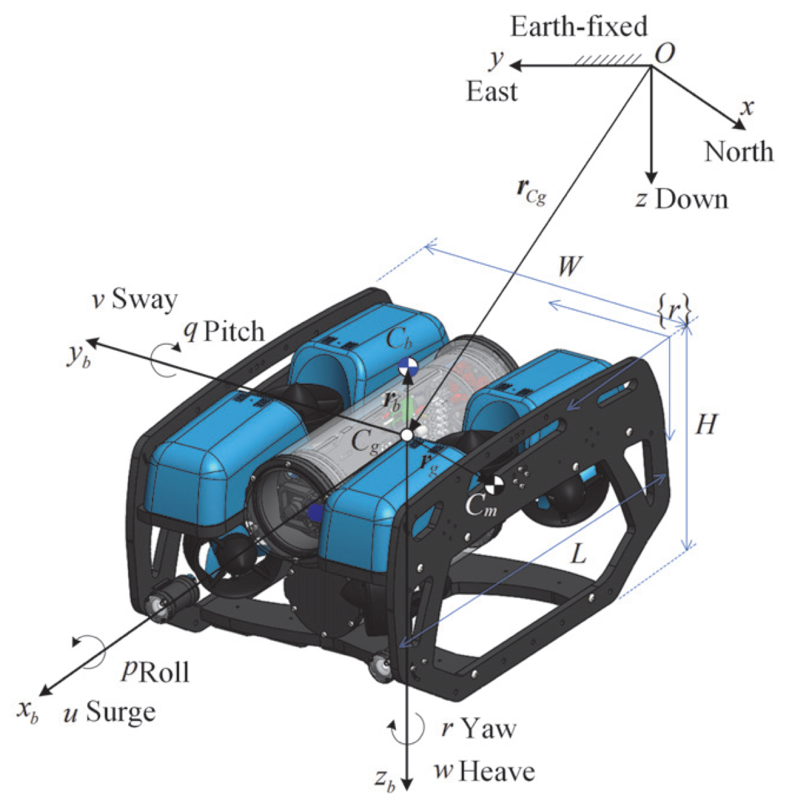
Gambar 2.1 Sistem kerangka acuan inersia bumi ($$\mathcal{F}^n$$ - NED) dan kerangka acuan bergerak bodi ($$\mathcal{F}^b$$ - FRD) konvensi SNAME (1950) dan Fossen (2021)
2.2.1 Kerangka Acuan Inersia Bumi $$\mathcal{F}^n = {O_n, x_n, y_n, z_n}$$
Kerangka acuan inersia bumi (Earth-Fixed Frame atau North-East-Down / NED) didefinisikan sebagai sistem koordinat stasioner yang terikat pada permukaan bumi:
- Titik Asal ($$O_n$$): Ditetapkan pada lokasi referensi geografis di permukaan perairan atau dermaga peluncuran.
- Sumbu $$x_n$$: Mengarah horizontal ke arah Utara sejati (true North).
- Sumbu $$y_n$$: Mengarah horizontal ke arah Timur sejati (true East).
- Sumbu $$z_n$$: Mengarah vertikal tegak lurus ke bawah (Down) menuju pusat bumi, searah dengan vektor percepatan gravitasi bumi $$\mathbf{g}^n = [0, 0, g]^T$$ di mana $$g = 9.80665 \text{ m/s}^2$$.
Karena kecepatan operasional wahana AUV mikro ($$U < 2.0\text{ m/s}$$) dan radius area jelajah ($$L < 5\text{ km}$$) relatif sangat kecil dibandingkan dengan kecepatan rotasi bumi ($$\Omega_E \approx 7.292 \times 10^{-5}\text{ rad/s}$$) dan jari-jari bumi ($$R_E \approx 6.371 \times 10^6\text{ m}$$), maka rasio percepatan sentrifugal rotasi bumi terhadap gravitasi bernilai [7]:
$$\frac{a_{\text{centrifugal}}}{g} = \frac{\Omega_E^2 R_E}{g} \approx \frac{(7.292 \times 10^{-5})^2 (6.371 \times 10^6)}{9.80665} \approx 0.0034 \ll 1$$
Oleh karena itu, percepatan rotasi bumi dan efek Coriolis bumi dapat diabaikan secara analitis, sehingga kerangka acuan $$\mathcal{F}^n$$ diperlakukan secara valid sebagai kerangka inersia Newtonian sejati [7].
2.2.2 Kerangka Acuan Bergerak Bodi Wahana $$\mathcal{F}^b = {O_b, x_b, y_b, z_b}$$
Kerangka acuan bergerak bodi (Body-Fixed Frame atau Forward-Right-Down / FRD) didefinisikan sebagai sistem koordinat ortogonal yang melekat secara permanen pada struktur fisik wahana AUV dan bergerak bersama wahana:
- Titik Asal Bodi ($$O_b$$): Ditetapkan pada Pusat Geometris Wahana (Center of Origin / CO), yang bertepatan dengan pusat geometris tabung tekanan akrilik utama (electronic enclosure).
- Sumbu Longitudinal ($$x_b$$): Mengarah maju ke arah haluan wahana (Forward / Bow), mendefinisikan gerak translasi Surge.
- Sumbu Transversal ($$y_b$$): Mengarah ke sisi kanan lambung wahana (Starboard), mendefinisikan gerak translasi Sway.
- Sumbu Normal ($$z_b$$): Mengarah tegak lurus ke bawah menembus lunas wahana (Down / Keel), mendefinisikan gerak translasi Heave.
Konvensi formal notasi SNAME (1950) dan Fossen (2021) untuk 6 derajat kebebasan spasial dirinci secara komprehensif pada Tabel 2.2 [7].
Tabel 2.2 Notasi dan Konvensi 6 Derajat Kebebasan SNAME (1950) & Fossen (2021)
| Derajat Kebebasan (DOF) |
Gerak Translasi / Rotasi |
Gaya & Momen Bodi ($$\boldsymbol{\tau}$$) |
Kecepatan Linier & Sudut Bodi ($$\boldsymbol{\nu}$$) |
Posisi & Sudut Euler Bumi ($$\boldsymbol{\eta}$$) |
| 1 |
Gerak maju-mundur sepanjang sumbu $$x_b$$ (Surge) |
$$X$$ ($$\text{N}$$) |
$$u$$ ($$\text{m/s}$$) |
$$x$$ ($$\text{m}$$) |
| 2 |
Gerak geser lateral sepanjang sumbu $$y_b$$ (Sway) |
$$Y$$ ($$\text{N}$$) |
$$v$$ ($$\text{m/s}$$) |
$$y$$ ($$\text{m}$$) |
| 3 |
Gerak vertikal sepanjang sumbu $$z_b$$ (Heave) |
$$Z$$ ($$\text{N}$$) |
$$w$$ ($$\text{m/s}$$) |
$$z$$ ($$\text{m}$$) |
| 4 |
Gerak rotasi guling mengelilingi sumbu $$x_b$$ (Roll) |
$$K$$ ($$\text{N}\cdot\text{m}$$) |
$$p$$ ($$\text{rad/s}$$) |
$$\phi$$ ($$\text{rad}$$) |
| 5 |
Gerak rotasi angguk mengelilingi sumbu $$y_b$$ (Pitch) |
$$M$$ ($$\text{N}\cdot\text{m}$$) |
$$q$$ ($$\text{rad/s}$$) |
$$\theta$$ ($$\text{rad}$$) |
| 6 |
Gerak rotasi geleng mengelilingi sumbu $$z_b$$ (Yaw) |
$$N$$ ($$\text{N}\cdot\text{m}$$) |
$$r$$ ($$\text{rad/s}$$) |
$$\psi$$ ($$\text{rad}$$) |
Berdasarkan konvensi Tabel 2.2, keadaan spasial wahana AUV direpresentasikan oleh tiga vektor utama berdimensi enam:
-
Vektor Posisi dan Orientasi di $$\mathcal{F}^n$$:
$$\boldsymbol{\eta} = \begin{bmatrix} \boldsymbol{\eta}_1 \ \boldsymbol{\eta}_2 \end{bmatrix} = \begin{bmatrix} x \\ y \\ z \ \phi \ \theta \ \psi \end{bmatrix} \in \mathbb{R}^6$$
di mana $$\boldsymbol{\eta}_1 = [x, y, z]^T \in \mathbb{R}^3$$ merepresentasikan posisi koordinat kartesian global dalam satuan meter, dan $$\boldsymbol{\eta}_2 = [\phi, \theta, \psi]^T \in \mathbb{R}^3$$ merepresentasikan sudut orientasi Euler (Roll, Pitch, Yaw) dalam satuan radian.
-
Vektor Kecepatan Linier dan Kecepatan Sudut di $$\mathcal{F}^b$$:
$$\boldsymbol{\nu} = \begin{bmatrix} \boldsymbol{\nu}_1 \ \boldsymbol{\nu}_2 \end{bmatrix} = \begin{bmatrix} u \\ v \\ w \\ p \\ q \\ r \end{bmatrix} \in \mathbb{R}^6$$
di mana $$\boldsymbol{\nu}_1 = [u, v, w]^T \in \mathbb{R}^3$$ adalah kecepatan linier bodi (Surge, Sway, Heave) dalam m/s, dan $$\boldsymbol{\nu}_2 = [p, q, r]^T \in \mathbb{R}^3$$ adalah kecepatan sudut bodi (Roll rate, Pitch rate, Yaw rate) dalam rad/s.
-
Vektor Gaya dan Momen Generalisasi di $$\mathcal{F}^b$$:
$$\boldsymbol{\tau} = \begin{bmatrix} \boldsymbol{\tau}_1 \ \boldsymbol{\tau}_2 \end{bmatrix} = \begin{bmatrix} X \\ Y \\ Z \\ K \\ M \\ N \end{bmatrix} \in \mathbb{R}^6$$
di mana $$\boldsymbol{\tau}_1 = [X, Y, Z]^T \in \mathbb{R}^3$$ adalah resultan gaya dorong translasi bodi dalam Newton, dan $$\boldsymbol{\tau}_2 = [K, M, N]^T \in \mathbb{R}^3$$ adalah resultan torsi rotasi bodi dalam Newton-meter.
2.2.3 Pemodelan Arus Laut dan Kecepatan Relatif Fluida
Di dalam lingkungan bawah air, gaya hidrodinamika (massa tambah dan redaman fluida) tidak bekerja berdasarkan kecepatan absolut wahana $$\boldsymbol{\nu}$$, melainkan bergantung secara eksklusif pada kecepatan relatif wahana terhadap massa fluida di sekitarnya [5], [7].
Misalkan vektor kecepatan arus laut di kerangka inersia $$\mathcal{F}^n$$ dimodelkan sebagai aliran translasi horizontal yang bersifat irrotational dan bervariasi lambat (slowly varying current):
$$\mathbf{V}_c^n = \begin{bmatrix} u_c^n \\ v_c^n \\ w_c^n \\ 0 \\ 0 \\ 0 \end{bmatrix} \in \mathbb{R}^6, \qquad \dot{\mathbf{V}}_c^n \approx \mathbf{0}$$
Transformasi kecepatan arus laut dari kerangka inersia $$\mathcal{F}^n$$ ke dalam kerangka bodi $$\mathcal{F}^b$$ dinyatakan melalui transpose matriks rotasi linier $$\mathbf{R}b^n(\boldsymbol{\eta}_2)^T = \mathbf{R}_n^b(\boldsymbol{\eta}_2)$$:
$$\boldsymbol{\nu}_c = \begin{bmatrix} \boldsymbol{\nu} \ \boldsymbol{\nu}{c,2} \end{bmatrix} = \begin{bmatrix} \mathbf{R}_n^b(\boldsymbol{\eta}_2) \mathbf{V}^n \ \mathbf{0}_{3 \times 1} \end{bmatrix} = \begin{bmatrix} u_c \\ v_c \\ w_c \\ 0 \\ 0 \\ 0 \end{bmatrix}$$
Dengan demikian, vektor kecepatan relatif wahana $$\boldsymbol{\nu}_r \in \mathbb{R}^6$$ diformulasikan sebagai [7]:
$$\boldsymbol{\nu}_r = \boldsymbol{\nu} - \boldsymbol{\nu}_c = \begin{bmatrix} u - u_c \\ v - v_c \\ w - w_c \\ p \\ q \\ r \end{bmatrix} = \begin{bmatrix} u_r \\ v_r \\ w_r \\ p \\ q \\ r \end{bmatrix}$$
Turunan waktu dari kecepatan relatif di dalam kerangka bergerak bodi diturunkan dengan memperhitungkan percepatan rotasi kerangka acuan (Coriolis acceleration theorem):
$$\dot{\boldsymbol{\nu}}r = \dot{\boldsymbol{\nu}} - \dot{\boldsymbol{\nu}}_c = \dot{\boldsymbol{\nu}} - \begin{bmatrix} \dot{\mathbf{R}}_n^b \mathbf{V}^n \ \mathbf{0}{3 \times 1} \end{bmatrix}$$
Karena $$\dot{\mathbf{R}}_n^b = -\mathbf{S}(\boldsymbol{\nu}_2)\mathbf{R}_n^b$$, di mana $$\mathbf{S}(\boldsymbol{\nu}_2)$$ adalah operator matriks skew-symmetric cross-product, maka:
$$\dot{\boldsymbol{\nu}}_r = \dot{\boldsymbol{\nu}} + \begin{bmatrix} \mathbf{S}(\boldsymbol{\nu}_2)\boldsymbol{\nu} \ \mathbf{0}{3 \times 1} \end{bmatrix} = \dot{\boldsymbol{\nu}} + \begin{bmatrix} \boldsymbol{\nu}_2 \times \boldsymbol{\nu} \ \mathbf{0}_{3 \times 1} \end{bmatrix}$$
Pada wahana bawah air, Pusat Gravitasi (Center of Gravity / CG) berlokasi di $$\mathbf{r}_g = [x_g, y_g, z_g]^T$$, sedangkan Pusat Gaya Apung (Center of Buoyancy / CB) berlokasi di $$\mathbf{r}_b = [x_b, y_b, z_b]^T$$. Berat total wahana di udara adalah $$W = mg$$, dan gaya apung total fluida yang dipindahkan adalah $$B = \rho g \nabla$$, di mana $$\nabla$$ adalah volume air yang dipindahkan oleh lambung wahana [7].
Untuk menjamin wahana tidak mudah terbalik di bawah air, tata letak massa dirancang sedemikian rupa sehingga komponen berat (baterai, ballast timbal, tabung aluminium) diletakkan di bagian paling bawah lunas ($$z_g > 0$$), sedangkan busa apung (syntactic foam) diletakkan di bagian atas bodi ($$z_b < 0$$). Hal ini menghasilkan tinggi metasentris positif:
$$GM_T = z_g - z_b > 0$$
Gaya berat $$W$$ dan gaya apung $$B$$ yang terpisah secara vertikal menghasilkan momen pemulih hidrostatis pasif (passive metacentric righting moments):
$$K_{\text{restoring}}(\phi) = -(z_g W - z_b B)\cos\theta\sin\phi$$
$$M_{\text{restoring}}(\theta) = -(z_g W - z_b B)\sin\theta$$
Untuk sudut kemiringan kecil ($$\sin\phi \approx \phi, \sin\theta \approx \theta, \cos\theta \approx 1$$), momen ini berperilaku persis seperti pegas torsi mekanis (torsional stiffness springs):
$$K_{\text{restoring}} \approx -k_\phi \phi, \qquad k_\phi = z_g W - z_b B > 0$$
$$M_{\text{restoring}} \approx -k_\theta \theta, \qquad k_\theta = z_g W - z_b B > 0$$
Frekuensi natural osilasi sudut pada sumbu roll ($$\omega_{n,\phi}$$) dan sumbu pitch ($$\omega_{n,\theta}$$) dirumuskan oleh [7], [31]:
$$\omega_{n,\phi} = \sqrt{\frac{z_g W - z_b B}{I_{xx} - K_{\dot{p}}}}, \qquad \omega_{n,\theta} = \sqrt{\frac{z_g W - z_b B}{I_{yy} - M_{\dot{q}}}}$$
Meskipun kekakuan metasentris ini menjaga orientasi wahana tetap datar secara pasif pada wahana underactuated 6-pendorong, kekakuan ini justru menjadi penghalang besar saat wahana ditugaskan untuk melakukan inspeksi berorientasi miring (pitch-hold) terhadap struktur miring di dasar laut [3], [21]. Pada wahana over-actuated 8-pendorong, torsi pemulih hidrostatis ini dapat dilawan dan dikendalikan secara presisi oleh aktuasi gaya dorong diferensial vertikal, memungkinkan wahana menahan sudut pitch konstan $$\theta_{\text{ref}} \neq 0$$ tanpa mengalami osilasi liar atau ketidakstabilan [21], [32].
2.3 Penurunan Kinematika 6-DOF dan Matriks Jacobian
Kinematika wahana laut mendefinisikan pemetaan geometris murni antara vektor kecepatan bodi $$\boldsymbol{\nu} \in \mathbb{R}^6$$ dengan laju perubahan posisi dan orientasi wahana di kerangka bumi $$\dot{\boldsymbol{\eta}} \in \mathbb{R}^6$$, tanpa melibatkan gaya dan massa penyebab gerak [7]:
$$\dot{\boldsymbol{\eta}} = \mathbf{J}(\boldsymbol{\eta}2)\boldsymbol{\nu} \iff \begin{bmatrix} \dot{\boldsymbol{\eta}}_1 \ \dot{\boldsymbol{\eta}}_2 \end{bmatrix} = \begin{bmatrix} \mathbf{R}_b^n(\boldsymbol{\eta}_2) & \mathbf{0} \ \mathbf{0}{3 \times 3} & \mathbf{T}\Theta(\boldsymbol{\eta}_2) \end{bmatrix} \begin{bmatrix} \boldsymbol{\nu}_1 \ \boldsymbol{\nu}_2 \end{bmatrix}$$
Matriks rotasi $$\mathbf{R}b^n(\boldsymbol{\eta}_2)$$ mentransformasikan kecepatan linier dari kerangka bodi $$\mathcal{F}^b$$ ke kerangka bumi $$\mathcal{F}^n$$. Matriks ini merupakan elemen dari grup ortogonal khusus berdimensi tiga, dinotasikan $$\mathbf{R}_b^n \in SO(3)$$, yang memenuhi sifat fundamental:
$$\mathbf{R}_b^n (\mathbf{R}_b^n)^T = (\mathbf{R}_b^n)^T \mathbf{R}_b^n = \mathbf{I}, \qquad \det(\mathbf{R}_b^n) = +1$$
Transformasi rotasi diturunkan menggunakan konvensi rotasi intrinsik Euler Tait-Bryan dengan urutan kanonikal maritim $$z-y-x$$ (Yaw-Pitch-Roll) [7]:
-
Rotasi Pertama: Sudut Yaw ($$\psi$$) mengelilingi sumbu $$z_n$$:
Rotasi ini menghasilkan kerangka antara pertama $$\mathcal{F}'$$:
$$\mathbf{R}_{z,\psi} = \begin{bmatrix} \cos\psi & -\sin\psi & 0 \ \sin\psi & \cos\psi & 0 \\ 0 & 0 & 1 \end{bmatrix}$$
-
Rotasi Kedua: Sudut Pitch ($$\theta$$) mengelilingi sumbu antara $$y'$$:
Rotasi ini menghasilkan kerangka antara kedua $$\mathcal{F}''$$:
$$\mathbf{R}_{y,\theta} = \begin{bmatrix} \cos\theta & 0 & \sin\theta \\ 0 & 1 & 0 \\ -\sin\theta & 0 & \cos\theta \end{bmatrix}$$
-
Rotasi Ketiga: Sudut Roll ($$\phi$$) mengelilingi sumbu bodi $$x'' = x_b$$:
Rotasi ini menghasilkan kerangka bodi akhir $$\mathcal{F}^b$$:
$$\mathbf{R}_{x,\phi} = \begin{bmatrix} 1 & 0 & 0 \\ 0 & \cos\phi & -\sin\phi \\ 0 & \sin\phi & \cos\phi \end{bmatrix}$$
Sesuai aturan perkalian rantai transformasi koordinat rotasi intrinsik:
$$\mathbf{R}b^n(\boldsymbol{\eta}_2) = \mathbf{R} \mathbf{R}{y,\theta} \mathbf{R}$$
Perkalian matriks kedua dan ketiga dilakukan terlebih dahulu:
$$\mathbf{A} = \mathbf{R}{y,\theta} \mathbf{R} = \begin{bmatrix} \cos\theta & 0 & \sin\theta \\ 0 & 1 & 0 \\ -\sin\theta & 0 & \cos\theta \end{bmatrix} \begin{bmatrix} 1 & 0 & 0 \\ 0 & \cos\phi & -\sin\phi \\ 0 & \sin\phi & \cos\phi \end{bmatrix} = \begin{bmatrix} \cos\theta & \sin\theta\sin\phi & \sin\theta\cos\phi \\ 0 & \cos\phi & -\sin\phi \\ -\sin\theta & \cos\theta\sin\phi & \cos\theta\cos\phi \end{bmatrix}$$
Mengalikan matriks $$\mathbf{R}_{z,\psi}$$ dengan matriks intermediate $$\mathbf{A}$$ menghasilkan matriks rotasi lengkap:
$$\mathbf{R}_b^n(\boldsymbol{\eta}_2) = \begin{bmatrix} \cos\psi & -\sin\psi & 0 \ \sin\psi & \cos\psi & 0 \\ 0 & 0 & 1 \end{bmatrix} \begin{bmatrix} \cos\theta & \sin\theta\sin\phi & \sin\theta\cos\phi \\ 0 & \cos\phi & -\sin\phi \\ -\sin\theta & \cos\theta\sin\phi & \cos\theta\cos\phi \end{bmatrix}$$
Evaluasi analitis tiap elemen baris dan kolom menghasilkan matriks transformasi rotasi linier definitif:
$$\mathbf{R}_b^n(\boldsymbol{\eta}_2) = \begin{bmatrix} \cos\psi\cos\theta & -\sin\psi\cos\phi + \cos\psi\sin\theta\sin\phi & \sin\psi\sin\phi + \cos\psi\sin\theta\cos\phi \\ \sin\psi\cos\theta & \cos\psi\cos\phi + \sin\psi\sin\theta\sin\phi & -\cos\psi\sin\phi + \sin\psi\sin\theta\cos\phi \\ -\sin\theta & \cos\theta\sin\phi & \cos\theta\cos\phi \end{bmatrix}$$
Karena sifat ortogonalitas $$\mathbf{R}_b^n \in SO(3)$$, matriks invers transformasi dari kerangka bumi ke kerangka bodi adalah identik dengan matriks transposisinya:
$$\mathbf{R}_n^b(\boldsymbol{\eta}_2) = (\mathbf{R}_b^n(\boldsymbol{\eta}_2))^T = \begin{bmatrix} \cos\psi\cos\theta & \sin\psi\cos\theta & -\sin\theta \\ -\sin\psi\cos\phi + \cos\psi\sin\theta\sin\phi & \cos\psi\cos\phi + \sin\psi\sin\theta\sin\phi & \cos\theta\sin\phi \\ \sin\psi\sin\phi + \cos\psi\sin\theta\cos\phi & -\cos\psi\sin\phi + \sin\psi\sin\theta\cos\phi & \cos\theta\cos\phi \end{bmatrix}$$
Persamaan skalar kinematika translasi diturunkan dengan mengevaluasi hubungan $$\dot{\boldsymbol{\eta}}_1 = \mathbf{R}_b^n(\boldsymbol{\eta}_2)\boldsymbol{\nu}_1$$:
$$\dot{x} = u(\cos\psi\cos\theta) + v(-\sin\psi\cos\phi + \cos\psi\sin\theta\sin\phi) + w(\sin\psi\sin\phi + \cos\psi\sin\theta\cos\phi)$$
$$\dot{y} = u(\sin\psi\cos\theta) + v(\cos\psi\cos\phi + \sin\psi\sin\theta\sin\phi) + w(-\cos\psi\sin\phi + \sin\psi\sin\theta\cos\phi)$$
$$\dot{z} = u(-\sin\theta) + v(\cos\theta\sin\phi) + w(\cos\theta\cos\phi)$$
Kecepatan sudut bodi wahana $$\boldsymbol{\nu}2 = [p, q, r]^T$$ merepresentasikan proyeksi dari laju perubahan sudut Euler $$\dot{\boldsymbol{\eta}}_2 = [\dot{\phi}, \dot{\theta}, \dot{\psi}]^T$$ ke sumbu-sumbu bodi yang bergerak. Proyeksi ini diturunkan dengan memperhatikan orientasi masing-masing sumbu putar rotasi bertingkat [7]:
$$\boldsymbol{\nu}_2 = \begin{bmatrix} p \\ q \\ r \end{bmatrix} = \begin{bmatrix} \dot{\phi} \\ 0 \\ 0 \end{bmatrix} + \mathbf{R}^T \begin{bmatrix} 0 \ \dot{\theta} \\ 0 \end{bmatrix} + \mathbf{R}{x,\phi}^T \mathbf{R}^T \begin{bmatrix} 0 \\ 0 \ \dot{\psi} \end{bmatrix}$$
Mengevaluasi perkalian proyeksi sudut:
$$\mathbf{R}_{x,\phi}^T \begin{bmatrix} 0 \ \dot{\theta} \\ 0 \end{bmatrix} = \begin{bmatrix} 1 & 0 & 0 \\ 0 & \cos\phi & \sin\phi \\ 0 & -\sin\phi & \cos\phi \end{bmatrix} \begin{bmatrix} 0 \ \dot{\theta} \\ 0 \end{bmatrix} = \begin{bmatrix} 0 \ \dot{\theta}\cos\phi \\ -\dot{\theta}\sin\phi \end{bmatrix}$$
$$\mathbf{R}{x,\phi}^T \mathbf{R}^T \begin{bmatrix} 0 \\ 0 \ \dot{\psi} \end{bmatrix} = \begin{bmatrix} \cos\theta & 0 & -\sin\theta \ \sin\theta\sin\phi & \cos\phi & \cos\theta\sin\phi \ \sin\theta\cos\phi & -\sin\phi & \cos\theta\cos\phi \end{bmatrix} \begin{bmatrix} 0 \\ 0 \ \dot{\psi} \end{bmatrix} = \begin{bmatrix} -\dot{\psi}\sin\theta \ \dot{\psi}\sin\phi\cos\theta \ \dot{\psi}\cos\phi\cos\theta \end{bmatrix}$$
Menjumlahkan ketiga komponen proyeksi tersebut:
$$\begin{bmatrix} p \\ q \\ r \end{bmatrix} = \begin{bmatrix} 1 & 0 & -\sin\theta \\ 0 & \cos\phi & \sin\phi\cos\theta \\ 0 & -\sin\phi & \cos\phi\cos\theta \end{bmatrix} \begin{bmatrix} \dot{\phi} \ \dot{\theta} \ \dot{\psi} \end{bmatrix} \iff \boldsymbol{\nu}2 = \mathbf{T}\Theta^{-1}(\boldsymbol{\eta}_2)\dot{\boldsymbol{\eta}}_2$$
Untuk memperoleh relasi maju $$\dot{\boldsymbol{\eta}}2 = \mathbf{T}\Theta(\boldsymbol{\eta}2)\boldsymbol{\nu}_2$$, matriks $$\mathbf{B} = \mathbf{T}\Theta^{-1}$$ harus dibalik. Inversi analitis dilakukan secara rigor langkah demi langkah menggunakan metode matriks kofaktor dan adjoin (cofactor-adjugate method) [7]:
-
Perhitungan Determinan $$\det(\mathbf{B})$$:
Ekspansi Laplace sepanjang baris pertama:
$$\det(\mathbf{B}) = 1 \cdot (\cos\phi \cdot \cos\phi\cos\theta - \sin\phi\cos\theta \cdot (-\sin\phi)) - 0 - \sin\theta \cdot 0$$
$$\det(\mathbf{B}) = \cos^2\phi\cos\theta + \sin^2\phi\cos\theta = (\cos^2\phi + \sin^2\phi)\cos\theta = \cos\theta$$
-
Penyusunan Matriks Kofaktor $$\text{Cof}(\mathbf{B})$$:
Elemen kofaktor didefinisikan sebagai $$C_{ij} = (-1)^{i+j} M_{ij}$$:
- $$C_{11} = +(\cos^2\phi\cos\theta + \sin^2\phi\cos\theta) = \cos\theta$$
- $$C_{12} = -(0 - 0) = 0$$
- $$C_{13} = +(0 - 0) = 0$$
- $$C_{21} = -(0 - (-\sin\phi)(-\sin\theta)) = \sin\phi\sin\theta$$
- $$C_{22} = +(1 \cdot \cos\phi\cos\theta - 0) = \cos\phi\cos\theta$$
- $$C_{23} = -(1 \cdot (-\sin\phi) - 0) = \sin\phi$$
- $$C_{31} = +(0 - \cos\phi(-\sin\theta)) = \cos\phi\sin\theta$$
- $$C_{32} = -(1 \cdot \sin\phi\cos\theta - 0) = -\sin\phi\cos\theta$$
- $$C_{33} = +(1 \cdot \cos\phi - 0) = \cos\phi$$
Sehingga matriks kofaktor adalah:
$$\text{Cof}(\mathbf{B}) = \begin{bmatrix} \cos\theta & 0 & 0 \ \sin\phi\sin\theta & \cos\phi\cos\theta & \sin\phi \ \cos\phi\sin\theta & -\sin\phi\cos\theta & \cos\phi \end{bmatrix}$$
-
Penyusunan Matriks Adjoin $$\text{adj}(\mathbf{B}) = \text{Cof}(\mathbf{B})^T$$:
Transposisi dari matriks kofaktor:
$$\text{adj}(\mathbf{B}) = \begin{bmatrix} \cos\theta & \sin\phi\sin\theta & \cos\phi\sin\theta \\ 0 & \cos\phi\cos\theta & -\sin\phi\cos\theta \\ 0 & \sin\phi & \cos\phi \end{bmatrix}$$
-
Pembagian dengan Determinan $$\cos\theta$$:
$$\mathbf{T}_\Theta(\boldsymbol{\eta}_2) = \frac{1}{\det(\mathbf{B})} \text{adj}(\mathbf{B}) = \frac{1}{\cos\theta} \begin{bmatrix} \cos\theta & \sin\phi\sin\theta & \cos\phi\sin\theta \\ 0 & \cos\phi\cos\theta & -\sin\phi\cos\theta \\ 0 & \sin\phi & \cos\phi \end{bmatrix}$$
Maka diperoleh matriks transformasi kecepatan sudut analitis eksak [7]:
$$\mathbf{T}_\Theta(\boldsymbol{\eta}_2) = \begin{bmatrix} 1 & \sin\phi\tan\theta & \cos\phi\tan\theta \\ 0 & \cos\phi & -\sin\phi \\ 0 & \frac{\sin\phi}{\cos\theta} & \frac{\cos\phi}{\cos\theta} \end{bmatrix}$$
Persamaan skalar kinematika rotasi sudut Euler adalah:
$$\dot{\phi} = p + q(\sin\phi\tan\theta) + r(\cos\phi\tan\theta)$$
$$\dot{\theta} = q(\cos\phi) - r(\sin\phi)$$
$$\dot{\psi} = q\left(\frac{\sin\phi}{\cos\theta}\right) + r\left(\frac{\cos\phi}{\cos\theta}\right)$$
Dari rumusan matematis matriks $$\mathbf{T}_\Theta(\boldsymbol{\eta}_2)$$, terlihat jelas bahwa ketika sudut pitch mendekati tegak lurus:
$$\theta \to \pm 90^\circ \iff \cos\theta \to 0 \implies \tan\theta \to \pm\infty, \quad \frac{1}{\cos\theta} \to \infty$$
Kondisi hilangnya satu derajat kebebasan rotasi ini dikenal sebagai Gimbal Lock (singularitas representasi koordinat Euler). Pada manuver inspeksi bawah air yang melibatkan pitch-angle holding hingga sudut vertikal ekstrim ($$\pm 90^\circ$$), integrasi numerik sudut Euler akan mengalami overflow komputasi tak berhingga [7], [27].
Untuk mengatasi singularitas ini, orientasi wahana direpresentasikan menggunakan unit quaternion empat dimensi $$\mathbf{q} \in \mathcal{S}^3$$ [7], [27]:
$$\mathbf{q} = \begin{bmatrix} \eta \ \epsilon_1 \ \epsilon_2 \ \epsilon_3 \end{bmatrix} = \begin{bmatrix} \eta \ \boldsymbol{\epsilon} \end{bmatrix} \in \mathbb{R}^4, \qquad \eta^2 + \boldsymbol{\epsilon}^T\boldsymbol{\epsilon} = \eta^2 + \epsilon_1^2 + \epsilon_2^2 + \epsilon_3^2 = 1$$
di mana $$\eta = \cos(\beta/2)$$ adalah bagian skalar, dan $$\boldsymbol{\epsilon} = \mathbf{n}\sin(\beta/2)$$ adalah bagian vektor kuaternion yang merepresentasikan rotasi sebesar sudut $$\beta$$ mengelilingi sumbu satuan $$\mathbf{n}$$.
Dinamika diferensial kinematika unit kuaternion bersifat linier terhadap kecepatan sudut bodi $$\boldsymbol{\nu}2$$ dan sepenuhnya bebas singularitas di semua sudut orientasi [7], [27]:
$$\begin{bmatrix} \dot{\eta} \ \dot{\boldsymbol{\epsilon}} \end{bmatrix} = \frac{1}{2} \begin{bmatrix} -\boldsymbol{\epsilon}^T \ \eta\mathbf{I} + \mathbf{S}(\boldsymbol{\epsilon}) \end{bmatrix} \boldsymbol{\nu}_2 = \frac{1}{2} \mathbf{E}(\mathbf{q}) \boldsymbol{\nu}_2$$
di mana matriks skew-symmetric cross-product $$\mathbf{S}(\boldsymbol{\epsilon})$$ didefinisikan sebagai:
$$\mathbf{S}(\boldsymbol{\epsilon}) = \begin{bmatrix} 0 & -\epsilon_3 & \epsilon_2 \ \epsilon_3 & 0 & -\epsilon_1 \\ -\epsilon_2 & \epsilon_1 & 0 \end{bmatrix}$$
Matriks rotasi $$\mathbf{R}(\mathbf{q})$$ yang ekuivalen dalam representasi kuaternion dinyatakan oleh formula Rodrigues [7]:
$$\mathbf{R}(\mathbf{q}) = (\eta^2 - \boldsymbol{\epsilon}^T\boldsymbol{\epsilon})\mathbf{I}_{3 \times 3} + 2\boldsymbol{\epsilon}\boldsymbol{\epsilon}^T + 2\eta\mathbf{S}(\boldsymbol{\epsilon})$$
2.3.4 Matriks Jacobian Kinematika Gabungan $$6 \times 6$$
Menggabungkan transformasi translasi linier dan transformasi sudut Euler menghasilkan matriks Jacobian kinematika 6-DOF terpadu $$\mathbf{J}(\boldsymbol{\eta}_2) \in \mathbb{R}^{6 \times 6}$$ [7]:
$$\begin{bmatrix} \dot{x} \ \dot{y} \ \dot{z} \ \dot{\phi} \ \dot{\theta} \ \dot{\psi} \end{bmatrix} = \begin{bmatrix} \cos\psi\cos\theta & -\sin\psi\cos\phi + \cos\psi\sin\theta\sin\phi & \sin\psi\sin\phi + \cos\psi\sin\theta\cos\phi & 0 & 0 & 0 \\ \sin\psi\cos\theta & \cos\psi\cos\phi + \sin\psi\sin\theta\sin\phi & -\cos\psi\sin\phi + \sin\psi\sin\theta\cos\phi & 0 & 0 & 0 \\ -\sin\theta & \cos\theta\sin\phi & \cos\theta\cos\phi & 0 & 0 & 0 \\ 0 & 0 & 0 & 1 & \sin\phi\tan\theta & \cos\phi\tan\theta \\ 0 & 0 & 0 & 0 & \cos\phi & -\sin\phi \\ 0 & 0 & 0 & 0 & \frac{\sin\phi}{\cos\theta} & \frac{\cos\phi}{\cos\theta} \end{bmatrix} \begin{bmatrix} u \\ v \\ w \\ p \\ q \\ r \end{bmatrix}$$
2.4 Penurunan Dinamika Hidrodinamika 6-DOF (Persamaan Fossen)
Dinamika wahana laut mendeskripsikan hubungan kausal antara gaya-momen penyebab gerak dan percepatan yang dihasilkan pada wahana di dalam media fluida kental (viscous fluid). Formulasi komprehensif kinetika non-linier 6-DOF wahana bawah air mengacu pada kerangka matematis Fossen (2021) [7]:
$$\mathbf{M}\dot{\boldsymbol{\nu}} + \mathbf{C}{RB}(\boldsymbol{\nu})\boldsymbol{\nu} + \mathbf{C}_A(\boldsymbol{\nu}_r)\boldsymbol{\nu}_r + \mathbf{D}(\boldsymbol{\nu}_r)\boldsymbol{\nu}_r + \mathbf{g}(\boldsymbol{\eta}) = \boldsymbol{\tau} + \boldsymbol{\tau}}$$
di mana:
- $$\mathbf{M} \in \mathbb{R}^{6 \times 6}$$: Tensor massa total sistem (gabungan massa bodi kaku dan massa tambah hidrodinamika).
- $$\mathbf{C}{RB}(\boldsymbol{\nu}) \in \mathbb{R}^{6 \times 6}$$: Matriks Coriolis dan sentripetal bodi kaku (rigid-body).
- $$\mathbf{C}_A(\boldsymbol{\nu}_r) \in \mathbb{R}^{6 \times 6}$$: Matriks Coriolis dan sentripetal akibat massa tambah hidrodinamika fluida.
- $$\mathbf{D}(\boldsymbol{\nu}_r) \in \mathbb{R}^{6 \times 6}$$: Tensor redaman hidrodinamika non-linier (gesekan viskos laminar dan seretan bentuk kuadratik Morison).
- $$\mathbf{g}(\boldsymbol{\eta}) \in \mathbb{R}^6$$: Vektor gaya dan momen pemulih hidrostatis (gravitasi dan gaya apung).
- $$\boldsymbol{\tau} \in \mathbb{R}^6$$: Vektor gaya dan momen kontrol generalisasi yang dihasilkan oleh sistem 8 pendorong.
- $$\boldsymbol{\tau}} \in \mathbb{R}^6$$: Vektor gangguan lingkungan tak termodelkan (gelombang internal, tabrakan, reaksi manipulator).
2.4.1 Tensor Massa Total Sistem $$\mathbf{M} = \mathbf{M}_{RB} + \mathbf{M}_A$$
1. Matriks Massa Inersia Bodi Kaku $$\mathbf{M}_{RB}$$
Berdasarkan hukum kedua Newton dan persamaan momentum angular Euler, matriks inersia benda tegar 6-DOF yang dirumuskan terhadap titik acuan geometris $$O_b$$ dengan offset pusat massa $$\mathbf{r}g = [x_g, y_g, z_g]^T$$ dinyatakan sebagai [7]:
$$\mathbf{M} = \begin{bmatrix} m\mathbf{I}{3 \times 3} & -m\mathbf{S}(\mathbf{r}_g) \\ m\mathbf{S}(\mathbf{r}_g) & \mathbf{I}_g - m\mathbf{S}^2(\mathbf{r}_g) \end{bmatrix} \in \mathbb{R}^{6 \times 6}$$
di mana $$m$$ adalah massa kering wahana, $$\mathbf{S}(\mathbf{r}_g)$$ adalah matriks skew-symmetric dari vektor posisi CG:
$$\mathbf{S}(\mathbf{r}_g) = \begin{bmatrix} 0 & -z_g & y_g \\ z_g & 0 & -x_g \\ -y_g & x_g & 0 \end{bmatrix}$$
dan tensor inersia benda tegar terhadap titik pusat massa CG dinyatakan oleh:
$$\mathbf{I}_g = \begin{bmatrix} I & -I_{xy} & -I_{xz} \\ -I_{xy} & I_{yy} -I_{yz} \\ -I_{xz} & -I_{yz} & I_{zz} \end{bmatrix}$$
Suku teorema sumbu sejajar (parallel-axis theorem) $$-m\mathbf{S}^2(\mathbf{r}_g)$$ dihitung melalui perkalian matriks skew-symmetric:
$$-\mathbf{S}^2(\mathbf{r}_g) = \begin{bmatrix} y_g^2 + z_g^2 & -x_g y_g & -x_g z_g \\ -x_g y_g & x_g^2 + z_g^2 & -y_g z_g \\ -x_g z_g & -y_g z_g & x_g^2 + y_g^2 \end{bmatrix}$$
Pada arsitektur BlueROV2 Heavy yang dirancang dengan simetri bilateral transversal dan longitudinal ($$x_g \approx 0, y_g \approx 0$$) dan produk inersia silang mendekati nol ($$I_{xy} \approx I_{xz} \approx I_{yz} \approx 0$$) [3], [21], [31]:
$$\mathbf{M}{RB} = \begin{bmatrix} m & 0 & 0 & 0 & m z_g & 0 \\ 0 & m & 0 & -m z_g & 0 & 0 \\ 0 & 0 & m & 0 & 0 & 0 \\ 0 & -m z_g & 0 & I + m z_g^2 & 0 & 0 \\ m z_g & 0 & 0 & 0 & I_{yy} + m z_g^2 & 0 \\ 0 & 0 & 0 & 0 & 0 & I_{zz} \end{bmatrix}$$
Dengan parameter fisik terukur pada platform uji BlueROV2 Heavy: massa kering $$m = 13.5\text{ kg}$$, $$z_g = 0.02\text{ m}$$, dan momen inersia bodi $$I_{xx} = 0.16\text{ kg}\cdot\text{m}^2$$, $$I_{yy} = 0.21\text{ kg}\cdot\text{m}^2$$, $$I_{zz} = 0.245\text{ kg}\cdot\text{m}^2$$ [3], [21], [31]:
$$\mathbf{M}_{RB} \approx \text{diag}[13.5, 13.5, 13.5, 0.16, 0.21, 0.245]$$
2. Matriks Massa Tambah Hidrodinamika Fluida $$\mathbf{M}_A$$
Ketika wahana bergerak di bawah air, fluida di sekitarnya ikut terakselerasi. Inersia fluida yang terdefleksi ini dimodelkan sebagai massa tambah hidrodinamika (hydrodynamic added mass) melalui turunan kestabilan SNAME [7]:
$$\mathbf{M}A = -\begin{bmatrix} X} & X_{\dot{v}} & X_{\dot{w}} & X_{\dot{p}} & X_{\dot{q}} & X_{\dot{r}} \\ Y_{\dot{u}} & Y_{\dot{v}} & Y_{\dot{w}} & Y_{\dot{p}} & Y_{\dot{q}} & Y_{\dot{r}} \\ Z_{\dot{u}} & Z_{\dot{v}} & Z_{\dot{w}} & Z_{\dot{p}} & Z_{\dot{q}} & Z_{\dot{r}} \\ K_{\dot{u}} & K_{\dot{v}} & K_{\dot{w}} & K_{\dot{p}} & K_{\dot{q}} & K_{\dot{r}} \\ M_{\dot{u}} & M_{\dot{v}} & M_{\dot{w}} & M_{\dot{p}} & M_{\dot{q}} & M_{\dot{r}} \\ N_{\dot{u}} & N_{\dot{v}} & N_{\dot{w}} & N_{\dot{p}} & N_{\dot{q}} & N_{\dot{r}} \end{bmatrix}$$
Pada fluida tak berotasi (ideal fluid / potential flow theory), matriks massa tambah selalu simetris dan bernilai definit positif ($$\mathbf{M}A = \mathbf{M}_A^T \succ 0$$) [7]. Untuk wahana open-frame dengan tiga bidang simetri geometris pada kecepatan rendah hingga moderat, koefisien massa tambah non-diagonal bernilai sangat kecil dibandingkan elemen diagonal utama [1], [21], [31], sehingga tereduksi menjadi:
$$\mathbf{M}_A = -\text{diag}[X}, Y_{\dot{v}}, Z_{\dot{w}}, K_{\dot{p}}, M_{\dot{q}}, N_{\dot{r}}]$$
Berdasarkan data eksperimental dan simulasi hidrodinamika terverifikasi [21], [31]:
$$X_{\dot{u}} = -6.36\text{ kg}, \quad Y_{\dot{v}} = -7.12\text{ kg}, \quad Z_{\dot{w}} = -18.68\text{ kg}$$
$$K_{\dot{p}} = -0.015\text{ kg}\cdot\text{m}^2, \quad M_{\dot{q}} = -0.080\text{ kg}\cdot\text{m}^2, \quad N_{\dot{r}} = -0.245\text{ kg}\cdot\text{m}^2$$
Perhatikan bahwa massa tambah pada sumbu heave ($$Z_{\dot{w}} = -18.68\text{ kg}$$) bernilai paling besar karena adanya profil pelat horizontal, tabung elektronik ganda, dan pelindung busa apung yang menghadirkan penampang proyeksi fluida vertikal yang sangat lebar [21], [31].
3. Tensor Massa Sistem Gabungan $$\mathbf{M}$$
Penjumlahan matriks inersia bodi kaku dan massa tambah hidrodinamika menghasilkan tensor massa total sistem:
$$\mathbf{M} = \mathbf{M}{RB} + \mathbf{M}_A = \text{diag}[m - X}, m - Y_{\dot{v}}, m - Z_{\dot{w}}, I_{xx} - K_{\dot{p}}, I_{yy} - M_{\dot{q}}, I_{zz} - N_{\dot{r}}]$$
Substitusi nilai parameter fisik menghasilkan nilai kuantitatif:
$$\mathbf{M} = \text{diag}[19.86\text{ kg}, 20.62\text{ kg}, 32.18\text{ kg}, 0.175\text{ kg}\cdot\text{m}^2, 0.290\text{ kg}\cdot\text{m}^2, 0.490\text{ kg}\cdot\text{m}^2]$$
2.4.2 Matriks Coriolis dan Sentripetal $$\mathbf{C}_{RB}(\boldsymbol{\nu})$$ dan $$\mathbf{C}_A(\boldsymbol{\nu}_r)$$
1. Matriks Coriolis Bodi Kaku $$\mathbf{C}_{RB}(\boldsymbol{\nu})$$
Matriks Coriolis-sentripetal bodi kaku merepresentasikan gaya semu inersia yang muncul akibat gerak wahana di dalam kerangka referensi bodi yang berotasi. Menggunakan representasi skew-symmetric Kirchhoff [7]:
$$\mathbf{C}{RB}(\boldsymbol{\nu}) = \begin{bmatrix} \mathbf{0} & -\mathbf{S}(\mathbf{M}{RB,11}\boldsymbol{\nu}_1 + \mathbf{M}\boldsymbol{\nu}2) \\ -\mathbf{S}(\mathbf{M}\boldsymbol{\nu}1 + \mathbf{M}\boldsymbol{\nu}2) & -\mathbf{S}(\mathbf{M}\boldsymbol{\nu}1 + \mathbf{M}\boldsymbol{\nu}2) \end{bmatrix}$$
Untuk kondisi simetri di mana $$\mathbf{r}_g \approx \mathbf{0}$$:
$$\mathbf{C}(\boldsymbol{\nu}) = \begin{bmatrix} 0 & 0 & 0 & 0 & mw & -mv \\ 0 & 0 & 0 & -mw & 0 & mu \\ 0 & 0 & 0 & mv & -mu & 0 \\ 0 & mw & -mv & 0 & I_{zz}r & -I_{yy}q \\ -mw & 0 & mu & -I_{zz}r & 0 & I_{xx}p \\ mv & -mu & 0 & I_{yy}q & -I_{xx}p & 0 \end{bmatrix}$$
2. Matriks Coriolis Massa Tambah $$\mathbf{C}_A(\boldsymbol{\nu}_r)$$
Matriks Coriolis massa tambah diturunkan dari energi kinetik fluida terakselerasi [7]:
$$\mathbf{C}A(\boldsymbol{\nu}_r) = \begin{bmatrix} \mathbf{0} & -\mathbf{S}(\mathbf{M}{A,11}\boldsymbol{\nu} + \mathbf{M}{A,12}\boldsymbol{\nu}) \\ -\mathbf{S}(\mathbf{M}{A,11}\boldsymbol{\nu} + \mathbf{M}{A,12}\boldsymbol{\nu}) & -\mathbf{S}(\mathbf{M}{A,21}\boldsymbol{\nu} + \mathbf{M}{A,22}\boldsymbol{\nu}) \end{bmatrix}$$
Dengan mengasumsikan matriks massa tambah diagonal:
$$\mathbf{C}A(\boldsymbol{\nu}_r) = \begin{bmatrix} 0 & 0 & 0 & 0 & -Z}w_r & Y_{\dot{v}}v_r \\ 0 & 0 & 0 & Z_{\dot{w}}w_r & 0 & -X_{\dot{u}}u_r \\ 0 & 0 & 0 & -Y_{\dot{v}}v_r & X_{\dot{u}}u_r & 0 \\ 0 & -Z_{\dot{w}}w_r & Y_{\dot{v}}v_r & 0 & -N_{\dot{r}}r & M_{\dot{q}}q \\ Z_{\dot{w}}w_r & 0 & -X_{\dot{u}}u_r & N_{\dot{r}}r & 0 & -K_{\dot{p}}p \\ -Y_{\dot{v}}v_r & X_{\dot{u}}u_r & 0 & -M_{\dot{q}}q & K_{\dot{p}}p & 0 \end{bmatrix}$$
2.4.3 Analisis Destabilisasi Momen Munk Hidrodinamika (Hydrodynamic Munk Moment)
Fenomena hidrodinamika non-linier yang paling krusial dalam manuver wahana bawah air adalah momen Munk hidrodinamika [7], [34]. Momen ini timbul akibat perbedaan (asymmetry) antara massa tambah transversal ($$Y_{\dot{v}}$$) dan massa tambah longitudinal ($$X_{\dot{u}}$$).
Bukti analitis keberadaan momen Munk diturunkan secara langsung dari evaluasi baris ke-6 (sumbu Yaw $$N$$) pada perkalian matriks Coriolis massa tambah dengan vektor kecepatan relatif $$\mathbf{C}A(\boldsymbol{\nu}_r)\boldsymbol{\nu}_r$$ [7]:
Perhatikan baris ke-6 matriks $$\mathbf{C}_A(\boldsymbol{\nu}_r)$$:
$$\text{Baris}_6 = \begin{bmatrix} -Y}v_r & X_{\dot{u}}u_r & 0 & -M_{\dot{q}}q & K_{\dot{p}}p & 0 \end{bmatrix}$$
Ketika dikalikan dengan vektor kecepatan relatif fluida $$\boldsymbol{\nu}r = [u_r, v_r, w_r, p, q, r]^T$$:
$$N} = (-Y_{\dot{v}}v_r)(u_r) + (X_{\dot{u}}u_r)(v_r) + 0 - M_{\dot{q}}q p + K_{\dot{p}}p q + 0$$
$$N_{\text{coriolis}} = (X_{\dot{u}} - Y_{\dot{v}})u_r v_r + (K_{\dot{p}} - M_{\dot{q}})pq$$
Komponen translasi murni pada bidang horizontal adalah:
$$N_{\text{Munk}} = (X_{\dot{u}} - Y_{\dot{v}})u_r v_r$$
Untuk wahana AUV yang memiliki penampang frontal lebih ramping dibandingkan penampang sampingnya, besar nilai absolut massa tambah lateral selalu melebihi massa tambah aksial:
$$|Y_{\dot{v}}| > |X_{\dot{u}}| \iff -Y_{\dot{v}} > -X_{\dot{u}} \implies (X_{\dot{u}} - Y_{\dot{v}}) > 0$$
Konsekuensi fisis dari hubungan ini sangat fatal pada wahana yang tidak memiliki aktuasi kompensasi aktif [7], [34]:
- Misalkan wahana melaju ke depan ($$u_r > 0$$) dan mengalami gangguan arus samping kecil dari arah kiri sehingga timbul kecepatan geser ke kanan ($$v_r > 0$$).
- Karena $$(X_{\dot{u}} - Y_{\dot{v}}) > 0$$, maka momen Munk menghasilkan torsi yaw positif:
$$N_{\text{Munk}} > 0$$
- Torsi yaw positif ini memutar haluan wahana semakin ke kanan, memperbesar sudut hanyut (drift angle), yang pada gilirannya menaikkan nilai $$v_r$$, sehingga memicu momen destabilisasi yang semakin membesar secara eksponensial!
Pada wahana underactuated 6-pendorong, fenomena kopling silang momen Munk ini menyebabkan wahana melenceng dari jalur dan tidak mampu mempertahankan orientasi garis lurus saat melaju pada kecepatan jelajah tinggi [7], [31]. Sebaliknya, pada wahana over-actuated 8-pendorong yang diteliti dalam tugas akhir ini, sistem kendali alokasi gaya dorong terpadu dapat menghitung torsi kompensasi balik secara seketika melalui umpan balik status dari penapis EKF, sehingga momen Munk dapat diredam secara aktif (active dynamic suppression) [21], [32].
2.4.4 Tensor Redaman Hidrodinamika Fluida $$\mathbf{D}(\boldsymbol{\nu}_r)$$
Redaman hidrodinamika fluida pada wahana open-frame berkecepatan rendah dimodelkan sebagai gabungan linier antara disipasi gesekan kulit laminar viskos (skin friction) dan seretan bentuk kuadratik turbulen (cross-flow drag) sesuai formulasi Morison [7], [31]:
$$\mathbf{D}(\boldsymbol{\nu}r) = \mathbf{D}_L + \mathbf{D}(\boldsymbol{\nu}_r)$$
-
Matriks Redaman Linier Laminar $$\mathbf{D}_L$$:
Dominan pada kecepatan sangat rendah ($$U < 0.1\text{ m/s}$$) di mana lapisan batas fluida bersifat laminar:
$$\mathbf{D}_L = -\text{diag}[X_u, Y_v, Z_w, K_p, M_q, N_r]$$
Berdasarkan data karakterisasi eksperimental [21], [31]:
$$\mathbf{D}_L = \text{diag}[13.7, 19.5, 31.8, 0.15, 0.25, 0.40]\text{ N}\cdot\text{s/m, N}\cdot\text{m}\cdot\text{s/rad}$$
-
Matriks Redaman Kuadratik Turbulen $$\mathbf{D}_{NL}(\boldsymbol{\nu}_r)$$:
Dominan pada kecepatan operasi normal ($$U \ge 0.2\text{ m/s}$$), di mana pelepasan pusaran (vortex shedding) di sekitar struktur rangka terbuka dan tabung akrilik menimbulkan seretan kuadratik:
$$\mathbf{D}{NL}(\boldsymbol{\nu}_r) = -\text{diag}[X|u_r|, Y_{v|v|}|v_r|, Z_{w|w|}|w_r|, K_{p|p|}|p|, M_{q|q|}|q|, N_{r|r|}|r|]$$
Berdasarkan koefisien seretan empiris BlueROV2 Heavy [21], [31]:
$$\mathbf{D}_{NL}(\boldsymbol{\nu}_r) = \text{diag}[33.8|u_r|, 54.2|v_r|, 73.2|w_r|, 0.45|p|, 0.65|q|, 1.15|r|]$$
Total gaya disipasi redaman hidrodinamika pada kerangka bodi dinyatakan oleh:
$$\mathbf{D}(\boldsymbol{\nu}r)\boldsymbol{\nu}_r = \begin{bmatrix} -(X_u + X|u_r|)u_r \\ -(Y_v + Y_{v|v|}|v_r|)v_r \\ -(Z_w + Z_{w|w|}|w_r|)w_r \\ -(K_p + K_{p|p|}|p|)p \\ -(M_q + M_{q|q|}|q|)q \\ -(N_r + N_{r|r|}|r|)r \end{bmatrix}$$
2.4.5 Vektor Gaya dan Momen Pemulih Hidrostatis 6-DOF Penuh $$\mathbf{g}(\boldsymbol{\eta})$$
Gaya hidrostatis terdiri dari gaya berat gravitasi $$W = mg$$ yang bekerja vertikal ke bawah pada Pusat Gravitasi $$\mathbf{r}_g = [x_g, y_g, z_g]^T$$, dan gaya apung Archimedes $$B = \rho g \nabla$$ yang bekerja vertikal ke atas pada Pusat Daya Apung $$\mathbf{r}_b = [x_b, y_b, z_b]^T$$ [7].
Transformasi vektor gaya gravitasi dan gaya apung ke kerangka bodi $$\mathcal{F}^b$$ dinyatakan oleh:
$$\mathbf{f}_g^b = \mathbf{R}_n^b(\boldsymbol{\eta}_2) \begin{bmatrix} 0 \\ 0 \\ W \end{bmatrix} = \begin{bmatrix} -W\sin\theta \\ W\cos\theta\sin\phi \\ W\cos\theta\cos\phi \end{bmatrix}, \qquad \mathbf{f}_b^b = \mathbf{R}_n^b(\boldsymbol{\eta}_2) \begin{bmatrix} 0 \\ 0 \\ -B \end{bmatrix} = \begin{bmatrix} B\sin\theta \\ -B\cos\theta\sin\phi \\ -B\cos\theta\cos\phi \end{bmatrix}$$
Resultan gaya hidrostatis bodi adalah:
$$\mathbf{f}_{\text{restoring}}^b = \mathbf{f}_g^b + \mathbf{f}_b^b = \begin{bmatrix} -(W - B)\sin\theta \\ (W - B)\cos\theta\sin\phi \\ (W - B)\cos\theta\cos\phi \end{bmatrix}$$
Momen pemulih hidrostatis bodi diturunkan melalui perkalian silang posisi terhadap titik asal $$O_b$$:
$$\boldsymbol{\tau}_{\text{restoring}}^b = (\mathbf{r}_g \times \mathbf{f}_g^b) + (\mathbf{r}_b \times \mathbf{f}_b^b)$$
Karena vektor pemulih didefinisikan sebagai suku pengurang di ruas kiri persamaan gerak ($$\mathbf{g}(\boldsymbol{\eta}) = -\begin{bmatrix} \mathbf{f}{\text{restoring}}^b \ \boldsymbol{\tau}}^b \end{bmatrix}$$), maka diperoleh formulasi umum 6-DOF [7]:
$$\mathbf{g}(\boldsymbol{\eta}) = \begin{bmatrix} (W - B)\sin\theta \\ -(W - B)\cos\theta\sin\phi \\ -(W - B)\cos\theta\cos\phi \\ -(y_g W - y_b B)\cos\theta\cos\phi + (z_g W - z_b B)\cos\theta\sin\phi \\ (z_g W - z_b B)\sin\theta + (x_g W - x_b B)\cos\theta\cos\phi \\ -(x_g W - x_b B)\cos\theta\sin\phi - (y_g W - y_b B)\sin\theta \end{bmatrix}$$
Pada wahana yang dirancang netral secara apung (neutrally buoyant, $$W \approx B$$) dan pusat koordinat $$O_b$$ berimpit dengan CB ($$\mathbf{r}_b = \mathbf{0}$$) serta massa simetris ($$x_g \approx 0, y_g \approx 0, z_g > 0$$) [7], [21]:
$$\mathbf{g}(\boldsymbol{\eta}) = \begin{bmatrix} 0 \\ 0 \\ 0 \\ z_g W \cos\theta\sin\phi \\ z_g W \sin\theta \\ 0 \end{bmatrix}$$
Persamaan ini menunjukkan bahwa gaya apung netral menghilangkan gaya hidrostatis translasi, sementara tinggi metasentris $$z_g W > 0$$ menyediakan kekakuan pemulih pada sumbu rotasi roll ($$\phi$$) dan pitch ($$\theta$$).
2.5 Alokasi Gaya Dorong Sistem Over-Actuated 8-Pendorong
Salah satu keunggulan mendasar dari arsitektur wahana BlueROV2 Heavy adalah sistem aktuasinya yang bersifat over-actuated [3], [21], [32]. Wahana ini dilengkapi dengan 8 unit pendorong elektro-mekanis Brushless DC (Blue Robotics BLDC Underwater Thruster) yang disusun secara geometris untuk mengendalikan 6 derajat kebebasan spasial. Karena jumlah aktuator ($$m = 8$$) melebihi jumlah derajat kebebasan yang dikendalikan ($$n = 6$$), sistem memiliki dua derajat redundansi aktuasi ($$m - n = 2$$) [7], [32]. Redundansi ini menghadirkan ruang nol aktuasi (actuator null-space) yang memungkinkan optimasi konsumsi energi listrik, penghindaran saturasi pendorong individual, serta kemampuan rekonfigurasi toleransi kesalahan (fault-tolerant control) [21], [32].
2.5.1 Karakteristik Dinamika Motor Pendorong Tanpa Sikat Bawah Air (BLDC Underwater Thruster)
Setiap unit motor pendorong bawah air terdiri atas motor brushless DC (BLDC) 3-fase dengan efisiensi tinggi yang terendam langsung di dalam air (flooded motor design) dan dikendalikan oleh Electronic Speed Controller (ESC) berbasis modulasi lebar pulsa (Pulse Width Modulation / PWM). Baling-baling berdiameter $$D_p = 0.076\text{ m}$$ menghasilkan gaya dorong hidrodinamika fluida ($$T_i$$) yang sebanding dengan kuadrat kecepatan putar poros ($$n_i$$ dalam RPM atau rev/s) [3], [7]:
$$T_i = K_T \rho D_p^4 n_i |n_i|$$
di mana:
- $$K_T$$ adalah koefisien gaya dorong baling-baling non-dimensi ($$K_T \approx 0.11$$ untuk gerak maju dan $$K_T \approx 0.09$$ untuk gerak mundur).
- $$\rho = 1025\text{ kg/m}^3$$ adalah densitas massa air laut.
- $$D_p = 0.076\text{ m}$$ adalah diameter luar propeler.
Karakteristik gaya dorong maksimum yang dihasilkan oleh motor pendorong BLDC pada tegangan nominal baterai 16V (4S LiPo) adalah sebesar $$+51.5\text{ N}$$ ($$+5.25\text{ kgf}$$) untuk arah maju dan $$-40.2\text{ N}$$ ($$-4.1\text{ kgf}$$) untuk arah mundur [3].
Dinamika respons elektrik dan hidrodinamika pendorong dimodelkan sebagai sistem diferensial orde pertama linier dengan konstanta waktu elektro-mekanis $$\tau_m \approx 0.05\text{ s}$$ [7], [31]:
$$\dot{f}i(t) = \frac{1}{\tau_m} \left( f}(t) - f_i(t) \right)$$
di mana $$f_{i,\text{cmd}}$$ adalah perintah gaya dorong yang diminta oleh algoritma kontrol alokasi, dan $$f_i$$ adalah gaya dorong aktual yang dihasilkan oleh pendorong ke-$$i$$.
Gaya dan torsi generalisasi total $$\boldsymbol{\tau} \in \mathbb{R}^6$$ yang bekerja pada kerangka bodi wahana merupakan superposisi linier dari kontribusi gaya translasi dan momen putar dari kedelapan motor pendorong [7], [32]:
$$\boldsymbol{\tau} = \sum_{i=1}^8 \mathbf{t}i f_i = \mathbf{T} \mathbf{f}$$
di mana:
- $$\mathbf{f} = [f_1, f_2, f_3, f_4, f_5, f_6, f_7, f_8]^T \in \mathbb{R}^8$$ adalah vektor gaya dorong individual tiap motor (Newton).
- Kolom ke-$$i$$ dari matriks alokasi, dinotasikan $$\mathbf{t}_i \in \mathbb{R}^6$$, dibentuk dari vektor satuan arah dorong $$\mathbf{d}_i \in \mathbb{R}^3$$ dan lengan momen posisi pendorong $$\mathbf{r}_i = [x_i, y_i, z_i]^T \in \mathbb{R}^3$$ terhadap titik asal acuan $$O_b$$ [7]:
$$\mathbf{t}_i = \begin{bmatrix} \mathbf{d}_i \ \mathbf{r}_i \times \mathbf{d}_i \end{bmatrix} \in \mathbb{R}^6$$
Tata letak fisik 8 pendorong pada arsitektur BlueROV2 Heavy dibagi menjadi dua subsistem independen [3], [21]:
1. Subsistem Horizontal (Pendorong 1, 2, 3, 4):
Empat pendorong dipasang horizontal di bidang $$x_b-y_b$$ membentuk konfigurasi vectored dengan sudut canting $$\alpha = 45^\circ$$ ($$\pi/4\text{ rad}$$) terhadap sumbu longitudinal. Konfigurasi ini menghasilkan gaya translasi gabungan Surge ($$X$$), Sway ($$Y$$), dan momen rotasi Yaw ($$N$$).
2. Subsistem Vertikal (Pendorong 5, 6, 7, 8):
Empat pendorong dipasang vertikal di keempat sudut sasis (port-fore, starboard-fore, port-aft, starboard-aft). Pendorong ini menghasilkan gaya translasi Heave ($$Z$$), serta momen kendali aktif independen pada sumbu Roll ($$K$$) dan sumbu Pitch ($$M$$).
Koordinat spasial posisi dan vektor satuan arah dorong untuk kedelapan motor pendorong wahana over-actuated disajikan pada Tabel 2.3 [3], [21], [31].
Tabel 2.3 Koordinat Spasial dan Vektor Orientasi 8 Pendorong Wahana Over-Actuated
| Indeks ($$i$$) |
Penamaan Pendorong |
Posisi $$x_i$$ (m) |
Posisi $$y_i$$ (m) |
Posisi $$z_i$$ (m) |
Arah $$d_{x,i}$$ |
Arah $$d_{y,i}$$ |
Arah $$d_{z,i}$$ |
| 1 |
Horizontal Kiri-Depan (Port-Fore) |
$$+0.156$$ |
$$-0.111$$ |
$$0.000$$ |
$$+\cos(45^\circ)$$ |
$$+\sin(45^\circ)$$ |
$$0.000$$ |
| 2 |
Horizontal Kanan-Depan (Starboard-Fore) |
$$+0.156$$ |
$$+0.111$$ |
$$0.000$$ |
$$+\cos(45^\circ)$$ |
$$-\sin(45^\circ)$$ |
$$0.000$$ |
| 3 |
Horizontal Kiri-Belakang (Port-Aft) |
$$-0.156$$ |
$$-0.111$$ |
$$0.000$$ |
$$-\cos(45^\circ)$$ |
$$+\sin(45^\circ)$$ |
$$0.000$$ |
| 4 |
Horizontal Kanan-Belakang (Starboard-Aft) |
$$-0.156$$ |
$$+0.111$$ |
$$0.000$$ |
$$-\cos(45^\circ)$$ |
$$-\sin(45^\circ)$$ |
$$0.000$$ |
| 5 |
Vertikal Kiri-Depan (Port-Fore Vertical) |
$$+0.120$$ |
$$-0.218$$ |
$$-0.055$$ |
$$0.000$$ |
$$0.000$$ |
$$-1.000$$ |
| 6 |
Vertikal Kanan-Depan (Starboard-Fore Vertical) |
$$+0.120$$ |
$$+0.218$$ |
$$-0.055$$ |
$$0.000$$ |
$$0.000$$ |
$$-1.000$$ |
| 7 |
Vertikal Kiri-Belakang (Port-Aft Vertical) |
$$-0.120$$ |
$$-0.218$$ |
$$-0.055$$ |
$$0.000$$ |
$$0.000$$ |
$$-1.000$$ |
| 8 |
Vertikal Kanan-Belakang (Starboard-Aft Vertical) |
$$-0.120$$ |
$$+0.218$$ |
$$-0.055$$ |
$$0.000$$ |
$$0.000$$ |
$$-1.000$$ |
Catatan: Nilai $$\cos(45^\circ) = \sin(45^\circ) = \frac{\sqrt{2}}{2} \approx 0.7071$$.
Perhitungan lengan momen rotasi $$\mathbf{r}i \times \mathbf{d}_i$$ untuk masing-masing pendorong dievaluasi sebagai berikut [7]:
$$\mathbf{r}_i \times \mathbf{d}_i = \begin{bmatrix} y_i d - z_i d_{y,i} \\ z_i d_{x,i} - x_i d_{z,i} \\ x_i d_{y,i} - y_i d_{x,i} \end{bmatrix}$$
-
Untuk Pendorong Horizontal ($$i = 1, 2, 3, 4$$):
Karena $$z_i = 0$$ dan $$d_{z,i} = 0$$, maka komponen momen putar roll ($$K$$) dan pitch ($$M$$) bernilai nol. Komponen momen yaw ($$N$$) adalah:
- $$N_1 = x_1 d_{y,1} - y_1 d_{x,1} = (0.156)(0.7071) - (-0.111)(0.7071) = (0.156 + 0.111)(0.7071) = 0.267 \cdot 0.7071 \approx +0.1888\text{ m}$$
- $$N_2 = x_2 d_{y,2} - y_2 d_{x,2} = (0.156)(-0.7071) - (0.111)(0.7071) = -(0.156 + 0.111)(0.7071) \approx -0.1888\text{ m}$$
- $$N_3 = x_3 d_{y,3} - y_3 d_{x,3} = (-0.156)(0.7071) - (-0.111)(-0.7071) = -0.1103 - 0.0785 \approx -0.1888\text{ m}$$
- $$N_4 = x_4 d_{y,4} - y_4 d_{x,4} = (-0.156)(-0.7071) - (0.111)(-0.7071) = +0.1103 + 0.0785 \approx +0.1888\text{ m}$$
-
Untuk Pendorong Vertikal ($$i = 5, 6, 7, 8$$):
Karena $$d_{x,i} = 0, d_{y,i} = 0, d_{z,i} = -1$$, maka gaya translasi murni bekerja pada sumbu heave ($$Z = -1$$). Komponen momen putar adalah:
- $$K_i = y_i d_{z,i} - z_i d_{y,i} = -y_i$$ (momen roll)
- $$M_i = z_i d_{x,i} - x_i d_{z,i} = x_i$$ (momen pitch)
- $$N_i = x_i d_{y,i} - y_i d_{x,i} = 0$$ (momen yaw)
Sehingga nilai lengan momen untuk pendorong vertikal:
- Motor 5 (Port-Fore): $$K_5 = -(-0.218) = +0.218\text{ m}$$, $$M_5 = +0.120\text{ m}$$
- Motor 6 (Stbd-Fore): $$K_6 = -(+0.218) = -0.218\text{ m}$$, $$M_6 = +0.120\text{ m}$$
- Motor 7 (Port-Aft): $$K_7 = -(-0.218) = +0.218\text{ m}$$, $$M_7 = -0.120\text{ m}$$
- Motor 8 (Stbd-Aft): $$K_8 = -(+0.218) = -0.218\text{ m}$$, $$M_8 = -0.120\text{ m}$$
Menyusun kedelapan vektor kolom $$\mathbf{t}1, \dots, \mathbf{t}_8$$ menghasilkan Matriks Konfigurasi Alokasi Gaya Dorong 6x8 eksplisit [21], [32]:
$$\mathbf{T} = \begin{bmatrix} c & c & -c & -c & 0 & 0 & 0 & 0 \\ c & -c & c & -c & 0 & 0 & 0 & 0 \\ 0 & 0 & 0 & 0 & -1 & -1 & -1 & -1 \\ 0 & 0 & 0 & 0 & +y_v & -y_v & +y_v & -y_v \\ 0 & 0 & 0 & 0 & +x_v & +x_v & -x_v & -x_v \\ +l_h & -l_h & -l_h & +l_h & 0 & 0 & 0 & 0 \end{bmatrix}$$
Substitusi nilai parameter numerik ($$c = 0.7071$$, $$l_h = 0.1888\text{ m}$$, $$x_v = 0.120\text{ m}$$, $$y_v = 0.218\text{ m}$$):
$$\mathbf{T}_{6 \times 8} = \begin{bmatrix} 0.7071 & 0.7071 & -0.7071 & -0.7071 & 0 & 0 & 0 & 0 \\ 0.7071 & -0.7071 & 0.7071 & -0.7071 & 0 & 0 & 0 & 0 \\ 0 & 0 & 0 & 0 & -1.0 & -1.0 & -1.0 & -1.0 \\ 0 & 0 & 0 & 0 & 0.218 & -0.218 & 0.218 & -0.218 \\ 0 & 0 & 0 & 0 & 0.120 & 0.120 & -0.120 & -0.120 \\ 0.1888 & -0.1888 & -0.1888 & 0.1888 & 0 & 0 & 0 & 0 \end{bmatrix}$$
Struktur matriks blok ini terdekopel secara elegan:
- Baris 1, 2, dan 6 (Surge, Sway, Yaw) sepenuhnya dikendalikan oleh motor horizontal 1–4.
- Baris 3, 4, dan 5 (Heave, Roll, Pitch) sepenuhnya dikendalikan oleh motor vertikal 5–8.
2.5.3 Penyelesaian Alokasi Berbasis Moore-Penrose Pseudo-Inverse
Karena sistem bersifat over-actuated, persamaan alokasi $$\boldsymbol{\tau} = \mathbf{T}{6 \times 8} \mathbf{f}$$ memiliki solusi tak terhingga banyaknya. Untuk memilih satu solusi optimal yang meminimalkan total konsumsi energi listrik dan menghindari beban berlebih pada pendorong tertentu, masalah alokasi diformulasikan sebagai optimasi kuadratik terkonstrain (constrained quadratic optimization) [7], [32]:
$$\min} J(\mathbf{f}) = \frac{1}{2} \mathbf{f}^T \mathbf{W} \mathbf{f} \quad \text{dengan kendala} \quad \mathbf{T}{6 \times 8}\mathbf{f} = \boldsymbol{\tau}$$
di mana $$\mathbf{W} \in \mathbb{R}^{8 \times 8}$$ adalah matriks bobot simetris definit positif ($$\mathbf{W} = \mathbf{W}^T \succ 0$$). Jika seluruh pendorong diasumsikan memiliki karakteristik identik, maka $$\mathbf{W} = \mathbf{I}$$, yang merepresentasikan minimasi gaya dorong kuadrat minimum (minimum Euclidean norm $$|\mathbf{f}|^2$$).
Fungsi Lagrangian dari problem optimasi ini dinyatakan oleh:
$$\mathcal{L}(\mathbf{f}, \boldsymbol{\lambda}) = \frac{1}{2} \mathbf{f}^T \mathbf{W} \mathbf{f} + \boldsymbol{\lambda}^T (\boldsymbol{\tau} - \mathbf{T}_{6 \times 8}\mathbf{f})$$
di mana $$\boldsymbol{\lambda} \in \mathbb{R}^6$$ adalah vektor pengali Lagrange (Lagrange multiplier vector).
Kondisi optimalitas Karush-Kuhn-Tucker (KKT) orde pertama mensyaratkan gradien parsial bernilai nol:
$$\frac{\partial \mathcal{L}}{\partial \mathbf{f}} = \mathbf{W}\mathbf{f} - \mathbf{T}{6 \times 8}^T \boldsymbol{\lambda} = \mathbf{0} \implies \mathbf{f} = \mathbf{W}^{-1} \mathbf{T}^T \boldsymbol{\lambda}$$
Substitusikan persamaan gaya dorong optimal ini ke dalam persamaan kendali kesetimbangan:
$$\mathbf{T}{6 \times 8} \mathbf{f} = \boldsymbol{\tau} \implies \mathbf{T} (\mathbf{W}^{-1} \mathbf{T}{6 \times 8}^T \boldsymbol{\lambda}) = \boldsymbol{\tau}$$
$$\left( \mathbf{T} \mathbf{W}^{-1} \mathbf{T}_{6 \times 8}^T \right) \boldsymbol{\lambda} = \boldsymbol{\tau}$$
Karena matriks $$\mathbf{T}{6 \times 8}$$ memiliki rank baris penuh (full row-rank, $$\text{rank}(\mathbf{T}) = 6$$), maka matriks kuadrat $$(\mathbf{T}{6 \times 8} \mathbf{W}^{-1} \mathbf{T}^T) \in \mathbb{R}^{6 \times 6}$$ dijamin non-singular dan memiliki invers [7]:
$$\boldsymbol{\lambda} = \left( \mathbf{T}{6 \times 8} \mathbf{W}^{-1} \mathbf{T}^T \right)^{-1} \boldsymbol{\tau}$$
Substitusikan kembali vektor pengali Lagrange $$\boldsymbol{\lambda}$$ ke persamaan $$\mathbf{f}$$:
$$\mathbf{f} = \mathbf{W}^{-1} \mathbf{T}{6 \times 8}^T \left( \mathbf{T} \mathbf{W}^{-1} \mathbf{T}_{6 \times 8}^T \right)^{-1} \boldsymbol{\tau}$$
Untuk kasus pembobotan seragam $$\mathbf{W} = \mathbf{I}{8 \times 8}$$, solusi alokasi gaya dorong optimal tertutup (closed-form optimal solution) direduksi secara elegan menjadi rumus Moore-Penrose Pseudo-Inverse kanan [7], [32]:
$$\mathbf{f} = \mathbf{T}^+ \boldsymbol{\tau} = \mathbf{T}{6 \times 8}^T (\mathbf{T} \mathbf{T}_{6 \times 8}^T)^{-1} \boldsymbol{\tau}$$
Algoritma ini diimplementasikan secara komputasional pada firmware ArduSub -f vectored_6dof di dalam mikrokontroler Pixhawk 2.4.8 pada frekuensi loop kendali 50 Hz, dilengkapi dengan logika thrust clipping and scaling untuk mencegah saturasi batas fisik motor BLDC Underwater Thruster ($$f_{\min} \le f_i \le f_{\max}$$) [3], [21].
Operasi otonom AUV di lingkungan laut menghadapi ketidakpastian lingkungan yang tinggi (environmental stochasticity), derau sensor frekuensi tinggi, serta penurunan kualitas visual bawah air [2], [14], [16]. Untuk menjamin estimasi keadaan spasial dan pelacakan objek yang andal dan kokoh, penelitian ini merancang dan memformulasikan Suite Optimal Kalman Filter yang terdiri dari dua tingkatan terpadu [16], [17], [25], [29]:
1. Topside/Onboard Visual Target Kalman Filter (AUVVisualKalmanFilter): Penapis Kalman linier diskrit 8-dimensi untuk melacak kotak pembatas (bounding box) target visual deteksi YOLO monokuler pada laju 30 FPS.
2. Subsea Hydrodynamic Extended Kalman Filter (AUVDynamicsKalmanFilter): Penapis Kalman non-linier terperluas (EKF) untuk melakukan fusi sensor IMU dan kedalaman berbasis persamaan dinamika Fossen 6-DOF serta mengestimasi gangguan arus laut pada laju 50 Hz.
2.6.1 Dasar Teori Estimasi Keadaan Stokastik dan Kriteria MMSE
Tinjau suatu ruang probabilitas lengkap yang didefinisikan oleh tripel $$(\Omega, \mathcal{F}, \mathbb{P})$$, di mana $$\Omega$$ adalah ruang sampel peristiwa fisik, $$\mathcal{F}$$ adalah $$\sigma$$-aljabar himpunan bagian peristiwa terukur, dan $$\mathbb{P}$$ adalah ukuran probabilitas [25].
Misalkan keadaan wahana pada suatu waktu dimodelkan sebagai vektor acak berdimensi-$$n$$ bernilai riil:
$$\mathbf{x}: \Omega \to \mathbb{R}^n$$
Nilai Harapan Matematis (Mathematical Expectation) atau momen statistik orde pertama dari $$\mathbf{x}$$ dinyatakan oleh integral Lebesgue:
$$\boldsymbol{\mu}{\mathbf{x}} = \mathbb{E}[\mathbf{x}] = \int^n} \mathbf{x} p(\mathbf{x}) \, d\mathbf{x}$$
di mana $$p(\mathbf{x}): \mathbb{R}^n \to [0, \infty)$$ adalah fungsi kepekatan probabilitas bersama (joint probability density function / PDF).
Matriks Kovariansi Galat (Error Covariance Matrix) atau momen statistik sentral orde kedua didefinisikan sebagai [25]:
$$\mathbf{P}{\mathbf{x}} = \text{Cov}(\mathbf{x}) = \mathbb{E}\left[ (\mathbf{x} - \boldsymbol{\mu}})(\mathbf{x} - \boldsymbol{\mu}{\mathbf{x}})^T \right] = \int^n} (\mathbf{x} - \boldsymbol{\mu}{\mathbf{x}})(\mathbf{x} - \boldsymbol{\mu}})^T p(\mathbf{x}) \, d\mathbf{x}$$
Matriks $$\mathbf{P}{\mathbf{x}} \in \mathbb{R}^{n \times n}$$ selalu bersifat simetris ($$\mathbf{P}} = \mathbf{P}{\mathbf{x}}^T$$) dan semi-definit positif ($$\mathbf{z}^T \mathbf{P}} \mathbf{z} \ge 0, \forall \mathbf{z} \in \mathbb{R}^n$$).
Vektor acak $$\mathbf{x}$$ mengikuti distribusi Gaussian multivariat, dinotasikan $$\mathbf{x} \sim \mathcal{N}(\boldsymbol{\mu}, \mathbf{P})$$, jika PDF bersamanya dinyatakan oleh [25]:
$$p(\mathbf{x}) = \frac{1}{(2\pi)^{n/2} \det(\mathbf{P})^{1/2}} \exp\left( -\frac{1}{2} (\mathbf{x} - \boldsymbol{\mu})^T \mathbf{P}^{-1} (\mathbf{x} - \boldsymbol{\mu}) \right)$$
Teorema Invarian Linearitas Gaussian:
Jika $$\mathbf{x} \sim \mathcal{N}(\boldsymbol{\mu}{\mathbf{x}}, \mathbf{P}})$$ adalah vektor acak Gaussian dan $$\mathbf{y} \in \mathbb{R}^m$$ diperoleh melalui transformasi linier affine:
$$\mathbf{y} = \mathbf{A}\mathbf{x} + \mathbf{b}$$
di mana $$\mathbf{A} \in \mathbb{R}^{m \times n}$$ dan $$\mathbf{b} \in \mathbb{R}^m$$ adalah matriks dan vektor deterministik, maka $$\mathbf{y}$$ selalu terdistribusi Gaussian secara eksak [25]:
$$\mathbf{y} \sim \mathcal{N}(\boldsymbol{\mu}{\mathbf{y}}, \mathbf{P}})$$
dengan:
$$\boldsymbol{\mu}{\mathbf{y}} = \mathbf{A}\boldsymbol{\mu}} + \mathbf{b}, \qquad \mathbf{P}{\mathbf{y}} = \mathbf{A} \mathbf{P}} \mathbf{A}^T$$
Sifat penutupan (closure property) ini menjadi jaminan matematis bahwa pada sistem dinamika linier berderau Gaussian, estimasi keadaan posterior optimal selalu dapat dihitung secara rekursif hanya dengan mempropagasi vektor rata-rata (mean) dan matriks kovariansi [16], [25].
Pembuktian Kriteria Minimum Mean-Square Error (MMSE):
Misalkan kumpulan seluruh riwayat pengukuran sensor hingga langkah waktu ke-$$k$$ dinotasikan sebagai himpunan filtrasi $$\mathbf{Z}^k = {\mathbf{z}_1, \mathbf{z}_2, \dots, \mathbf{z}_k}$$. Kita mencari sebuah penaksir keadaan optimal $$\hat{\mathbf{x}}(\mathbf{Z}^k)$$ yang meminimalkan ekspektasi penalti kesalahan kuadratik skalar [25]:
$$J = \mathbb{E}\left[ |\mathbf{x} - \hat{\mathbf{x}}|^2 \mid \mathbf{Z}^k \right] = \text{Tr}\left( \mathbb{E}\left[ (\mathbf{x} - \hat{\mathbf{x}})(\mathbf{x} - \hat{\mathbf{x}})^T \mid \mathbf{Z}^k \right] \right)$$
Tambahkan dan kurangkan ekspektasi bersyarat $$\mathbb{E}[\mathbf{x} \mid \mathbf{Z}^k]$$ di dalam suku galat:
$$\mathbf{x} - \hat{\mathbf{x}} = (\mathbf{x} - \mathbb{E}[\mathbf{x} \mid \mathbf{Z}^k]) + (\mathbb{E}[\mathbf{x} \mid \mathbf{Z}^k] - \hat{\mathbf{x}})$$
Ekspansi perkalian dalam menghasilkan:
$$|\mathbf{x} - \hat{\mathbf{x}}|^2 = |\mathbf{x} - \mathbb{E}[\mathbf{x} \mid \mathbf{Z}^k]|^2 + |\mathbb{E}[\mathbf{x} \mid \mathbf{Z}^k] - \hat{\mathbf{x}}|^2 + 2 (\mathbf{x} - \mathbb{E}[\mathbf{x} \mid \mathbf{Z}^k])^T (\mathbb{E}[\mathbf{x} \mid \mathbf{Z}^k] - \hat{\mathbf{x}})$$
Terapkan operator ekspektasi bersyarat $$\mathbb{E}[\cdot \mid \mathbf{Z}^k]$$ pada kedua ruas:
$$\mathbb{E}\left[ |\mathbf{x} - \hat{\mathbf{x}}|^2 \mid \mathbf{Z}^k \right] = \mathbb{E}\left[ |\mathbf{x} - \mathbb{E}[\mathbf{x} \mid \mathbf{Z}^k]|^2 \mid \mathbf{Z}^k \right] + |\mathbb{E}[\mathbf{x} \mid \mathbf{Z}^k] - \hat{\mathbf{x}}|^2 + 2 \mathbb{E}\left[ \mathbf{x} - \mathbb{E}[\mathbf{x} \mid \mathbf{Z}^k] \mid \mathbf{Z}^k \right]^T (\mathbb{E}[\mathbf{x} \mid \mathbf{Z}^k] - \hat{\mathbf{x}})$$
Perhatikan suku silang:
$$\mathbb{E}\left[ \mathbf{x} - \mathbb{E}[\mathbf{x} \mid \mathbf{Z}^k] \mid \mathbf{Z}^k \right] = \mathbb{E}[\mathbf{x} \mid \mathbf{Z}^k] - \mathbb{E}[\mathbf{x} \mid \mathbf{Z}^k] = \mathbf{0}$$
Maka persamaan penalti tereduksi menjadi:
$$\mathbb{E}\left[ |\mathbf{x} - \hat{\mathbf{x}}|^2 \mid \mathbf{Z}^k \right] = \mathbb{E}\left[ |\mathbf{x} - \mathbb{E}[\mathbf{x} \mid \mathbf{Z}^k]|^2 \mid \mathbf{Z}^k \right] + |\mathbb{E}[\mathbf{x} \mid \mathbf{Z}^k] - \hat{\mathbf{x}}|^2$$
Suku pertama sepenuhnya independen terhadap penaksir $$\hat{\mathbf{x}}$$. Suku kedua selalu non-negatif dan bernilai minimum nol jika dan hanya jika [25]:
$$\hat{\mathbf{x}}_{\text{MMSE}} = \mathbb{E}[\mathbf{x} \mid \mathbf{Z}^k]$$
Dengan demikian terbukti bahwa penaksir MMSE optimal identik secara matematis dengan nilai ekspektasi bersyarat keadaan terhadap seluruh riwayat pengukuran.
2.6.2 Derivasi Lengkap Discrete Kalman Filter (DKF) dan Bentuk Kovariansi Joseph
Model ruang keadaan linier waktu diskrit diformulasikan sebagai berikut [16], [25]:
$$\mathbf{x}k = \mathbf{A}\mathbf{x}{k-1} + \mathbf{B}\mathbf{u}{k-1} + \mathbf{w}$$
$$\mathbf{z}k = \mathbf{H}_k\mathbf{x}_k + \mathbf{v}_k$$
di mana:
- $$\mathbf{A} \in \mathbb{R}^{n \times n}$$: Matriks transisi keadaan (state transition matrix).
- $$\mathbf{B}{k-1} \in \mathbb{R}^{n \times p}$$: Matriks input kendali.
- $$\mathbf{H}_k \in \mathbb{R}^{m \times n}$$: Matriks model pengukuran sensor.
- $$\mathbf{w} \sim \mathcal{N}(\mathbf{0}, \mathbf{Q}{k-1})$$: Derau proses (process noise) putih Gaussian dengan kovariansi $$\mathbf{Q} \succeq 0$$.
- $$\mathbf{v}_k \sim \mathcal{N}(\mathbf{0}, \mathbf{R}_k)$$: Derau pengukuran (measurement noise) putih Gaussian dengan kovariansi $$\mathbf{R}_k \succ 0$$.
- Kedua derau diasumsikan saling bebas: $$\mathbb{E}[\mathbf{w}_i \mathbf{v}_j^T] = \mathbf{0}, \forall i, j$$.
Siklus rekursif Kalman Filter terdiri dari dua langkah utama [25]:
1. Tahap Prediksi (Time Update / Prior Step)
Prediksi keadaan prior $$\hat{\mathbf{x}}k^-$$ dihitung dengan mengambil ekspektasi bersyarat:
$$\hat{\mathbf{x}}_k^- = \mathbb{E}[\mathbf{x}_k \mid \mathbf{Z}^{k-1}] = \mathbf{A}\hat{\mathbf{x}}{k-1}^+ + \mathbf{B}\mathbf{u}{k-1}$$
Galat estimasi prior dinyatakan sebagai:
$$\mathbf{e}_k^- = \mathbf{x}_k - \hat{\mathbf{x}}_k^- = (\mathbf{A}\mathbf{x}{k-1} + \mathbf{B}\mathbf{u}{k-1} + \mathbf{w}) - (\mathbf{A}{k-1}\hat{\mathbf{x}}^+ + \mathbf{B}{k-1}\mathbf{u}) = \mathbf{A}{k-1}\mathbf{e}^+ + \mathbf{w}_{k-1}$$
Matriks kovariansi galat prior $$\mathbf{P}k^-$$ adalah:
$$\mathbf{P}_k^- = \mathbb{E}[ \mathbf{e}_k^- (\mathbf{e}_k^-)^T ] = \mathbb{E}[ (\mathbf{A}\mathbf{e}{k-1}^+ + \mathbf{w}) (\mathbf{A}{k-1}\mathbf{e}^+ + \mathbf{w}{k-1})^T ]$$
Karena derau proses $$\mathbf{w}$$ tidak berkorelasi dengan galat estimasi masa lalu $$\mathbf{e}{k-1}^+$$, suku-suku perkalian silang bernilai nol:
$$\mathbf{P}_k^- = \mathbf{A} \mathbf{P}{k-1}^+ \mathbf{A}^T + \mathbf{Q}_{k-1}$$
2. Tahap Pembaruan Pengukuran (Measurement Update / Posterior Step)
Ketika pengukuran baru $$\mathbf{z}_k$$ diterima, residu inovasi (innovation residual) didefinisikan sebagai selisih antara pengukuran aktual dan estimasi pengukuran prior [25]:
$$\tilde{\mathbf{y}}_k = \mathbf{z}_k - \mathbf{H}_k \hat{\mathbf{x}}_k^-$$
Kovariansi inovasi $$\mathbf{S}_k$$ dihitung sebagai:
$$\mathbf{S}_k = \mathbb{E}[\tilde{\mathbf{y}}_k \tilde{\mathbf{y}}_k^T] = \mathbb{E}[ (\mathbf{H}_k \mathbf{e}_k^- + \mathbf{v}_k)(\mathbf{H}_k \mathbf{e}_k^- + \mathbf{v}_k)^T ] = \mathbf{H}_k \mathbf{P}_k^- \mathbf{H}_k^T + \mathbf{R}_k$$
Estimasi keadaan posterior $$\hat{\mathbf{x}}_k^+$$ dikoreksi secara linier menggunakan matriks penguatan (gain matrix) $$\mathbf{K}_k$$:
$$\hat{\mathbf{x}}_k^+ = \hat{\mathbf{x}}_k^- + \mathbf{K}_k \tilde{\mathbf{y}}_k = \hat{\mathbf{x}}_k^- + \mathbf{K}_k (\mathbf{z}_k - \mathbf{H}_k \hat{\mathbf{x}}_k^-)$$
Galat estimasi posterior adalah:
$$\mathbf{e}_k^+ = \mathbf{x}_k - \hat{\mathbf{x}}_k^+ = \mathbf{x}_k - (\hat{\mathbf{x}}_k^- + \mathbf{K}_k (\mathbf{H}_k \mathbf{x}_k + \mathbf{v}_k - \mathbf{H}_k \hat{\mathbf{x}}_k^-)) = (\mathbf{I} - \mathbf{K}_k \mathbf{H}_k)\mathbf{e}_k^- - \mathbf{K}_k \mathbf{v}_k$$
Matriks kovariansi galat posterior $$\mathbf{P}_k^+$$ dievaluasi untuk sebarang gain $$\mathbf{K}_k$$:
$$\mathbf{P}_k^+ = \mathbb{E}[ \mathbf{e}_k^+ (\mathbf{e}_k^+)^T ] = \mathbb{E}[ ((\mathbf{I} - \mathbf{K}_k \mathbf{H}_k)\mathbf{e}_k^- - \mathbf{K}_k \mathbf{v}_k) ((\mathbf{I} - \mathbf{K}_k \mathbf{H}_k)\mathbf{e}_k^- - \mathbf{K}_k \mathbf{v}_k)^T ]$$
Karena derau sensor $$\mathbf{v}_k$$ saling bebas terhadap galat prior $$\mathbf{e}_k^-$$, maka diperoleh Bentuk Kovariansi Joseph (Joseph Form Covariance) [25]:
$$\mathbf{P}_k^+ = (\mathbf{I} - \mathbf{K}_k \mathbf{H}_k) \mathbf{P}_k^- (\mathbf{I} - \mathbf{K}_k \mathbf{H}_k)^T + \mathbf{K}_k \mathbf{R}_k \mathbf{K}_k^T$$
Bentuk Joseph ini secara komputasional menjamin bahwa matriks kovariansi $$\mathbf{P}_k^+$$ selalu simetris dan definit positif, bahkan di bawah galat pembulatan aritmatika komputer berpresisi terbatas (numerical round-off errors).
3. Penurunan Penguatan Optimal Kalman (Optimal Kalman Gain)
Untuk meminimalkan jejak matriks kovariansi galat posterior $$J = \text{Tr}(\mathbf{P}_k^+)$$, lakukan diferensiasi matriks terhadap $$\mathbf{K}_k$$:
Ekspansi bentuk Joseph:
$$\mathbf{P}_k^+ = \mathbf{P}_k^- - \mathbf{K}_k \mathbf{H}_k \mathbf{P}_k^- - \mathbf{P}_k^- \mathbf{H}_k^T \mathbf{K}_k^T + \mathbf{K}_k (\mathbf{H}_k \mathbf{P}_k^- \mathbf{H}_k^T + \mathbf{R}_k) \mathbf{K}_k^T$$
Mengambil turunan trace parsial $$\frac{\partial \text{Tr}(\mathbf{P}_k^+)}{\partial \mathbf{K}_k} = \mathbf{0}$$:
$$\frac{\partial \text{Tr}(\mathbf{P}_k^+)}{\partial \mathbf{K}_k} = -2 (\mathbf{P}_k^- \mathbf{H}_k^T)^T + 2 \mathbf{K}_k (\mathbf{H}_k \mathbf{P}_k^- \mathbf{H}_k^T + \mathbf{R}_k) = \mathbf{0}$$
$$\mathbf{K}_k (\mathbf{H}_k \mathbf{P}_k^- \mathbf{H}_k^T + \mathbf{R}_k) = \mathbf{P}_k^- \mathbf{H}_k^T$$
Karena $$\mathbf{S}_k = (\mathbf{H}_k \mathbf{P}_k^- \mathbf{H}_k^T + \mathbf{R}_k)$$ bernilai definit positif (dijamin oleh $$\mathbf{R}_k \succ 0$$), maka inversnya selalu ada, menghasilkan Optimal Kalman Gain [16], [25]:
$$\mathbf{K}_k = \mathbf{P}_k^- \mathbf{H}_k^T \left( \mathbf{H}_k \mathbf{P}_k^- \mathbf{H}_k^T + \mathbf{R}_k \right)^{-1} = \mathbf{P}_k^- \mathbf{H}_k^T \mathbf{S}_k^{-1}$$
Jika penguatan optimal $$\mathbf{K}_k$$ disubstitusikan ke dalam bentuk Joseph, persamaan kovariansi posterior tereduksi menjadi bentuk kanonikal:
$$\mathbf{P}_k^+ = (\mathbf{I} - \mathbf{K}_k \mathbf{H}_k) \mathbf{P}_k^-$$
2.6.3 Derivasi Extended Kalman Filter (EKF) untuk Sistem Dinamika Non-Linier
Pada kenyataannya, dinamika wahana laut Fossen dan proyeksi optik kamera bersifat sangat non-linier [7], [25]:
$$\mathbf{x}k = \mathbf{f}(\mathbf{x}, \mathbf{u}{k-1}) + \mathbf{w}$$
$$\mathbf{z}_k = \mathbf{h}(\mathbf{x}_k) + \mathbf{v}_k$$
di mana $$\mathbf{f}: \mathbb{R}^n \times \mathbb{R}^p \to \mathbb{R}^n$$ dan $$\mathbf{h}: \mathbb{R}^n \to \mathbb{R}^m$$ adalah fungsi-fungsi non-linier yang terdiferensialkan mulus (smooth $$C^1$$ mappings).
Dalam sistem non-linier, transformasi fungsi non-linier merusak sifat Gaussianitas distribusi probabilitas (breakdown of Gaussianity). EKF menyelesaikan masalah ini dengan melakukan linearisasi deret Taylor orde pertama secara adaptif di sekitar titik operasi estimasi terbaik saat ini [25]:
$$\mathbf{f}(\mathbf{x}{k-1}) \approx \mathbf{f}(\hat{\mathbf{x}}^+) + \mathbf{F}{k-1} (\mathbf{x} - \hat{\mathbf{x}}{k-1}^+)$$
$$\mathbf{h}(\mathbf{x}_k) \approx \mathbf{h}(\hat{\mathbf{x}}_k^-) + \mathbf{H}_k (\mathbf{x}_k - \hat{\mathbf{x}}_k^-)$$
di mana matriks Jacobian sistem dinamis $$\mathbf{F}$$ dan Jacobian pengukuran $$\mathbf{H}k$$ dievaluasi melalui turunan parsial multivariabel:
$$\mathbf{F} = \left. \frac{\partial \mathbf{f}}{\partial \mathbf{x}} \right|{\hat{\mathbf{x}}^+, \mathbf{u}{k-1}} \in \mathbb{R}^{n \times n}, \qquad \mathbf{H}_k = \left. \frac{\partial \mathbf{h}}{\partial \mathbf{x}} \right|}_k^-} \in \mathbb{R}^{m \times n}$$
Struktur persamaan rekursif EKF diskrit dinyatakan oleh [25], [29]:
1. Prediksi Keadaan: $$\hat{\mathbf{x}}k^- = \mathbf{f}(\hat{\mathbf{x}}^+, \mathbf{u}{k-1})$$
2. Prediksi Kovariansi: $$\mathbf{P}_k^- = \mathbf{F} \mathbf{P}{k-1}^+ \mathbf{F}^T + \mathbf{Q}_{k-1}$$
3. Residu Inovasi: $$\tilde{\mathbf{y}}_k = \mathbf{z}_k - \mathbf{h}(\hat{\mathbf{x}}_k^-)$$
4. Kovariansi Inovasi: $$\mathbf{S}_k = \mathbf{H}_k \mathbf{P}_k^- \mathbf{H}_k^T + \mathbf{R}_k$$
5. Optimal Kalman Gain: $$\mathbf{K}_k = \mathbf{P}_k^- \mathbf{H}_k^T \mathbf{S}_k^{-1}$$
6. Pembaruan Keadaan: $$\hat{\mathbf{x}}_k^+ = \hat{\mathbf{x}}_k^- + \mathbf{K}_k \tilde{\mathbf{y}}_k$$
7. Pembaruan Kovariansi: $$\mathbf{P}_k^+ = (\mathbf{I} - \mathbf{K}_k \mathbf{H}_k) \mathbf{P}_k^- (\mathbf{I} - \mathbf{K}_k \mathbf{H}_k)^T + \mathbf{K}_k \mathbf{R}_k \mathbf{K}_k^T$$
2.6.4 Topside/Onboard Visual Target Kalman Filter (AUVVisualKalmanFilter)
Persepsi visual bawah air yang diperoleh dari kamera monokuler rentan terhadap distorsi optik, turbiditas air, hamburan cahaya, partikel tersuspensi (marine snow), serta bayangan dinamis [2], [14]. Arsitektur deep learning YOLO yang dijalankan pada komputer pendamping memprediksi koordinat kotak pembatas (bounding box) target secara frame-by-frame. Namun, deteksi visual mentah ini menghasilkan sentroid yang bergetar (centroid jitter), fluktuasi skala, deteksi palsu (false positives), dan kehilangan deteksi sesaat saat target terhalang (temporary visual occlusion) [2], [16], [17].
Untuk mengatasi degradasi optik ini, dirancang modul Topside/Onboard Visual Target Kalman Filter (AUVVisualKalmanFilter) berbasis model kinematika stokastik Continuous White Noise Acceleration (CWNA) [16], [25].
Vektor keadaan penjejakan visual diformulasikan dalam ruang koordinat citra piksel berdimensi delapan:
$$\mathbf{x}_k = \begin{bmatrix} x_k \\ y_k \\ s_k \\ r_k \ \dot{x}_k \ \dot{y}_k \ \dot{s}_k \ \dot{r}_k \end{bmatrix} \in \mathbb{R}^8$$
di mana:
- $$x_k, y_k$$: Koordinat piksel horizontal dan vertikal dari titik pusat sentroid kotak pembatas (bounding box center).
- $$s_k$$: Skala luasan area kotak pembatas ($$s = w \times h$$ dalam piksel kuadrat), yang berbanding terbalik dengan kuadrat jarak relatif wahana ke target ($$s \propto 1/d^2$$).
- $$r_k$$: Rasio aspek dimensi kotak pembatas ($$r = w/h$$).
- $$\dot{x}_k, \dot{y}_k, \dot{s}_k, \dot{r}_k$$: Laju kecepatan perubahan temporal (first time-derivatives) dari masing-masing parameter geometris citra.
2. Model Stokastik Continuous White Noise Acceleration (CWNA)
Gerakan target di bidang proyeksi citra dimodelkan sebagai proses kinematika orde kedua yang didorong oleh derau putih kontinu Gaussian berkepekatan spektral daya $$\tilde{q}$$ [25]:
$$\ddot{\mathbf{p}}(t) = \mathbf{w}(t), \qquad \mathbb{E}[\mathbf{w}(t)\mathbf{w}^T(\tau)] = \tilde{\mathbf{Q}} \delta(t - \tau)$$
di mana $$\mathbf{p}(t) = [x, y, s, r]^T$$ dan $$\tilde{\mathbf{Q}} = \text{diag}[\sigma_x^2, \sigma_y^2, \sigma_s^2, \sigma_r^2]$$.
Bentuk diferensial ruang keadaan kontinu dinyatakan oleh:
$$\dot{\mathbf{x}}(t) = \mathbf{F}c \mathbf{x}(t) + \mathbf{L}_c \mathbf{w}(t)$$
$$\mathbf{F}_c = \begin{bmatrix} \mathbf{0} & \mathbf{I}{4 \times 4} \ \mathbf{0} & \mathbf{0}{4 \times 4} \end{bmatrix} \in \mathbb{R}^{8 \times 8}, \qquad \mathbf{L}_c = \begin{bmatrix} \mathbf{0} \ \mathbf{I}_{4 \times 4} \end{bmatrix} \in \mathbb{R}^{8 \times 4}$$
3. Diskritisasi Eksak Matriks Transisi Keadaan $$\mathbf{A}(\Delta t)$$
Solusi analitis persamaan keadaan kontinu pada selang waktu pencuplikan $$\Delta t$$ (di mana $$\Delta t = 1/30\text{ s} \approx 0.0333\text{ s}$$ untuk kamera 30 FPS) dievaluasi melalui deret matriks eksponensial:
$$\mathbf{A}(\Delta t) = e^{\mathbf{F}c \Delta t} = \mathbf{I} + \mathbf{F}c \Delta t + \frac{1}{2!} \mathbf{F}_c^2 \Delta t^2 + \dots$$
Karena $$\mathbf{F}_c^2 = \mathbf{0}$$ (bersifat nilpoten orde 2), deret Taylor terputus secara eksak:
$$\mathbf{A}(\Delta t) = \begin{bmatrix} \mathbf{I}{4 \times 4} & \Delta t \mathbf{I} \ \mathbf{0}{4 \times 4} & \mathbf{I} \end{bmatrix} = \begin{bmatrix} 1 & 0 & 0 & 0 & \Delta t & 0 & 0 & 0 \\ 0 & 1 & 0 & 0 & 0 & \Delta t & 0 & 0 \\ 0 & 0 & 1 & 0 & 0 & 0 & \Delta t & 0 \\ 0 & 0 & 0 & 1 & 0 & 0 & 0 & \Delta t \\ 0 & 0 & 0 & 0 & 1 & 0 & 0 & 0 \\ 0 & 0 & 0 & 0 & 0 & 1 & 0 & 0 \\ 0 & 0 & 0 & 0 & 0 & 0 & 1 & 0 \\ 0 & 0 & 0 & 0 & 0 & 0 & 0 & 1 \end{bmatrix}$$
4. Diskritisasi Eksak Kovariansi Derau Proses $$\mathbf{Q}(\Delta t)$$
Kovariansi derau proses diskrit dihitung secara eksak melalui integral konvolusi matriks eksponensial Van Loan [25]:
$$\mathbf{Q}(\Delta t) = \int_0^{\Delta t} e^{\mathbf{F}_c \tau} \mathbf{L}_c \tilde{\mathbf{Q}} \mathbf{L}_c^T e^{\mathbf{F}_c^T \tau} \, d\tau$$
Substitusi $$e^{\mathbf{F}_c \tau} \mathbf{L}_c = \begin{bmatrix} \tau \mathbf{I}_4 \ \mathbf{I}_4 \end{bmatrix}$$ menghasilkan:
$$\mathbf{Q}(\Delta t) = \int_0^{\Delta t} \begin{bmatrix} \tau^2 \tilde{\mathbf{Q}} & \tau \tilde{\mathbf{Q}} \ \tau \tilde{\mathbf{Q}} & \tilde{\mathbf{Q}} \end{bmatrix} d\tau = \begin{bmatrix} \frac{\Delta t^3}{3} \tilde{\mathbf{Q}} & \frac{\Delta t^2}{2} \tilde{\mathbf{Q}} \ \frac{\Delta t^2}{2} \tilde{\mathbf{Q}} & \Delta t \tilde{\mathbf{Q}} \end{bmatrix}$$
Formulasi eksak ini secara simultan memodelkan ketidakpastian percepatan target dan korelasi silang temporal antara posisi dan kecepatan visual [16], [25].
5. Kovariansi Pengukuran Adaptif Berbobot Konfidensi YOLO $$\mathbf{R}(\text{conf})$$
Model pengukuran sensor visual menghubungkan vektor keadaan 8D dengan 4 parameter observasi kotak pembatas dari detektor YOLO:
$$\mathbf{z}k = \begin{bmatrix} z_x \\ z_y \\ z_s \\ z_r \end{bmatrix}_k = \mathbf{H} \mathbf{x}_k + \mathbf{v}_k, \qquad \mathbf{H} = \begin{bmatrix} \mathbf{I} & \mathbf{0}_{4 \times 4} \end{bmatrix} \in \mathbb{R}^{4 \times 8}$$
Setiap keluaran bounding box dari jaringan syaraf YOLO menyertakan skor keyakinan (confidence score) $$\text{conf}k \in [0, 1]$$. Pada kondisi air keruh, deteksi dengan nilai keyakinan rendah mengandung variansi derau spasial yang jauh lebih besar. Untuk mengakomodasi fenomena ini secara stokastik, dikembangkan formulasi kovariansi pengukuran adaptif non-linier [16], [17]:
$$\mathbf{R}_k(\text{conf}_k) = \mathbf{R}_0 \cdot \left[ 1 + \alpha} \left( \frac{1 - \text{conf}k}{\text{conf}_k + \epsilon} \right)^2 \right]$$
di mana:
- $$\mathbf{R}_0 = \text{diag}[\sigma^2, \sigma_{z,y}^2, \sigma_{z,s}^2, \sigma_{z,r}^2]$$ adalah kovariansi nominal saat deteksi sempurna ($$\text{conf}k \to 1.0$$).
- $$\alpha} \ge 1.0$$ adalah faktor skala penalti ketidakpastian deteksi visual.
- $$\epsilon = 10^{-4}$$ adalah konstanta regularisasi untuk mencegah pembagian dengan nol.
Dinamika adaptif ini memberikan efek kendali estimasi yang sangat elegan:
- Saat deteksi target sangat jelas dan tajam ($$\text{conf}_k \approx 0.95$$), suku penalti mendekati nol sehingga $$\mathbf{R}_k \approx \mathbf{R}_0$$. Penguatan Kalman $$\mathbf{K}_k$$ membesar, mempercepat pembaruan estimasi keadaan terhadap pengukuran baru.
- Saat deteksi target terdistorsi oleh gelembung air atau partikel keruh ($$\text{conf}_k \approx 0.3$$), nilai $$\mathbf{R}_k$$ melonjak secara kuadratik. Hal ini menyebabkan penguatan Kalman mengecil secara drastis ($$\mathbf{K}_k \to \mathbf{0}$$), sehingga filter secara otomatis menolak (reject) derau pengukuran yang tidak akurat dan lebih mempercayai prediksi model kinematika internalnya!
6. Outlier Innovation Gating Berbasis Jarak Mahalanobis
Untuk mencegah penapis terganggu oleh deteksi salah (false positive clutter), residu inovasi $$\tilde{\mathbf{y}}_k = \mathbf{z}_k - \mathbf{H}\hat{\mathbf{x}}_k^-$$ divalidasi menggunakan uji hipotesis kuadratik Jarak Mahalanobis (Mahalanobis distance) [25]:
$$D_M^2 = \tilde{\mathbf{y}}_k^T \mathbf{S}_k^{-1} \tilde{\mathbf{y}}_k = \tilde{\mathbf{y}}_k^T \left( \mathbf{H}\mathbf{P}_k^-\mathbf{H}^T + \mathbf{R}_k \right)^{-1} \tilde{\mathbf{y}}_k$$
Di bawah hipotesis nol (pengukuran target benar terdistribusi Gaussian), besaran skalar $$D_M^2$$ mengikuti distribusi Chi-kuadrat dengan derajat kebebasan sama dengan dimensi pengukuran ($$m = 4$$):
$$D_M^2 \sim \chi^2(4)$$
Kriteria penerimaan pengukuran ditetapkan berdasarkan ambang batas gerbang (gating threshold) pada tingkat signifikansi $$\alpha_{\text{gate}} = 0.05$$ (selang kepercayaan 95%):
$$\gamma_{\text{gate}} = \chi_{0.95}^2(4) \approx 9.488$$
Aturan keputusan validasi deteksi visual dirumuskan sebagai:
$$\begin{cases} \text{Diterima (Valid)}: & D_M^2 \le \gamma_{\text{gate}} \implies \text{Lakukan pembaruan Kalman (Update Posterior)} \\ \text{Ditolak (Outlier)}: & D_M^2 > \gamma_{\text{gate}} \implies \text{Abaikan pengukuran, lakukan propagasi dead-reckoning} \end{cases}$$
7. Penanganan Oklusi Visual dan Propagasi Dead-Reckoning
Ketika target visual terhalang total oleh struktur bawah air atau keluar dari medan pandang kamera (field of view) selama beberapa detik ($$\mathbf{z}k = \emptyset$$), modul penapis Kalman beralih ke mode dead-reckoning murni [16], [25]:
$$\hat{\mathbf{x}}_k^+ = \hat{\mathbf{x}}_k^- = \mathbf{A}(\Delta t)\hat{\mathbf{x}}^+$$
$$\mathbf{P}k^+ = \mathbf{P}_k^- = \mathbf{A}(\Delta t)\mathbf{P}^+\mathbf{A}^T(\Delta t) + \mathbf{Q}(\Delta t)$$
Pada fase ini, estimasi kecepatan visual ($$\dot{x}, \dot{y}, \dot{s}$$) yang telah tersaring secara mulus digunakan untuk mengekstrapolasi lintasan target secara proyektif. Matriks kovariansi $$\mathbf{P}_k$$ bertumbuh secara bertahap, merefleksikan akumulasi ketidakpastian posisi seiring bertambahnya durasi oklusi, sehingga saat target muncul kembali, filter dapat langsung menangkapnya kembali tanpa fenomena lonjakan keadaan (state transient jump).
2.6.5 Subsea Hydrodynamic Dynamics Extended Kalman Filter (AUVDynamicsKalmanFilter)
Di sisi wahana bawah laut, estimasi status dinamika hidrodinamika 6-DOF dieksekusi secara real-time oleh Subsea Hydrodynamic Extended Kalman Filter (AUVDynamicsKalmanFilter) yang berjalan pada komputer pendamping Raspberry Pi 4B berkomunikasi dengan Pixhawk 2.4.8 melalui protokol MAVLink pada frekuensi 50 Hz [14], [21], [29].
Berdasarkan persamaan gerak Fossen (2021) yang diturunkan pada Subbab 2.4, turunan percepatan relatif bodi wahana dinyatakan oleh sistem persamaan diferensial non-linier [7]:
$$\dot{\boldsymbol{\nu}}r = \mathbf{M}^{-1} \left[ \boldsymbol{\tau} - \mathbf{C}(\boldsymbol{\nu})\boldsymbol{\nu} - \mathbf{C}_A(\boldsymbol{\nu}_r)\boldsymbol{\nu}_r - \mathbf{D}(\boldsymbol{\nu}_r)\boldsymbol{\nu}_r - \mathbf{g}(\boldsymbol{\eta}) \right] = \mathbf{f}_d(\boldsymbol{\nu}_r, \boldsymbol{\eta}, \boldsymbol{\tau})$$
Vektor keadaan kontinu penapis dinamika mencakup kecepatan bodi dan estimasi kecepatan arus laut pada kerangka bodi:
$$\mathbf{x}_{\text{dyn}} = \begin{bmatrix} \boldsymbol{\nu}_r \ \boldsymbol{\nu}_c \end{bmatrix} \in \mathbb{R}^{12}$$
Arus laut dimodelkan sebagai proses acak Markov orde pertama yang bervariasi sangat lambat (slowly varying random walk) [7], [29]:
$$\dot{\boldsymbol{\nu}}_c = -\mathbf{S}(\boldsymbol{\nu}_2)\boldsymbol{\nu}_c + \mathbf{w}_c$$
2. Penurunan Analitis Matriks Jacobian Kontinu $$\mathbf{F} \in \mathbb{R}^{6 \times 6}$$
Untuk mengeksekusi EKF, matriks Jacobian transisi kontinu $$\mathbf{F}(t)$$ diturunkan melalui diferensiasi analitis parsial terhadap vektor kecepatan relatif $$\boldsymbol{\nu}r$$ [7], [25]:
$$\mathbf{F}(t) = \left. \frac{\partial \mathbf{f}_d}{\partial \boldsymbol{\nu}_r} \right|}r} = -\mathbf{M}^{-1} \left[ \left. \frac{\partial (\mathbf{C}_A(\boldsymbol{\nu}_r)\boldsymbol{\nu}_r)}{\partial \boldsymbol{\nu}_r} \right|}r} + \left. \frac{\partial (\mathbf{D}(\boldsymbol{\nu}_r)\boldsymbol{\nu}_r)}{\partial \boldsymbol{\nu}_r} \right|}_r} \right]$$
Matriks Jacobian dari suku redaman hidrodinamika non-linier $$\mathbf{D}(\boldsymbol{\nu}r)\boldsymbol{\nu}_r$$ dievaluasi sebagai berikut [7]:
Karena $$\mathbf{D}(\boldsymbol{\nu}_r)\boldsymbol{\nu}_r = \mathbf{D}_L \boldsymbol{\nu}_r + \mathbf{D}(\boldsymbol{\nu}r)\boldsymbol{\nu}_r$$, di mana setiap komponen ke-$$j$$ adalah $$-(X_j + X|v_{r,j}|)v_{r,j}$$, maka turunan parsialnya menghasilkan:
$$\frac{\partial}{\partial v_{r,j}} \left[ -(X_j + X_{j|j|}|v_{r,j}|)v_{r,j} \right] = -(X_j + 2 X_{j|j|} |v_{r,j}|)$$
Dengan demikian, matriks Jacobian redaman adalah matriks diagonal definit negatif [7], [31]:
$$\mathbf{D}^*(\boldsymbol{\nu}r) = \text{diag}\begin{bmatrix} -(X_u + 2 X |u_r|) \\ -(Y_v + 2 Y_{v|v|} |v_r|) \\ -(Z_w + 2 Z_{w|w|} |w_r|) \\ -(K_p + 2 K_{p|p|} |p|) \\ -(M_q + 2 M_{q|q|} |q|) \\ -(N_r + 2 N_{r|r|} |r|) \end{bmatrix}$$
Sedangkan Jacobian dari suku Coriolis massa tambah $$\mathbf{C}A(\boldsymbol{\nu}_r)\boldsymbol{\nu}_r$$ membentuk matriks kopling silang yang mencakup turunan dari momen Munk [7], [34]:
$$\mathbf{C}^*(\boldsymbol{\nu}_r) = \left. \frac{\partial (\mathbf{C}_A(\boldsymbol{\nu}_r)\boldsymbol{\nu}_r)}{\partial \boldsymbol{\nu}_r} \right|}_r}$$
Maka matriks Jacobian sistem dinamika 6-DOF kontinu definitif dinyatakan oleh:
$$\mathbf{F}(t) = -\mathbf{M}^{-1} \left( \mathbf{C}^(\hat{\boldsymbol{\nu}}_r) + \mathbf{D}^(\hat{\boldsymbol{\nu}}_r) \right)$$
3. Diskritisasi Cayley-Hamilton / Deret Taylor Orde Pertama
Diskritisasi matriks transisi keadaan pada periode pencuplikan telemetri MAVLink ($$\Delta t = 1/50\text{ s} = 0.02\text{ s}$$) dihitung melalui pendekatan deret Taylor orde pertama (atau teorema Cayley-Hamilton) [25], [29]:
$$\boldsymbol{\Phi}k = e^{\mathbf{F}(t_k) \Delta t} \approx \mathbf{I} + \mathbf{F}(t_k) \Delta t$$
Pendekatan orde pertama ini sangat efisien secara komputasional dan memiliki galat truncasi lokal orde $$O(\Delta t^2) = O(0.0004)$$, yang sangat aman untuk dieksekusi secara real-time di lingkungan prosesor Raspberry Pi 4B tanpa menimbulkan latensi siklus [21], [29].
4. Model Pengukuran Sensor dan Pengamat Arus Laut
Sistem instrumen fisik wahana menyediakan pengukuran berkala yang masuk ke dalam modul EKF:
1. Sensor IMU 6-Sumbu (Pixhawk 2.4.8): Mengukur percepatan spesifik tiga sumbu ($$a_x, a_y, a_z$$) dan kecepatan sudut tiga sumbu ($$p, q, r$$) pada frekuensi 50 Hz.
2. Sensor Tekanan Kedalaman MS5837-30BA: Mengukur tekanan hidrostatis air laut yang dikonversikan secara presisi menjadi kedalaman vertikal ($$z_{\text{depth}} = (P - P_{\text{atm}})/(\rho g)$$) pada frekuensi 10–20 Hz.
3. Sensor Kecepatan DVL / Model Estimasi Samping: Mengukur kecepatan linier wahana terhadap dasar laut (bottom tracking).
Persamaan pembaruan pengukuran EKF memadukan inovasi sensor inersia dan hidrodinamika Fossen:
$$\mathbf{z}{k,\text{dyn}} = \mathbf{H}} \mathbf{x}{\text{dyn},k} + \mathbf{v},k}$$
Kovariansi inovasi dan penguatan Kalman EKF dievaluasi secara dinamis untuk mengoreksi bias kecepatan wahana dan merekonstruksi vektor arus laut lingkungan [7], [18], [29].
Hasil estimasi kecepatan bodi tersaring $$\hat{\boldsymbol{\nu}}$$ dan orientasi wahana diumpankan balik secara tertutup (closed-loop feedback) ke modul alokasi gaya dorong Moore-Penrose pseudo-inverse ($$\mathbf{T}_{6 \times 8}^+$$) di ArduSub, mewujudkan kendali orientasi aktif (active attitude hold) dan peredaman aktif terhadap momen Munk hidrodinamika yang tidak stabil [21], [32].
BAB III. METODOLOGI PENELITIAN
3.1 Tempat dan Waktu Penelitian
3.1.1 Tempat Pelaksanaan Penelitian
Penelitian tugas akhir mengenai perancangan, pemodelan matematis, simulasi numerik, dan pengujian sistem estimasi terpadu pada wahana kapal selam otonom (Autonomous Underwater Vehicle / AUV) 6 Degrees of Freedom (6-DOF) over-actuated 8-pendorong ini dilaksanakan di:
1. Laboratorium Mekatronika dan Robotika, Departemen Teknik Mesin, Fakultas Teknik, Universitas Hasanuddin, Kampus Terpadu Fakultas Teknik Unhas, Gowa, Sulawesi Selatan. Fasilitas laboratorium digunakan untuk pengembangan modul komputasi tepi (companion computer Raspberry Pi 4B), integrasi sensor inersia dan sensor tekanan subsea pada flight controller Pixhawk 2.4.8, perakitan kabel komunikasi tether Ethernet Fathom-X, serta pengujian Hardware-In-The-Loop (HITL).
2. Fasilitas Komputasi GPU dan Simulasi Topside, digunakan untuk eksekusi simulasi lingkungan hidrodinamika virtual Software-In-The-Loop (SITL) berbasis robotik Gazebo Harmonic dan ROS 2 Jazzy Jalisco, akselerasi jaringan syaraf tiruan deep learning YOLO26 / YOLO-World, serta komputasi penapis 8D Visual Target Kalman Filter.
3.1.2 Waktu Pelaksanaan Penelitian
Pelaksanaan penelitian tugas akhir ini dijadwalkan berlangsung selama kurun waktu enam bulan pada Tahun Akademik 2026/2027 (September 2026 hingga Februari 2027). Rincian tahapan pelaksanaan penelitian disusun ke dalam jadwal kerja bulanan sebagai berikut:
- Bulan 1 (September 2026): Studi literatur komprehensif, perumusan formulasi matematis kinematika dan dinamika 6-DOF, serta perancangan geometri kerangka wahana.
- Bulan 2 (Oktober 2026): Fabrikasi kerangka kustom (custom frame), perakitan tabung lambung silinder akrilik kedap air (custom hull), instalasi 8 motor pendorong BLDC, 8 unit ESC EMAX BLHeli 30A, dan kalibrasi sensor kedalaman MS5837.
- Bulan 3 (November 2026): Perancangan dan integrasi arsitektur komputasi perangkat keras companion computer Raspberry Pi 4B, flight controller Pixhawk 2.4.8 (ArduSub vectored_6dof), serta pengujian jalur tether Ethernet.
- Bulan 4 (Desember 2026): Pengembangan algoritma Dual Kalman Filter (Topside Visual Kalman Filter 8D pada laptop berakselerasi GPU NVIDIA dan Subsea AUVDynamicsKalmanFilter 6-DOF pada RPi 4B) serta simulasi Software-In-The-Loop (SITL) Gazebo Harmonic.
- Bulan 5 (Januari 2027): Pengujian eksperimental terpadu Hardware-In-The-Loop (HITL) di tangki uji perairan Laboratorium Mekatronika dan Robotika, evaluasi ketahanan pelacakan target visual (tracking YOLO), dan analisis penolakan gangguan arus laut.
- Bulan 6 (Februari 2027): Analisis data kuantitatif komprehensif, kalkulasi metrik evaluasi galat (RMSE dan MAE), penyusunan laporan naskah skripsi, dan penyelesaian administrasi tugas akhir.
3.1.3 Batasan dan Asumsi Penelitian
Untuk menjaga fokus analisis teknik mesin pada sistem wahana otonom dan memastikan ketercapaian target ilmiah, ditetapkan batasan dan asumsi penelitian sebagai berikut:
1. Model Wahana: Wahana yang diteliti menggunakan kerangka kustom dan lambung silinder akrilik (custom-made AUV hull and frame) untuk sistem Over-Actuated 8-Thruster 6-DOF Vectored AUV. Sistem propulsi terdiri atas 8 unit motor pendorong tanpa sikat bawah air (BLDC underwater thrusters) 12–24V yang dikonfigurasikan menjadi 4 pendorong horizontal bersudut vektor $$45^\circ$$ dan 4 pendorong vertikal independen pada empat sudut kerangka. Motor pendorong komersial ini dipilih karena ketersediaannya di pasar Indonesia, menggantikan motor Blue Robotics BLDC Underwater Thruster yang tidak tersedia di dalam negeri [3], [21].
2. Karakteristik Fluida Kerja: Media fluida diasumsikan sebagai fluida inkompresibel tak terbatas (unbounded incompressible fluid) homogen dengan densitas air tawar nominal $$\rho = 1000\text{ kg/m}^3$$ untuk uji laboratorium simulasi dan air laut nominal $$\rho = 1025\text{ kg/m}^3$$ untuk uji kondisi subsea penuh [5], [7].
3. Rezim Kecepatan Operasi: Kecepatan linier translasi wahana dibatasi pada rentang kecepatan rendah hingga sedang ($$|\boldsymbol{\nu}| \le 1.5\text{ m/s}$$), di mana gelombang permukaan dan efek batas dinding dapat diabaikan (deep-water assumption).
4. Gangguan Arus Laut (Ocean Currents): Arus laut dimodelkan sebagai aliran irasional dan konstan atau bervariasi lambat (slowly-varying horizontal current) relatif terhadap waktu dalam kerangka bumi:
$$\dot{\mathbf{V}}_c^n \approx \mathbf{0}$$
5. Kondisi Optik Bawah Air: Citra visual monokuler dari kamera diasumsikan mengalami degradasi kontras, penyerapan spektral, dan hamburan cahaya (scattering) khas lingkungan perairan, yang dimitigasi secara komputasional melalui algoritma prapemrosesan Contrast Limited Adaptive Histogram Equalization (CLAHE) [2], [14].
3.2 Diagram Alir Penelitian
Metodologi penelitian ini dirancang dengan pendekatan rekayasa sistem mekatronika tertutup (closed-loop mechatronic systems engineering). Alur penelitian disusun ke dalam tujuh fase utama dan dua gerbang evaluasi keputusan (decision gateways) yang saling terhubung secara terstruktur, sebagaimana divisualisasikan pada diagram alir di bawah ini:
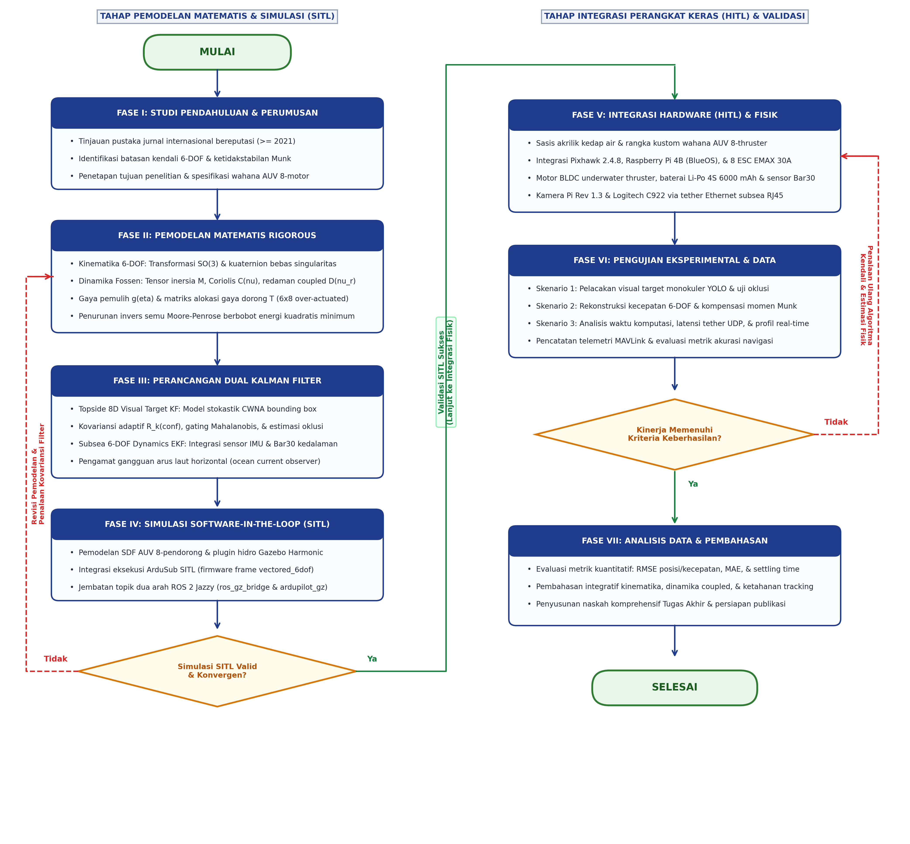
Gambar 3.1 Diagram alir tahapan penelitian komprehensif
Penjelasan Rinci Setiap Tahapan Diagram Alir:
- Fase I (Studi Pendahuluan dan Perumusan Masalah): Mengidentifikasi keterbatasan mendasar pada wahana konvensional underactuated 6-pendorong, khususnya fenomena kopling silang momen Munk hidrodinamika yang mendestabilisasi gerak yaw dan ketidakmampuan manuver pitch-hold aktif [7], [6], [32], [40], [34]. Studi literatur dipusatkan pada publikasi mutakhir ($$\ge 2021$$) di bidang estimasi parameter hidrodinamika [1], penapis Bayesian [25], dan kendali wahana over-actuated [21], [32].
- Fase II (Pemodelan Matematis Rigorous): Menurunkan model analitis lengkap gerak wahana bawah air 6-DOF berdasarkan standar SNAME (1950) dan Fossen (2021) [7]. Formulasi meliputi transformasi rotasi $$SO(3)$$, perumusan kinematika kuaternion bebas gimbal lock, pemodelan tensor inersia total $$\mathbf{M}$$, tensor Coriolis $$\mathbf{C}(\boldsymbol{\nu})$$, tensor redaman non-linier $$\mathbf{D}(\boldsymbol{\nu}r)$$, gaya apung/berat hidrostatis $$\mathbf{g}(\boldsymbol{\eta})$$, serta matriks geometri alokasi pendorong $$\mathbf{T}$$ menggunakan invers semu Moore-Penrose [21], [32].
- Fase III (Perancangan Arsitektur Dual Kalman Filter): Merancang dua modul penapis optimal yang bekerja secara komplementer:
- Topside/Onboard Visual Target Kalman Filter (AUVVisualKalmanFilter): Penapis linier diskrit 8-dimensi berbasis model percepatan derau putih kontinu (Continuous White Noise Acceleration / CWNA) dengan kovariansi adaptif berbobot skor konfidensi YOLO $$\mathbf{R}_k(\text{conf})$$, validasi jarak inovasi Mahalanobis $$\chi^2(4)$$, dan mekanisme propagasi dead-reckoning saat terjadi oklusi visual [16], [17], [25].
- Subsea Hydrodynamic Dynamics Extended Kalman Filter (AUVDynamicsKalmanFilter): Penapis non-linier 6-DOF yang menggabungkan pembacaan sensor inersia Pixhawk dan sensor tekanan kedalaman dengan model kinetika Fossen, dilengkapi pengamat gangguan arus laut (ocean current disturbance observer) [7], [18], [29].
- Fase IV (Simulasi Software-In-The-Loop / SITL): Membangun lingkungan simulasi virtual presisi tinggi memanfaatkan simulator Gazebo Harmonic (
gz-sim 8.14) dan Robot Operating System (ROS 2 Jazzy Jalisco) [14], [31]. Wahana AUV 8-pendorong dimodelkan dalam format Simulation Description Format (SDF) lengkap dengan plugin hidrodinamika dan daya apung. Sistem kendali dieksekusi melalui ArduSub SITL dengan model kerangka vectored_6dof yang berkomunikasi dua arah via protokol JSON/UDP [21].
- Evaluasi Validasi SITL dan Konvergensi Filter (Decision Gateway 1): Merupakan gerbang pengujian pertama untuk memastikan bahwa model numerik dan penapis Kalman stabil sebelum diaplikasikan ke perangkat keras. Kriteria evaluasi mencakup kekonvergenan kovariansi galat $$\mathbf{P}_k$$, tidak adanya osilasi divergen pada alokasi gaya dorong, dan respon dinamika yang konsisten pada resolusi step size waktu nyata ($$\Delta t = 1\text{ ms}$$). Apabila kriteria tidak terpenuhi (Tidak), sistem memasuki feedback loop untuk merevisi parameter pemodelan fisik (Fase II) serta menala ulang kovariansi derau proses $$\mathbf{Q}$$ dan derau pengukuran $$\mathbf{R}$$ (Fase III). Jika simulasi valid dan konvergen (Ya), penelitian berlanjut ke integrasi fisik.
- Fase V (Integrasi Hardware-In-The-Loop / HITL dan Fabrikasi Fisik): Mengintegrasikan perangkat keras fisik wahana ke dalam lingkungan komputasi permukaan melalui kabel tether Ethernet subsea [2], [14]. Komponen fisik mencakup sasis akrilik kedap air (custom pressure hull), flight controller Pixhawk 2.4.8 (menjalankan ArduSub), companion computer Raspberry Pi 4B (menjalankan BlueOS), 8 unit ESC EMAX BLHeli 30A, 8 motor BLDC underwater thruster, baterai Li-Po 4S 6000 mAh, sensor tekanan digital Bar30 MS5837, serta kamera Raspberry Pi Rev 1.3 dan Logitech C922. Stasiun permukaan memproses deteksi objek YOLO dan mengeksekusi penapis visual 8D, lalu mengirimkan setpoint kendali visual servoing kembali ke wahana melalui MAVLink.
- Fase VI (Pengujian Eksperimental, Validasi, dan Akuisisi Data): Menjalankan serangkaian eksperimen terukur untuk mengevaluasi akurasi pelacakan visual target monokuler, kemampuan penapisan derau frekuensi tinggi, ketahanan terhadap oklusi target temporer, akurasi rekonstruksi kecepatan bodi 6-DOF, mitigasi momen Munk, serta latensi komputasi waktu nyata (real-time execution profiling).
- Evaluasi Kinerja Eksperimental (Decision Gateway 2): Merupakan gerbang keputusan kedua terhadap data hasil uji eksperimental fisik. Kriteria keberhasilan dinilai berdasarkan: (a) Root Mean Square Error (RMSE) pelacakan posisi dan estimasi kecepatan yang rendah, (b) kestabilan orientasi wahana (minim osilasi pada pitch dan yaw akibat kopling momen Munk), serta (c) throughput pemrosesan visual mencapai batas waktu nyata ($$\ge 30\text{ FPS}$$ dengan latensi $$\le 40\text{ ms}$$). Apabila kriteria tidak terpenuhi (Tidak), sistem memasuki feedback loop untuk melakukan penalaan ulang pada algoritma kendali MAVLink dan estimator fisik (kembali ke Fase V dan Fase III). Jika seluruh target kinerja tercapai (Ya), penelitian berlanjut ke analisis akhir.
- Fase VII (Analisis Data Komprehensif, Pembahasan, dan Kesimpulan): Melakukan analisis kuantitatif mendalam terhadap seluruh metrik evaluasi eksperimen (RMSE, MAE, TSR, settling time), mensintesis interaksi antara pemodelan dinamika 6-DOF dan estimasi keadaan penapis Kalman, menyusun simpulan terpadu, serta merumuskan laporan akhir naskah proposal/skripsi dan manuskrip publikasi ilmiah.
3.3 Identifikasi Parameter Fisik dan Hidrodinamika Wahana
Keberhasilan perancangan penapis Kalman dinamika (AUVDynamicsKalmanFilter) dan alokasi gaya dorong over-actuated bergantung mutlak pada akurasi parameter fisik dan koefisien hidrodinamika wahana. Sub-bab ini merangkum identifikasi numerik dari parameter benda tegar (rigid-body), massa tambah hidrodinamika (added mass), redaman fluida (hydrodynamic damping), gaya pemulih hidrostatis (restoring forces), serta geometri alokasi pendorong 8-motor BlueROV2 Heavy [1], [3], [7], [34].
3.3.1 Parameter Fisik dan Properti Benda Tegar (Rigid-Body Properties)
Wahana yang digunakan adalah konfigurasi retrofit BlueROV2 Heavy berbahan dasar tabung akrilik tahan tekanan tinggi dengan rangka struktural High-Density Polyethylene (HDPE) [3]. Parameter massa total, dimensi fisik, dan posisi pusat massa/apung ditabulasikan pada Tabel 3.1.
Tabel 3.1 Parameter Fisik dan Properti Benda Tegar Wahana Over-Actuated 8-Pendorong
| Parameter Fisis | Simbol Matematis | Nilai Numerik | Satuan SI | Sumber / Metode Penentuan |
|---|---|---|---|---|
| Massa Total Wahana | $$m$$ | $$13.00$$ | $$\text{kg}$$ | Pengukuran timbangan digital presisi [3] |
| Panjang Total (Length) | $$L$$ | $$0.457$$ | $$\text{m}$$ | Pengukuran fisik geometri kerangka |
| Lebar Total (Beam/Width) | $$W$$ | $$0.338$$ | $$\text{m}$$ | Pengukuran fisik geometri kerangka |
| Tinggi Total (Height) | $$H$$ | $$0.254$$ | $$\text{m}$$ | Pengukuran fisik geometri kerangka |
| Volume Benaman Total | $$\nabla$$ | $$0.0132$$ | $$\text{m}^3$$ | Analisis model CAD 3D & hukum Archimedes |
| Posisi Pusat Apung (CB) | $$\mathbf{r}b = [x_b, y_b, z_b]^T$$ | $$[0.00, 0.00, 0.00]^T$$ | $$\text{m}$$ | Ditetapkan sebagai titik asal bodi ($$O_b$$) [7] |
| Posisi Pusat Gravitasi (CG) | $$\mathbf{r}_g = [x_g, y_g, z_g]^T$$ | $$[0.00, 0.00, 0.02]^T$$ | $$\text{m}$$ | Analisis distribusi massa ballast bawah [3], [31] |
| Momen Inersia Roll Benda Tegar | $$I$$ | $$0.160$$ | $$\text{kg}\cdot\text{m}^2$$ | Analisis CAD & estimasi semi-empiris [31] |
| Momen Inersia Pitch Benda Tegar | $$I_{yy}$$ | $$0.240$$ | $$\text{kg}\cdot\text{m}^2$$ | Analisis CAD & estimasi semi-empiris [31] |
| Momen Inersia Yaw Benda Tegar | $$I_{zz}$$ | $$0.280$$ | $$\text{kg}\cdot\text{m}^2$$ | Analisis CAD & estimasi semi-empiris [31] |
| Densitas Air Tawar Uji | $$\rho_{\text{fresh}}$$ | $$1000.0$$ | $$\text{kg/m}^3$$ | Standar kondisi fluida laboratorium |
| Densitas Air Laut Nominal | $$\rho_{\text{salt}}$$ | $$1025.0$$ | $$\text{kg/m}^3$$ | Standar oseanografi subsea DNV (2021) [5] |
| Percepatan Gravitasi Lokal | $$g$$ | $$9.80665$$ | $$\text{m/s}^2$$ | Standar gravitasi bumi internasional |
Berdasarkan nilai pada Tabel 3.1, gaya berat total wahana dihitung melalui persamaan:
$$W = m g = 13.00 \times 9.80665 = 127.486\text{ N}$$
Gaya apung total (buoyancy force) pada air tawar dan air laut adalah:
$$B_{\text{fresh}} = \rho_{\text{fresh}} g \nabla = 1000.0 \times 9.80665 \times 0.0132 = 129.448\text{ N}$$
$$B_{\text{salt}} = \rho_{\text{salt}} g \nabla = 1025.0 \times 9.80665 \times 0.0132 = 132.684\text{ N}$$
Selisih gaya hidrostatis neto ($$B - W$$) menghasilkan daya apung positif (positive buoyancy) yang terukur sebesar $$+1.962\text{ N}$$ (pada air tawar) dan $$+5.198\text{ N}$$ (pada air laut). Karakteristik positive buoyancy ini merupakan persyaratan keselamatan esensial pada robotika bawah air (fail-safe design), sehingga wahana akan mengapung secara pasif ke permukaan apabila terjadi kegagalan daya baterai total [3], [7].
Karena pusat massa ($$z_g = +0.02\text{ m}$$) terletak di bawah pusat apung ($$z_b = 0.00\text{ m}$$), jarak metasentrik vertikal bernilai positif ($$\overline{BG} = z_g - z_b = +0.02\text{ m}$$), yang memberikan stabilitas statis pasif inheren pada sumbu Roll ($$\phi$$) dan Pitch ($$\theta$$) [7].
Matriks inersia benda tegar $$\mathbf{M}{RB} \in \mathbb{R}^{6 \times 6}$$ dihitung menggunakan formulasi Fossen:
$$\mathbf{M} = \begin{bmatrix} m\mathbf{I}_{3 \times 3} & -m\mathbf{S}(\mathbf{r}_g) \ m\mathbf{S}(\mathbf{r}_g) & \mathbf{I}_b \end{bmatrix} = \begin{bmatrix} 13.00 & 0 & 0 & 0 & 0.26 & 0 \ 0 & 13.00 & 0 & -0.26 & 0 & 0 \ 0 & 0 & 13.00 & 0 & 0 & 0 \ 0 & -0.26 & 0 & 0.1652 & 0 & 0 \ 0.26 & 0 & 0 & 0 & 0.2452 & 0 \ 0 & 0 & 0 & 0 & 0 & 0.2800 \end{bmatrix}$$
3.3.2 Estimasi Derivatif Massa Tambah Hidrodinamika (Hydrodynamic Added Mass)
Massa tambah hidrodinamika timbul akibat percepatan massa fluida di sekitar lambung wahana ketika wahana bergerak [1], [7], [34]. Mengingat wahana beroperasi pada kecepatan jelajah moderat dan memiliki bidang simetri ganda (bidang port-starboard dan fore-aft mendekati simetris), suku-suku kopling silang di luar diagonal bernilai sangat kecil dibandingkan suku diagonal utamanya [31], [34]. Derivatif massa tambah hidrodinamika ditentukan berdasarkan hasil identifikasi eksperimental PMM dan analisis komputasi fluida (CFD) yang telah divalidasi oleh pengujian eksperimental Planar Motion Mechanism (PMM) dan survei literatur wahana kelas BlueROV2 [1], [4], [7], [12], [26], [28], [31], [34], [37]:
$$\mathbf{M}A = -\text{diag}\left( X}, Y_{\dot{v}}, Z_{\dot{w}}, K_{\dot{p}}, M_{\dot{q}}, N_{\dot{r}} \right)$$
Nilai numerik massa tambah hidrodinamika dirangkum pada Tabel 3.2.
Tabel 3.2 Koefisien Derivatif Massa Tambah Hidrodinamika Wahana
| Derajat Kebebasan (DOF) | Koefisien Notasi SNAME | Nilai Numerik | Satuan SI | Interpretasi Fisis Fluida |
|---|---|---|---|---|
| Massa Tambah Surge | $$X_{\dot{u}}$$ | $$-5.50$$ | $$\text{kg}$$ | Fluida terakselerasi penampang frontal ramping |
| Massa Tambah Sway | $$Y_{\dot{v}}$$ | $$-12.70$$ | $$\text{kg}$$ | Fluida terakselerasi penampang samping tabung ganda |
| Massa Tambah Heave | $$Z_{\dot{w}}$$ | $$-14.60$$ | $$\text{kg}$$ | Fluida terakselerasi penampang datar atas/bawah |
| Momen Tambah Roll | $$K_{\dot{p}}$$ | $$-0.12$$ | $$\text{kg}\cdot\text{m}^2$$ | Kelembaman rotasi fluida mengelilingi sumbu longitudinal |
| Momen Tambah Pitch | $$M_{\dot{q}}$$ | $$-0.25$$ | $$\text{kg}\cdot\text{m}^2$$ | Kelembaman rotasi fluida mengelilingi sumbu transversal |
| Momen Tambah Yaw | $$N_{\dot{r}}$$ | $$-0.27$$ | $$\text{kg}\cdot\text{m}^2$$ | Kelembaman rotasi fluida mengelilingi sumbu vertikal |
Dari Tabel 3.2, tampak bukti kuantitatif asimetri massa tambah transversal dan longitudinal:
$$|Y_{\dot{v}}| = 12.70\text{ kg} > |X_{\dot{u}}| = 5.50\text{ kg}$$
Selisih koefisien ini menghasilkan parameter momen Munk hidrodinamika yang sangat signifikan [7], [34]:
$$X_{\dot{u}} - Y_{\dot{v}} = -5.50 - (-12.70) = +7.20\text{ kg} > 0$$
Nilai positif $$+7.20\text{ kg}$$ ini secara analitis membuktikan bahwa setiap gangguan arus samping atau kecepatan gerak sway ($$v_r > 0$$) saat wahana melaju ke depan ($$u_r > 0$$) akan menghasilkan momen putar yaw destabilisasi sebesar:
$$N_{\text{Munk}} = +7.20 \, u_r v_r \quad (\text{N}\cdot\text{m})$$
yang harus diredam secara aktif oleh sistem kendali alokasi pendorong 8-motor [21], [32].
Matriks massa total wahana $$\mathbf{M} = \mathbf{M}_{RB} + \mathbf{M}_A$$ adalah:
$$\mathbf{M} = \begin{bmatrix} 18.50 & 0 & 0 & 0 & 0.26 & 0 \ 0 & 25.70 & 0 & -0.26 & 0 & 0 \ 0 & 0 & 27.60 & 0 & 0 & 0 \ 0 & -0.26 & 0 & 0.2852 & 0 & 0 \ 0.26 & 0 & 0 & 0 & 0.4952 & 0 \ 0 & 0 & 0 & 0 & 0 & 0.5500 \end{bmatrix}$$
3.3.3 Matriks Koefisien Redaman Hidrodinamika Fluida
Gaya hambat hidrodinamika fluida dimodelkan sebagai superposisi antara redaman gesek linier Navier-Stokes ($$\mathbf{D}_L$$) untuk aliran laminer kecepatan rendah dan redaman bentuk kuadratik non-linier (quadratic form drag $$\mathbf{D}_{NL}$$) akibat pusaran turbulen (vortex shedding) di sekitar struktur kerangka terbuka [7], [31], [34]:
$$\mathbf{D}(\boldsymbol{\nu}r) = \mathbf{D}_L + \mathbf{D}(\boldsymbol{\nu}_r)$$
di mana matriks linier dan matriks kuadratik diagonal didefinisikan sebagai:
$$\mathbf{D}L = -\text{diag}\left( X_u, Y_v, Z_w, K_p, M_q, N_r \right)$$
$$\mathbf{D}(\boldsymbol{\nu}r) = -\text{diag}\left( X|u_r|, Y_{v|v|}|v_r|, Z_{w|w|}|w_r|, K_{p|p|}|p|, M_{q|q|}|q|, N_{r|r|}|r| \right)$$
Nilai-nilai koefisien redaman yang digunakan dalam penelitian ini disajikan pada Tabel 3.3 [31], [34].
Tabel 3.3 Koefisien Redaman Hidrodinamika Linier dan Kuadratik Wahana
| Sumbu Gerak | Koefisien Linier | Nilai ($$\text{SI}$$) | Koefisien Kuadratik | Nilai ($$\text{SI}$$) |
|---|---|---|---|---|
| Surge ($$u$$) | $$X_u$$ | $$-4.03\text{ N}\cdot\text{s/m}$$ | $$X_{u|u|}$$ | $$-18.18\text{ N}\cdot\text{s}^2/\text{m}^2$$ |
| Sway ($$v$$) | $$Y_v$$ | $$-6.22\text{ N}\cdot\text{s/m}$$ | $$Y_{v|v|}$$ | $$-21.66\text{ N}\cdot\text{s}^2/\text{m}^2$$ |
| Heave ($$w$$) | $$Z_w$$ | $$-5.18\text{ N}\cdot\text{s/m}$$ | $$Z_{w|w|}$$ | $$-36.99\text{ N}\cdot\text{s}^2/\text{m}^2$$ |
| Roll ($$p$$) | $$K_p$$ | $$-0.07\text{ N}\cdot\text{m}\cdot\text{s/rad}$$ | $$K_{p|p|}$$ | $$-1.55\text{ N}\cdot\text{m}\cdot\text{s}^2/\text{rad}^2$$ |
| Pitch ($$q$$) | $$M_q$$ | $$-0.07\text{ N}\cdot\text{m}\cdot\text{s/rad}$$ | $$M_{q|q|}$$ | $$-1.55\text{ N}\cdot\text{m}\cdot\text{s}^2/\text{rad}^2$$ |
| Yaw ($$r$$) | $$N_r$$ | $$-0.07\text{ N}\cdot\text{m}\cdot\text{s/rad}$$ | $$N_{r|r|}$$ | $$-1.55\text{ N}\cdot\text{m}\cdot\text{s}^2/\text{rad}^2$$ |
3.3.4 Konfigurasi Geometri dan Matriks Alokasi Pendorong 8-Motor ($$\mathbf{T}_{6 \times 8}$$)
Konfigurasi pendorong pada BlueROV2 Heavy terdiri dari delapan motor pendorong BLDC bawah air [3], [21]:
1. Pendorong Horizontal 1–4: Dipasang pada bidang horizontal ($$xy$$) dengan sudut kemiringan $$\pm 45^\circ$$ ($$\pi/4\text{ rad}$$) terhadap sumbu longitudinal. Konfigurasi vektor ini menghasilkan gaya dorong terkopling pada sumbu Surge, Sway, dan torsi Yaw.
2. Pendorong Vertikal 5–8: Dipasang tegak lurus searah sumbu $$z$$ pada empat sudut terluar kerangka. Konfigurasi ini menghasilkan gaya dorong murni pada sumbu Heave, serta torsi diferensial pada sumbu Roll dan Pitch.
Koordinat posisi pendorong $$\mathbf{r}_i = [x_i, y_i, z_i]^T$$ relatif terhadap titik asal bodi ($$O_b$$) dan vektor arah dorong satuan $$\mathbf{d}_i$$ ditabulasikan pada Tabel 3.4.
Tabel 3.4 Posisi Spasial dan Vektor Satuan Gaya Dorong 8-Pendorong Bervektor
| No. Pendorong | Posisi $$x_i\text{ (m)}$$ | Posisi $$y_i\text{ (m)}$$ | Posisi $$z_i\text{ (m)}$$ | Vektor Arah Gaya Dorong $$\mathbf{d}_i$$ | Aksi Sumbu Utama |
|---|---|---|---|---|---|
| Pendorong 1 (Depan-Kanan) | $$+0.156$$ | $$+0.111$$ | $$0.000$$ | $$[\cos 45^\circ, -\sin 45^\circ, 0]^T$$ | Surge (+), Sway (-), Yaw (-) |
| Pendorong 2 (Depan-Kiri) | $$+0.156$$ | $$-0.111$$ | $$0.000$$ | $$[\cos 45^\circ, \sin 45^\circ, 0]^T$$ | Surge (+), Sway (+), Yaw (+) |
| Pendorong 3 (Belakang-Kanan) | $$-0.156$$ | $$+0.111$$ | $$0.000$$ | $$[-\cos 45^\circ, -\sin 45^\circ, 0]^T$$ | Surge (-), Sway (-), Yaw (+) |
| Pendorong 4 (Belakang-Kiri) | $$-0.156$$ | $$-0.111$$ | $$0.000$$ | $$[-\cos 45^\circ, \sin 45^\circ, 0]^T$$ | Surge (-), Sway (+), Yaw (-) |
| Pendorong 5 (Vertikal Depan-Kanan) | $$+0.120$$ | $$+0.218$$ | $$-0.075$$ | $$[0, 0, 1]^T$$ | Heave (+), Roll (-), Pitch (+) |
| Pendorong 6 (Vertikal Depan-Kiri) | $$+0.120$$ | $$-0.218$$ | $$-0.075$$ | $$[0, 0, 1]^T$$ | Heave (+), Roll (+), Pitch (+) |
| Pendorong 7 (Vertikal Belakang-Kanan)| $$-0.120$$ | $$+0.218$$ | $$-0.075$$ | $$[0, 0, 1]^T$$ | Heave (+), Roll (-), Pitch (-) |
| Pendorong 8 (Vertikal Belakang-Kiri) | $$-0.120$$ | $$-0.218$$ | $$-0.075$$ | $$[0, 0, 1]^T$$ | Heave (+), Roll (+), Pitch (-) |
Dengan konstanta arah horizontal $$c = \cos(45^\circ) = \sin(45^\circ) = \frac{\sqrt{2}}{2} \approx 0.7071$$, kolom ke-$$i$$ dari matriks konfigurasi pendorong $$\mathbf{T}_{6 \times 8}$$ dibentuk melalui hubungan momen gaya:
$$\mathbf{t}_i = \begin{bmatrix} \mathbf{d}_i \ \mathbf{r}_i \times \mathbf{d}_i \end{bmatrix} \in \mathbb{R}^6$$
Perhitungan perkalian silang lengan torsi menghasilkan matriks konfigurasi numerik eksak $$\mathbf{T}{6 \times 8} \in \mathbb{R}^{6 \times 8}$$:
$$\mathbf{T} = \begin{bmatrix} 0.7071 & 0.7071 & -0.7071 & -0.7071 & 0.0000 & 0.0000 & 0.0000 & 0.0000 \ -0.7071 & 0.7071 & -0.7071 & 0.7071 & 0.0000 & 0.0000 & 0.0000 & 0.0000 \ 0.0000 & 0.0000 & 0.0000 & 0.0000 & 1.0000 & 1.0000 & 1.0000 & 1.0000 \ 0.0000 & 0.0000 & 0.0000 & 0.0000 & 0.2180 & -0.2180 & 0.2180 & -0.2180 \ 0.0000 & 0.0000 & 0.0000 & 0.0000 & -0.1200 & -0.1200 & 0.1200 & 0.1200 \ -0.1888 & 0.1888 & 0.1888 & -0.1888 & 0.0000 & 0.0000 & 0.0000 & 0.0000 \end{bmatrix}$$
di mana baris ke-6 (sumbu Yaw) diperoleh dari:
$$\tau_{N,1} = x_1 d_{y,1} - y_1 d_{x,1} = (0.156)(-0.7071) - (0.111)(0.7071) = -0.1103 - 0.0785 = -0.1888\text{ m}$$
Karena jumlah aktuator ($$m = 8$$) melebihi jumlah derajat kebebasan gerak ($$n = 6$$), sistem ini bersifat over-actuated dengan derajat redundansi $$m - n = 2$$ [21], [32]. Solusi vektor gaya dorong individual pendorong $$\mathbf{f} = [f_1, f_2, \dots, f_8]^T \in \mathbb{R}^8$$ yang meminimalkan kriteria energi kuadratik total dihitung secara seketika (real-time) melalui operator invers semu Moore-Penrose:
$$\mathbf{f} = \mathbf{T}{6 \times 8}^\dagger \boldsymbol{\tau} = \mathbf{T}^T \left( \mathbf{T}{6 \times 8} \mathbf{T}^T \right)^{-1} \boldsymbol{\tau}$$
Setiap komponen gaya dorong $$f_i\text{ (N)}$$ kemudian dipetakan ke sinyal lebar pulsa servo aktuator PWM ($$1100 - 1900\text{ }\mu\text{s}$$) dengan zona mati (deadband) nominal $$1475 - 1525\text{ }\mu\text{s}$$ sesuai karakteristik elektro-hidrodinamika ESC motor pendorong BLDC bawah air [3]:
$$\text{PWM}i = \begin{cases} 1500 & \text{jika } |f_i| < f} \ 1525 + \left( \frac{f_i}{f_{\max}} \right) \times 375 & \text{jika } f_i \ge f_{\text{thresh}} \ 1475 + \left( \frac{f_i}{f_{\max}} \right) \times 375 & \text{jika } f_i \le -f_{\text{thresh}} \end{cases}$$
dengan batas gaya dorong maksimum $$f_{\max} = 35.0\text{ N}$$ pada tegangan suplai nominal $$16.0\text{ V}$$ [3].
3.4 Perancangan Arsitektur Software-In-The-Loop (SITL)
Arsitektur Software-In-The-Loop (SITL) dibangun untuk memvalidasi algoritma estimasi Dual Kalman Filter dan kinematika/dinamika 6-DOF secara komprehensif di lingkungan simulasi hidrodinamika virtual sebelum diimplementasikan pada perangkat keras fisik, sejalan dengan metodologi simulation-driven dan validasi digital twin yang dirumuskan oleh Karras dkk. (2024) serta Mari dkk. (2026) [14], [15], [19], [21], [31].
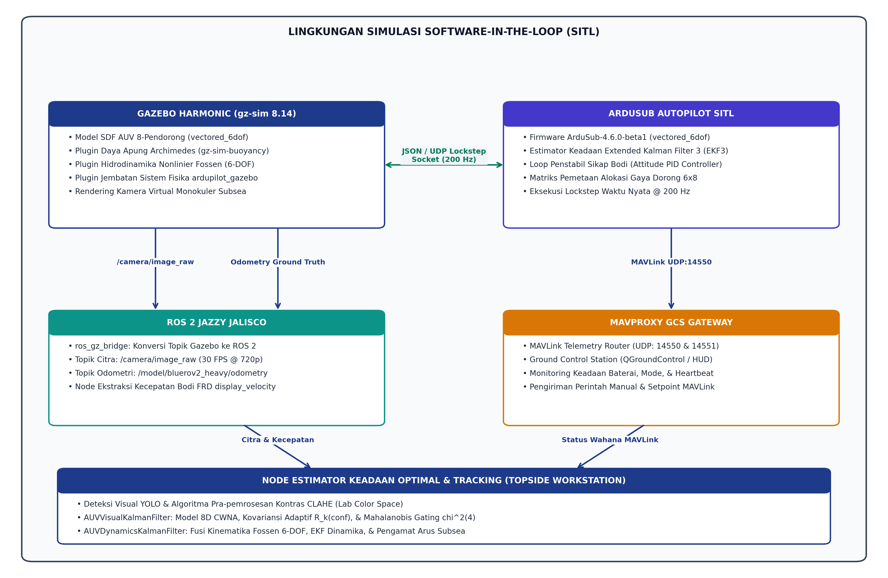
Gambar 3.2 Arsitektur simulasi software-in-the-loop (SITL) sistem AUV
3.4.1 Lingkungan Simulasi Gazebo Harmonic (gz-sim 8.14)
Simulasi fisik wahana dijalankan pada Gazebo Harmonic (gz-sim versi 8.14) di bawah sistem operasi Ubuntu 24.04.4 LTS (Noble Numbat) [31]. Wahana BlueROV2 Heavy direpresentasikan dalam berkas deskripsi robotik Simulation Description Format (SDF) yang mendefinisikan geometri visual, geometri tumbukan (collision mesh), properti inersia, serta plugin fisika fluida:
1. Plugin Daya Apung (gz-sim-buoyancy-system): Menghitung gaya angkat hidrostatis Archimedes secara terdistribusi berdasarkan volume elemen wahana yang tercelup fluida dan gradien tekanan kedalaman [31].
2. Plugin Hidrodinamika (gz-sim-hydrodynamics-system): Mengimplementasikan model persamaan gerak Fossen (2021) secara langsung di dalam inti mesin fisika (physics engine) Gazebo [7]. Parameter massa tambah ($$X_{\dot{u}}, Y_{\dot{v}}, Z_{\dot{w}}, K_{\dot{p}}, M_{\dot{q}}, N_{\dot{r}}$$) dan koefisien redaman hidrodinamika linier serta kuadratik ($$X_u, X_{u|u|}, Y_v, Y_{v|v|}, \dots$$) dimasukkan sesuai hasil identifikasi pada Sub-bab 3.3.
3. Plugin ardupilot_gazebo: Bertindak sebagai jembatan komunikasi antara model fisik Gazebo dan perangkat lunak autopilot ArduSub [21]. Plugin ini membaca kecepatan putar motor pendorong dari paket JSON ArduSub, menerapkannya sebagai vektor gaya dorong pada model wahana di Gazebo, membaca kembali data sensor virtual (IMU, barometer tekanan kedalaman), dan mengirimkannya kembali ke ArduSub dengan sinkronisasi waktu langkah (lockstep simulation) pada frekuensi $$200\text{ Hz}$$.
Dunia virtual bawah laut dimodelkan dalam berkas bluerov2_heavy_underwater.world, yang memuat media air tawar tenang dengan pencahayaan tereduksi, objek target visual geometris di dasar perairan, serta model gangguan arus laut horizontal konstan maupun dinamis.
3.4.2 Autopilot ArduSub SITL (vectored_6dof)
Perangkat lunak autopilot ArduSub (versi ArduSub-4.6.0-beta1) dikompilasi secara lokal dan dieksekusi menggunakan utilitas pembantu sim_vehicle.py:
python3 ~/auv_ws/firmware/ardupilot/Tools/autotest/sim_vehicle.py -v ArduSub -f vectored_6dof --model JSON -w --console --out udp:127.0.0.1:14550 --out udp:192.168.2.1:14550
Parameter -f vectored_6dof secara khusus mengonfigurasi ArduSub untuk menggunakan kerangka alokasi 8-pendorong dengan kendali aktif 6 derajat kebebasan penuh [21]. ArduSub SITL menjalankan estimator navigasi internal EKF3, loop kendali PID untuk penstabilan sudut orientasi (attitude controller), dan matriks alokasi pendorong untuk menghasilkan sinyal kendali motor pendorong.
3.4.3 Jembatan Komunikasi ROS 2 (ros_gz_bridge)
Untuk memfasilitasi pertukaran data antara simulator Gazebo Harmonic dan ekosistem komputasi robotika, diimplementasikan jembatan komunikasi ros_gz_bridge pada distribusi ROS 2 Jazzy Jalisco [14]:
1. Topik data odometri wahana /model/bluerov2_heavy/odometry dijembatani menjadi pesan ROS 2 nav_msgs/msg/Odometry untuk merekam koordinat posisi $$(x, y, z)$$, orientasi kuaternion, dan kecepatan linier/sudut wahana sebagai nilai kebenaran dasar (ground truth).
2. Topik kamera virtual bawah air /camera/image_raw dijembatani menjadi pesan ROS 2 sensor_msgs/msg/Image dengan laju penyegaran $$30\text{ FPS}$$ pada resolusi $$1280 \times 720$$ piksel.
3. Node pembaca kecepatan display_velocity.py mengekstraksi kecepatan bodi relatif wahana secara real-time untuk memvalidasi estimasi kecepatan dari penapis dinamika EKF.
3.5 Perancangan Arsitektur Hardware-In-The-Loop (HITL)
Arsitektur Hardware-In-The-Loop (HITL) menggabungkan komponen perangkat keras fisik wahana (flight controller Pixhawk 2.4.8, companion computer Raspberry Pi 4B, modul kamera monokuler, dan sensor kedalaman Bar30 MS5837) dengan workstation permukaan berakselerasi GPU dalam sebuah loop kendali tertutup waktu nyata melalui jaringan tether Ethernet, mengadopsi prinsip arsitektur modular terdistribusi dan pemodelan dinamika kabel tether [2], [8], [9], [11], [14], [20], [30], [35], [36], [41].
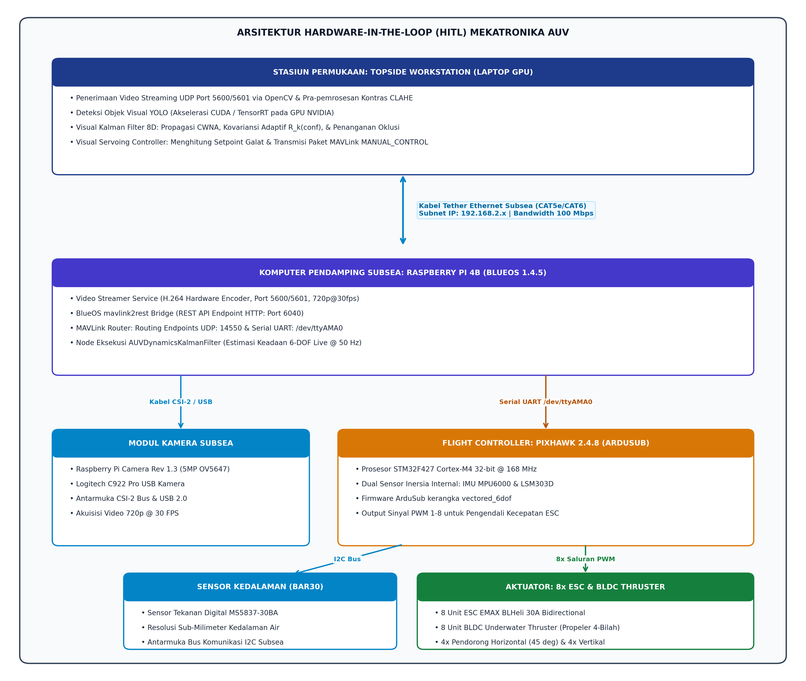
Gambar 3.3 Arsitektur integrasi hardware-in-the-loop (HITL) mekatronika AUV
3.5.1 Komponen Perangkat Keras dan Interkoneksi Fisik
Spesifikasi perangkat keras mekatronika yang diintegrasikan dalam arsitektur HITL dirangkum pada Tabel 3.5.
Tabel 3.5 Spesifikasi Komponen Perangkat Keras Arsitektur HITL
| Modul Sistem | Komponen Spesifik | Antarmuka / Protokol | Fungsi Utama dalam Sistem |
|---|---|---|---|
| Rangka & Lambung | Custom-made AUV Hull & Frame (Tabung Akrilik Silinder Kedap Air + Kerangka 8 Pendorong) | Mekanikal / Sealing O-Ring Ganda | Struktur fisik penahan tekanan hidrostatis dan dudukan geometris 8 pendorong bervektor |
| Flight Controller | Pixhawk 2.4.8 (STM32F427 Cortex-M4, 168 MHz) | UART Serial (/dev/ttyAMA0, 921600 baud) | Eksekusi ArduSub vectored_6dof, akuisisi IMU internal, loop kendali sikap, alokasi 8 pendorong [14] |
| Companion Computer | Raspberry Pi 4B (Quad-core Cortex-A72 @ 1.5 GHz, 4GB RAM) | Ethernet 10/100/1000 Mbps | Menjalankan sistem operasi BlueOS, kompresi video H.264, jembatan REST telemetri mavlink2rest |
| Sensor Kedalaman | Sensor Tekanan & Kedalaman Digital Subsea MS5837-30BA | I2C Bus (Alamat 0x76) | Pengukuran tekanan absolut fluida (0–30 bar) dan estimasi kedalaman dengan resolusi $$0.2\text{ mm}$$ |
| Modul Kamera Utama | Raspberry Pi Camera Rev 1.3 (OmniVision OV5647 5MP) | MIPI CSI-2 Ribbon Cable | Akuisisi citra visual bawah air monokuler $$1280 \times 720$$ piksel @ 30 FPS untuk pelacakan target |
| Kamera Sekunder | Logitech C922 Pro Stream Webcam | USB 2.0 (Protokol UVC / MJPG) | Kamera uji alternatif resolusi tinggi Full HD 1080p / 720p dengan lensa sudut lebar |
| Komputer Topside | Laptop dengan GPU NVIDIA (CUDA / TensorRT) | Tether Ethernet RJ45 | Pemrosesan visi YOLO pada GPU NVIDIA & penapis Topside Visual Kalman Filter 8D |
| Pengendali Kecepatan | 8x ESC EMAX BLHeli 30A (Bidirectional Firmware) | Sinyal PWM ($$1100 - 1900\text{ }\mu\text{s}$$) | Pengaturan komutasi dan kecepatan putar dua arah (maju-mundur) 8 motor pendorong BLDC |
| Sistem Penggerak | 8x BLDC Motor Underwater Thruster (12–24V, 4-Blade Propeller) | Kabel Fasa 3-Kawat ke ESC | Aktuasi gaya dorong 6-DOF over-actuated (gaya dorong nominal 3–5 kgf per motor, putaran CW/CCW) |
| Sistem Catu Daya | Baterai Li-Po 4S1P 14.8V kapasitas 6000 mAh (88.8 Wh) | Konektor Arus Tinggi XT90 / Power Module | Pencatu daya utama sistem propulsi pendorong dan modul elektronik internal wahana |
| Pengisi Daya Baterai | SKYRC IMAX B6AC V2 Cerdas Mikroprosesor | Dual Input AC/DC, Port JST-XH Balance | Pengisian daya dan penyeimbangan tegangan tiap sel baterai Li-Po secara presisi dan aman |
| Kabel Komunikasi | Kabel Tether Ethernet Subsea CAT5e/CAT6 | Antarmuka RJ45 (Bandwidth 100 Mbps) | Transmisi data aliran video H.264 dan komunikasi dua arah telemetri kendali MAVLink |
Untuk memberikan gambaran yang lebih konkret terkait perangkat yang digunakan, berikut adalah visualisasi perangkat keras utama yang dikonfigurasi pada wahana AUV ini:
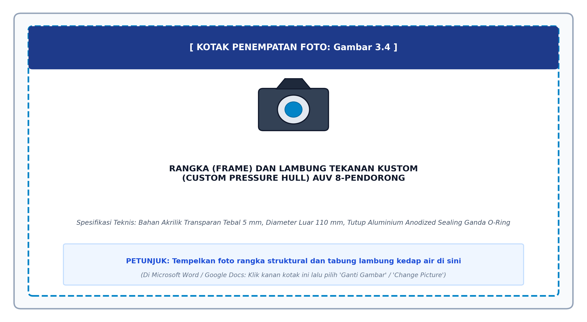
Gambar 3.4 Rangka (frame) dan lambung tekanan kustom (custom pressure hull) AUV 8-pendorong
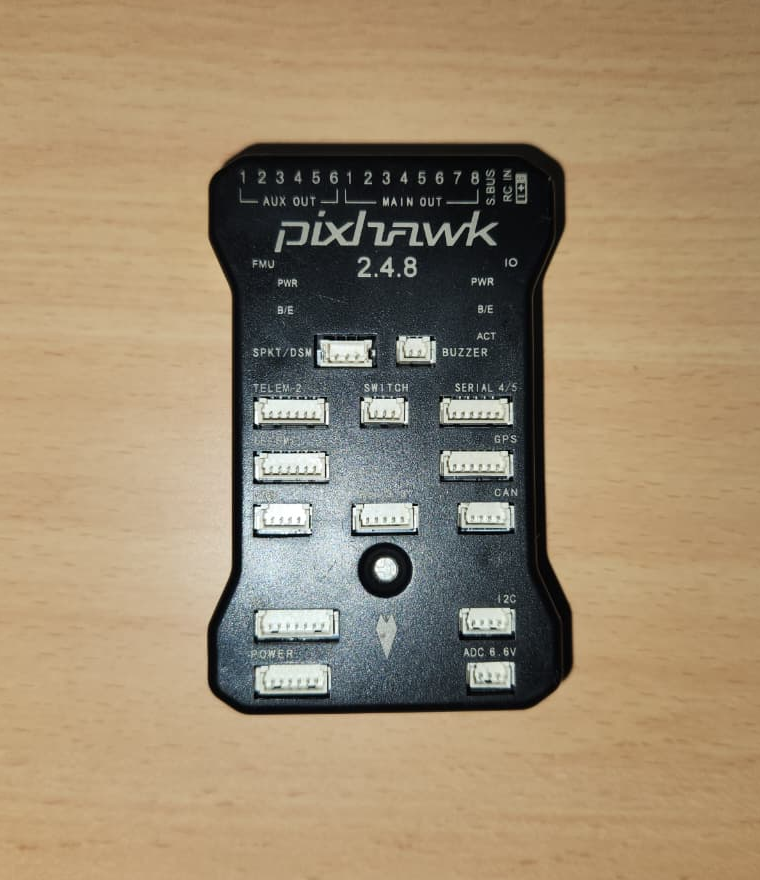
Gambar 3.5 Papan pengendali penerbangan (flight controller) Pixhawk 2.4.8
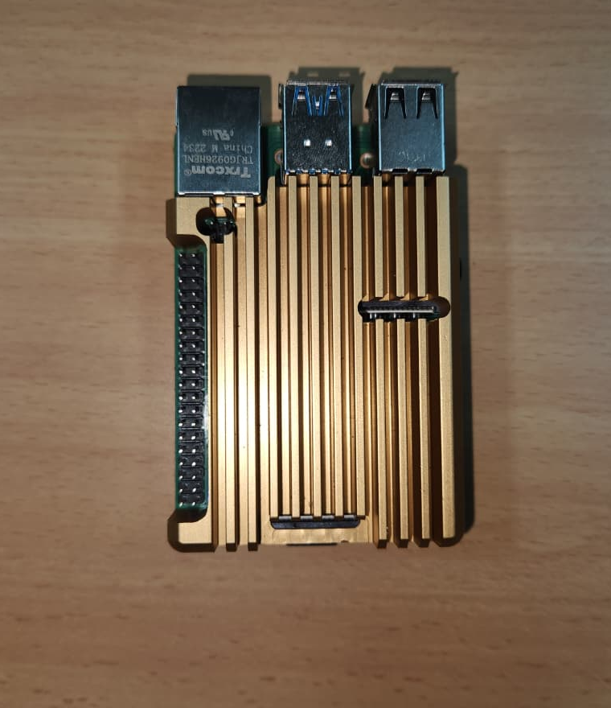
Gambar 3.6 Komputer pendamping (companion computer) Raspberry Pi 4B
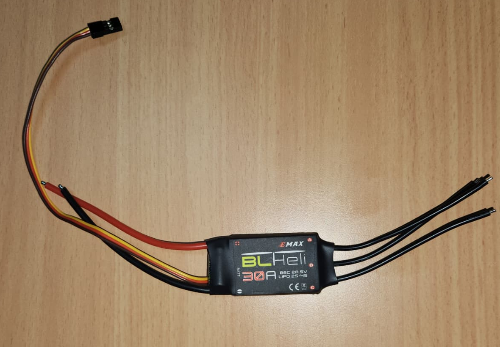
Gambar 3.7 Modul pengendali kecepatan elektronik (ESC EMAX BLHeli 30A)
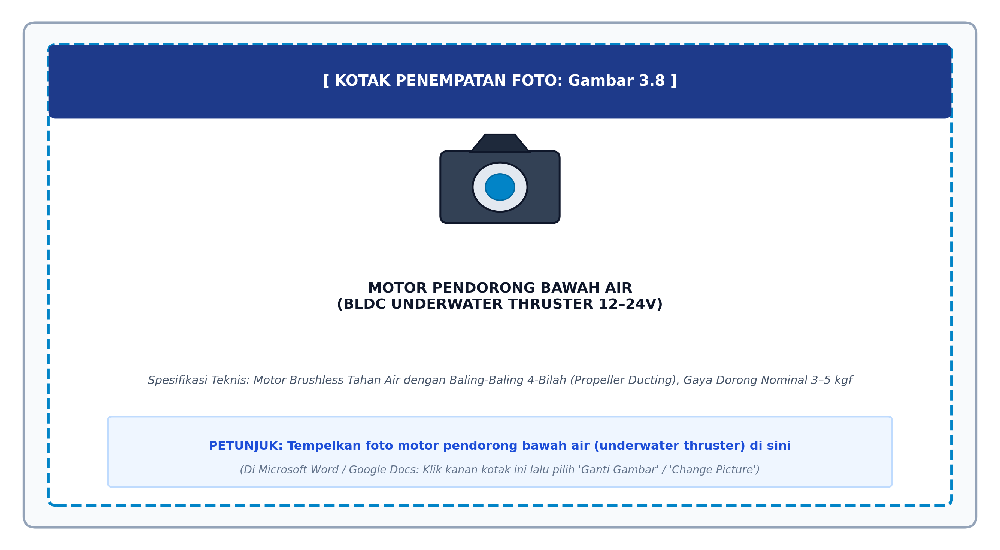
Gambar 3.8 Motor pendorong bawah air (BLDC underwater thruster)
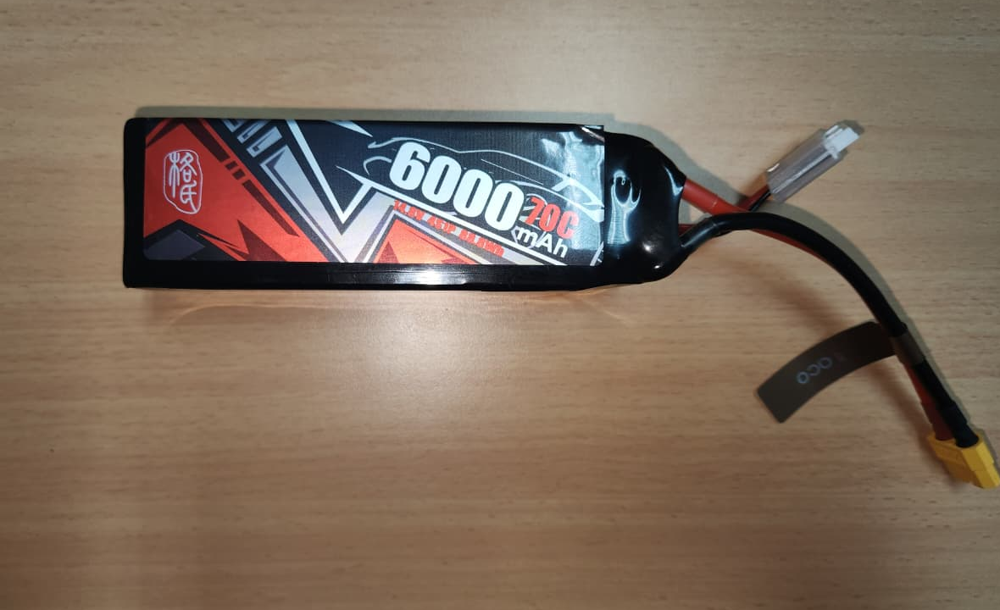
Gambar 3.9 Sumber daya utama baterai Li-Po 4S 14.8V 6000 mAh
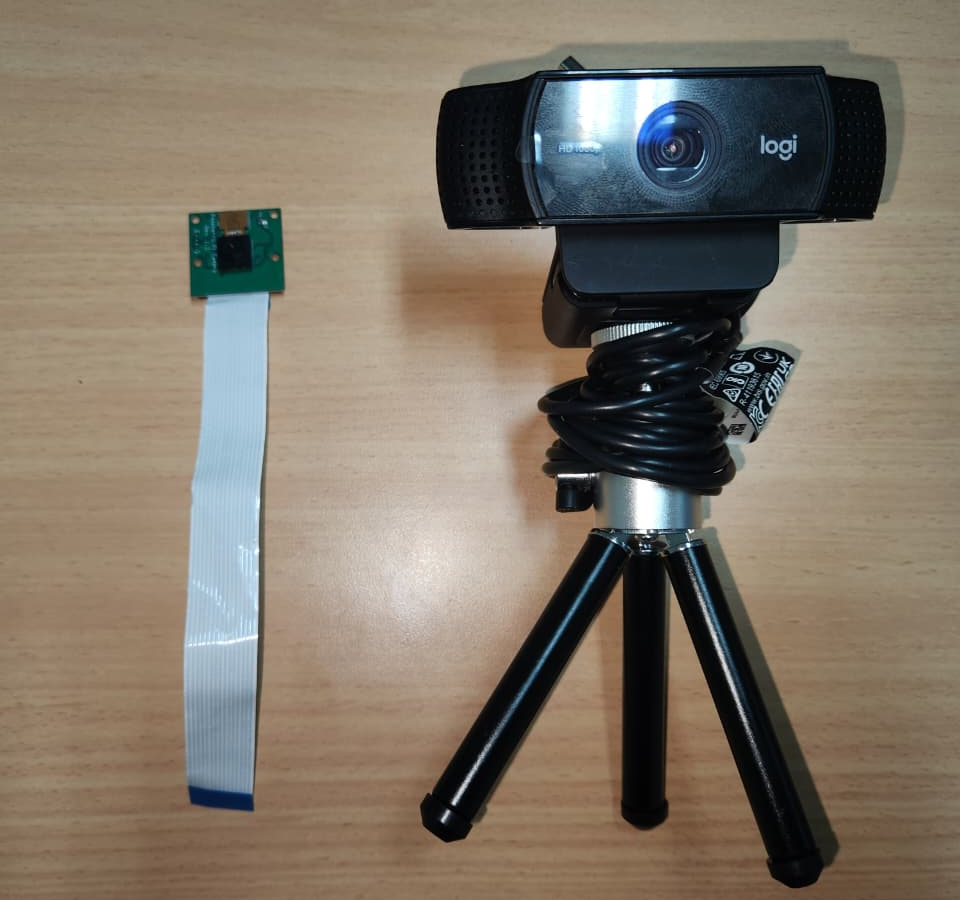
Gambar 3.10 Modul kamera sistem pelacakan visual: Raspberry Pi Camera Rev 1.3 (subsea, kiri) dan webcam Logitech C922 Pro (topside, kanan)
3.5.2 Aliran Data Telemetri Cepat (Low-Latency Telemetry Bridge)
Untuk mengalirkan data sensor dari wahana ke modul estimasi tanpa membebani bus komputasi serial MAVLink secara berlebihan, diimplementasikan jembatan telemetri asinkron berbasis REST API memanfaatkan layanan mavlink2rest yang terintegrasi pada BlueOS (port HTTP 6040):
1. Akuisisi Data IMU dan Tekanan
Modul Python SubseaTelemetryBridge pada berkas auv_dynamics_hil_node.py melakukan polling data JSON pada endpoint http://192.168.2.2:6040/mavlink/vehicles/1/components/1/messages dengan batas waktu (timeout) $$0.25\text{ detik}$$.
2. Pengekstrakkan Pesan MAVLink
Pesan SCALED_IMU2 atau RAW_IMU diekstraksi untuk memperoleh percepatan linier tiga sumbu ($$a_x, a_y, a_z$$) dan kecepatan sudut ($$p, q, r$$). Pesan ATTITUDE diekstraksi untuk memperoleh orientasi Euler ($$\phi, \theta, \psi$$). Pesan SCALED_PRESSURE2 diekstraksi untuk memperoleh tekanan absolut subsea ($$P_{\text{fluid}}$$). Pesan SERVO_OUTPUT_RAW diekstraksi untuk merekam sinyal PWM dari delapan pendorong secara simultan.
3. Kalibrasi Tekanan Atmosfer Otomatis
Saat node diinisialisasi di permukaan air, sistem secara otomatis mengambil sampel baseline tekanan atmosfer sebanyak 10 sampel untuk mengkalibrasi tekanan udara lokal ($$P_{\text{atm}}$$). Kedalaman subsea dihitung secara langsung menggunakan persamaan hidrostatik:
$$z_k = \frac{(P_{\text{fluid}} - P_{\text{atm}}) \times 100.0}{\rho g}$$
dengan konversi tekanan dari hektopaskal (hPa) ke Pascal ($$1\text{ hPa} = 100.0\text{ Pa}$$).
3.5.3 Pipeline Prapemrosesan Citra Visual dan Deteksi Objek YOLO
Citra video dialirkan dari kamera Raspberry Pi melalui pipeline GStreamer terakselerasi perangkat keras dengan kompresi H.264 ke port UDP 5600 (atau port 5601 untuk kamera USB) pada workstation topside [2]. Tahapan pemrosesan visi diuraikan sebagai berikut:
1. Prapemrosesan Peningkatan Kontras Adaptif (CLAHE)
Citra RGB yang diterima didegradasi oleh partikel air dikonversi ke ruang warna CIE LAB. Saluran kecerahan (Luminance channel $$L$$) ditingkatkan menggunakan operator CLAHE (Contrast Limited Adaptive Histogram Equalization) dengan parameter ambang klip (clip limit) $$2.5$$ dan ukuran kisi ubin (tile grid size) $$8 \times 8$$:
$$L_{\text{enhanced}} = \text{CLAHE}(L, \text{clipLimit}=2.5, \text{grid}=(8, 8))$$
Saluran $$L_{\text{enhanced}}$$ kemudian digabungkan kembali dengan saluran krominansi $$a$$ dan $$b$$, lalu dikonversi kembali ke ruang warna BGR. Algoritma ini secara drastis meningkatkan ketajaman tepi (edge sharpness) target bawah air dan menetralkan kabut warna hijau/biru tanpa memperkuat derau latar belakang [2].
2. Inferensi Deteksi Objek YOLO26 World
Citra yang telah ditingkatkan diumpankan ke arsitektur jaringan syaraf tiruan YOLO26 World (atau model kustom fine-tuned 11 kelas bawah air) pada resolusi spasial $$1024 \times 1024$$ piksel. Model dieksekusi dengan akselerasi perangkat keras GPU NVIDIA RTX 4070 Laptop (CUDA) menggunakan presisi floating point 16-bit (FP16). Keluaran deteksi berupa koordinat kotak pembatas (bounding box):
$$\mathbf{z}_k = [x_m, y_m, w_m, h_m]^T$$
beserta skor keyakinan deteksi (detection confidence score) $$\text{conf}_k \in [0, 1]$$.
3.5.4 Algoritma Implementasi Dual Kalman Filter
Sistem estimasi keadaan terdiri dari dua penapis Kalman yang beroperasi secara terpisah namun saling menyokong:
1. Topside Visual Target Kalman Filter (AUVVisualKalmanFilter)
Diimplementasikan pada workstation permukaan di dalam berkas kalman_filter.py untuk menapis getaran deteksi (jitter), mengatasi oklusi sesaat, dan mengestimasi laju perubahan skala objek:
- Vektor Keadaan 8D:
$$\mathbf{x}{\text{vis}} = [x, y, s, r, \dot{x}, \dot{y}, \dot{s}, \dot{r}]^T$$
di mana $$x, y$$ merepresentasikan koordinat titik pusat bounding box, $$s = w \times h$$ adalah luas area skala target, $$r = w / h$$ adalah rasio aspek, serta $$\dot{x}, \dot{y}, \dot{s}, \dot{r}$$ adalah laju perubahan temporalnya.
- Kovariansi Proses Stokastik CWNA:
Matriks kovariansi proses diskrit dievaluasi secara eksak melalui integrasi analitis model percepatan derau putih kontinu (Continuous White Noise Acceleration):
$$\mathbf{Q}(\Delta t) = \begin{bmatrix} \frac{\Delta t^3}{3} \tilde{\mathbf{Q}} & \frac{\Delta t^2}{2} \tilde{\mathbf{Q}} \ \frac{\Delta t^2}{2} \tilde{\mathbf{Q}} & \Delta t \tilde{\mathbf{Q}} \end{bmatrix}, \quad \tilde{\mathbf{Q}} = \text{diag}(q_x, q_y, q_s, q_r)$$
dengan nilai kerapatan spektral nominal $$q_x = q_y = 0.05$$, $$q_s = 0.08$$, dan $$q_r = 0.01$$.
- Kovariansi Pengukuran Adaptif Berbobot Konfidensi:
$$\mathbf{R}_k(\text{conf}) = \frac{\mathbf{R}_0}{\max(\text{conf}_k, 0.15)^2}$$
Formulasi ini memastikan bahwa saat deteksi YOLO memiliki konfidensi tinggi ($$\text{conf} \to 1.0$$), penapis mempercayai pengukuran sensor, sedangkan saat konfidensi rendah di air keruh ($$\text{conf} < 0.4$$), penapis lebih mengandalkan propagasi model internal.
- Validasi Inovasi Jarak Mahalanobis (Outlier Gating):
Sebelum pembaruan status dilakukan, residual inovasi $$\mathbf{y}_k = \mathbf{z}_k - \mathbf{H}\mathbf{x}_k^-$$ diuji terhadap kovariansi inovasi $$\mathbf{S}_k = \mathbf{H}\mathbf{P}_k^-\mathbf{H}^T + \mathbf{R}_k$$:
$$d_M^2 = \mathbf{y}_k^T \mathbf{S}_k^{-1} \mathbf{y}_k \le \gamma}$$
dengan ambang batas kritis distribusi Chi-Square derajat kebebasan 4 pada interval kepercayaan 95%:
$$\gamma_{\text{gate}} = \chi_{0.95}^2(4) = 9.488$$
Deteksi palsu yang melompat melebihi ambang batas ini secara otomatis ditolak (rejected) untuk mencegah deviasi lintasan.
- Mekanisme Penjembatan Oklusi (Occlusion Bridging):
Apabila target terhalang oleh partikel sedimen atau struktur selama $$N_{\text{missed}}$$ frame berturut-turut ($$N_{\text{missed}} \le 30$$ frame), penapis melewati tahap pembaruan pengukuran ($$\mathbf{K}k = \mathbf{0}$$) dan mengeksekusi propagasi dead-reckoning murni:
$$\hat{\mathbf{x}}_k = \mathbf{A}(\Delta t) \hat{\mathbf{x}}$$
$$\mathbf{P}k = \mathbf{A}(\Delta t) \mathbf{P} \mathbf{A}^T(\Delta t) + \mathbf{Q}(\Delta t)$$
sehingga posisi target tetap terlacak dengan mulus saat muncul kembali [25].
2. Subsea Hydrodynamic Dynamics EKF (AUVDynamicsKalmanFilter)
Dijalankan secara langsung pada frekuensi $$50\text{ Hz}$$ ($$\Delta t = 20\text{ ms}$$) pada companion computer Raspberry Pi 4B (atau laptop topside melalui jembatan telemetri) di dalam berkas auv_dynamics_hil_node.py [18], [29]:
- Vektor Keadaan Dinamika 9-Dimensi:
$$\mathbf{x}{\text{dyn}} = [u_r, v_r, w_r, p, q, r, u_c, v_c, w_c]^T$$
yang menggabungkan 6-DOF kecepatan bodi relatif wahana terhadap fluida dan 3-DOF komponen kecepatan arus laut lingkungan.
- Vektor Pengukuran Multi-Sensor:
$$\mathbf{z}} = [a_x, a_y, a_z, p_{\text{gyro}}, q_{\text{gyro}}, r_{\text{gyro}}, \dot{z}{\text{bar30}}]^T$$
yang diukur langsung dari akselerometer 3-sumbu, giroskop 3-sumbu Pixhawk, dan laju perubahan kedalaman sensor tekanan Bar30 MS5837.
- Linearisasi Analitis Matriks Transisi Kontinu $$\mathbf{F}$$:
Dievaluasi secara analitis dari persamaan dinamika Fossen 6-DOF:
$$\mathbf{F}(t) = \left. \frac{\partial \mathbf{f}(\mathbf{x}, \boldsymbol{\tau})}{\partial \mathbf{x}} \right|}} = \begin{bmatrix} -\mathbf{M}^{-1}\left( \mathbf{C}^(\hat{\boldsymbol{\nu}}_r) + \mathbf{D}^(\hat{\boldsymbol{\nu}}r) \right) & \mathbf{0} \\ \mathbf{0}{3 \times 6} & \mathbf{0} \end{bmatrix}$$
di mana Jacobian redaman non-linier dievaluasi secara eksak:
$$\mathbf{D}^(\hat{\boldsymbol{\nu}}r) = \text{diag}\left( -(X_u + 2 X|\hat{u}r|), -(Y_v + 2 Y|\hat{v}_r|), \dots \right)$$
dan suku kopling silang momen Munk terefleksikan pada baris ke-6 matriks $$\mathbf{C}^(\hat{\boldsymbol{\nu}}r)$$ [7], [34].
- Diskritisasi Matriks Fundamental Transisi:
$$\boldsymbol{\Phi} \approx \mathbf{I} + \mathbf{F} \Delta t$$
memastikan perambatan kovariansi kesalahan estimasi $$\mathbf{P}k^- = \boldsymbol{\Phi}\mathbf{P}\boldsymbol{\Phi}^T + \mathbf{Q}_{\text{dyn}}$$ berjalan sangat cepat tanpa beban faktorisasi matriks eksponensial yang berat pada prosesor embedded ARM Cortex-A72 Raspberry Pi.
3.6 Prosedur Pengujian dan Evaluasi Kinerja
Untuk membuktikan hipotesis penelitian dan memvalidasi keunggulan arsitektur mekatronika yang diajukan, dirancang tiga skenario pengujian eksperimental terstruktur yang mencakup ranah simulasi presisi tinggi (SITL) dan validasi perangkat keras riil (HITL).
3.6.1 Skenario 1: Evaluasi Pelacakan Visual Target Dinamis dan Ketahanan terhadap Oklusi
Skenario ini bertujuan menguji akurasi pelacakan visual penapis AUVVisualKalmanFilter dalam meredam derau deteksi YOLO dan mempertahankan penjejakan target saat terjadi kehilangan deteksi visual sementara [2], [14], [25].
- Prosedur Pengujian:
1. Wahana AUV diposisikan mengapung di depan target visual referensi (misalnya pelampung bawah air underwater buoy atau penanda berstruktur) pada jarak observasi nominal $$1.5 - 3.0\text{ meter}$$.
2. Target visual digerakkan secara dinamis mengikuti trajektori spasial acak pada bidang pandang kamera ($$xy$$) dan variasi jarak maju-mundur (perubahan skala area $$s$$).
3. Injeksi Derau Pengukuran Sintetis: Untuk menguji ketahanan filter terhadap turbiditas dan fluktuasi pencahayaan, sinyal deteksi kotak pembatas YOLO diinjeksikan derau acak Gaussian dengan variansi spasial terkontrol:
$$\mathbf{z}{\text{noisy}, k} = \mathbf{z}_k + \mathcal{N}(\mathbf{0}, \sigma}^2 \mathbf{I}4)$$
dengan variansi derau $$\sigma} \in [5, 25]\text{ piksel}$$.
4. Simulasi Oklusi Visual Temporer: Selama interval waktu pelacakan detik ke-$$10$$ hingga detik ke-$$11.5$$ (sebanyak $$45$$ frame beruntun), aliran bounding box dari YOLO dihentikan secara artifisial ($$\text{conf}_k = 0$$) untuk merepresentasikan kondisi target terhalang total oleh awan gelembung atau partikel sedimen pekat.
5. Sinyal trajektori hasil penapisan Kalman dibandingkan secara kuantitatif terhadap sinyal koordinat deteksi mentah (raw YOLO detection) dan posisi kebenaran dasar (ground truth).
3.6.2 Skenario 2: Rekonstruksi Kecepatan Bodi 6-DOF dan Mitigasi Momen Munk
Skenario ini dirancang untuk memvalidasi performa penapis non-linier AUVDynamicsKalmanFilter dalam mengestimasi kecepatan relatif wahana terhadap fluida, mengamati kecepatan arus laut, serta mengevaluasi kompensasi aktif momen Munk hidrodinamika oleh sistem alokasi 8-pendorong [7], [21], [32], [34].
- Prosedur Pengujian:
1. Wahana dioperasikan dalam lingkungan simulasi Gazebo Harmonic dan diarahkan menjalankan serangkaian manuver uji standar:
- Uji Akselerasi Lurus (Surge Acceleration): Wahana dipercepat dari diam hingga mencapai kecepatan jelajah $$u = 1.0\text{ m/s}$$.
- Uji Belok Terkopling (Coupled Turning Circle): Wahana diberi perintah kecepatan sudut yaw $$r = 0.5\text{ rad/s}$$ secara simultan dengan kecepatan surge $$u = 0.8\text{ m/s}$$.
- Uji Stabilitas Pitch Aktif (Active Pitch-Hold Tracking): Wahana diarahkan mempertahankan sudut tukik tertentu ($$\theta = -15^\circ$$) untuk inspeksi dasar perairan sembari bermanuver melintang (swaying).
2. Injeksi Gangguan Arus Laut (Ocean Current Disturbance): Pada detik ke-$$15$$, fluida virtual Gazebo diinjeksikan vektor arus laut konstan:
$$\mathbf{V}c^n = [0.30, 0.15, 0.00]^T\text{ m/s}$$
yang memicu timbulnya kecepatan geser relatif $$v_r > 0$$ dan membangkitkan momen Munk destabilisasi:
$$N} = (X_{\dot{u}} - Y_{\dot{v}})u_r v_r = +7.20 \, u_r v_r$$
3. Modul EKF merekonstruksi estimasi kecepatan bodi $$\hat{\boldsymbol{\nu}}_r$$ dan estimasi arus $$\hat{\mathbf{V}}_c^n$$ secara langsung dari telemetri IMU Pixhawk 2.4.8 dan sensor tekanan Bar30 MS5837.
4. Sinyal gaya dorong kompensasi dari alokasi Moore-Penrose dievaluasi untuk membuktikan peredaman momen Munk pada wahana over-actuated 8-pendorong dibandingkan dengan wahana konvensional underactuated 6-pendorong [21], [32].
3.6.3 Skenario 3: Analisis Waktu Komputasi dan Latensi Waktu Nyata (Real-Time Profiling)
Skenario ini bertujuan memverifikasi efisiensi komputasi dari seluruh rangkaian algoritma yang dijalankan pada arsitektur terdistribusi (topside GPU dan companion computer ARM) agar memenuhi standar operasi deterministik tanpa keterlambatan (zero-lag real-time constraint) pada laju penyegaran $$30\text{ FPS}$$ ($$\Delta t \le 33.3\text{ ms}$$).
- Prosedur Pengujian:
1. Menggunakan modul pewaktu presisi tinggi (hardware timer) Python (time.perf_counter_ns()), dilakukan pencatatan durasi komputasi mikrodetik pada setiap segmen pipeline selama $$1.000$$ siklus eksekusi beruntun:
- Waktu akuisisi dan dekode frame citra UDP: $$t_{\text{capture}}$$
- Waktu prapemrosesan adaptif CLAHE: $$t_{\text{clahe}}$$
- Waktu inferensi forward-pass jaringan syaraf YOLO26 World: $$t_{\text{infer}}$$
- Waktu eksekusi prediksi dan pembaruan penapis visual 8D: $$t_{\text{vis_kf}}$$
- Waktu enkapsulasi paket MAVLink dan transmisi tether: $$t_{\text{mavlink}}$$
- Waktu siklus eksekusi EKF dinamika pada Raspberry Pi 4B: $$t_{\text{dyn_ekf}}$$
2. Data waktu komputasi dianalisis secara statistik untuk menentukan nilai rerata (mean execution time), deviasi standar (jitter), dan waktu eksekusi terburuk (worst-case execution time / WCET).
3.6.4 Metrik Evaluasi Kinerja Kuantitatif
Untuk memberikan penilaian performa yang objektif dan terstandarisasi secara ilmiah, digunakan metrik evaluasi kuantitatif sebagai berikut:
1. Root Mean Square Error (RMSE)
Digunakan untuk mengukur deviasi magnitudo galat antara variabel estimasi filter terhadap nilai kebenaran dasar (ground truth):
$$\text{RMSE} = \sqrt{\frac{1}{N} \sum_{k=1}^N \left( x_k^{\text{true}} - \hat{x}_k \right)^2}$$
2. Mean Absolute Error (MAE)
Digunakan untuk mengevaluasi magnitudo kesalahan rata-rata tanpa memberikan bobot kuadrat berlebih pada pencilan (outliers):
$$\text{MAE} = \frac{1}{N} \sum_{k=1}^N \left| x_k^{\text{true}} - \hat{x}_k \right|$$
3. Tracking Success Rate (TSR)
Rasio persentase keberhasilan pelacak visual dalam mempertahankan estimasi posisi target di dalam wilayah toleransi spasial ($$\delta_{\text{tol}} \le 20\text{ piksel}$$) sepanjang durasi pengujian $$N_{\text{total}}$$ frame:
$$\text{TSR} = \left( \frac{N_{\text{success}}}{N_{\text{total}}} \right) \times 100\%$$
4. Waktu Pemulihan Oklusi (Occlusion Recovery Time / $$t_{\text{rec}}$$)
Durasi waktu (dalam milidetik atau jumlah frame) yang dibutuhkan oleh penapis Kalman untuk merekonvergensi estimasi posisi titik pusat target ke nilai kebenaran dasar ($$\text{galat} < 5\text{ piksel}$$) sesaat setelah target visual muncul kembali dari oklusi total.
DAFTAR PUSTAKA
- [1] Ahmed, F., Xiang, X., Jiang, C., & Wang, Y. (2023). Survey on Traditional and AI-Based Estimation Techniques for Hydrodynamic Coefficients of Autonomous Underwater Vehicle. Ocean Engineering, 268, 113300. https://doi.org/10.1016/j.oceaneng.2023.113300
- [2] Alinei-Poiană, T., Rețe, D., Martinovici, D., Maer, V. M., & Bușoniu, L. (2024). A BlueROV2-Based Platform for Underwater Mapping Experiments. IFAC-PapersOnLine, 58(20), 470–475. https://doi.org/10.1016/j.ifacol.2024.10.098
- [3] Blue Robotics (2024). BlueROV2 Heavy Configuration Retrofit Operating Guide and Technical Specifications. Blue Robotics Inc., Torrance, CA, USA.
- [4] de Moraes, C. C., Faltinsen, O. M., Esperança, P. T. T., Sphaier, S. H., & Lugni, C. (2025). Free-Surface Interaction of a Fully Appendaged AUV: An Experimental Study Using the Planar Motion Mechanism Method for Calculating Hydrodynamic Coefficients. Ocean Engineering, 324, 120562. https://doi.org/10.1016/j.oceaneng.2025.120562
- [5] Det Norske Veritas (DNV) (2021). Environmental Conditions and Environmental Loads / Modelling and Analysis of Marine Operations. Recommended Practice DNVGL-RP-N103, Oslo, Norway.
- [6] Fan, Y., Dong, H., Zhao, X., & Denissenko, P. (2024). Path-Following Control of Unmanned Underwater Vehicle Based on an Improved TD3 Deep Reinforcement Learning. IEEE Transactions on Control Systems Technology, 32(5), 1904–1919. https://doi.org/10.1109/TCST.2024.3382741
- [7] Fossen, T. I. (2021). Handbook of Marine Craft Hydrodynamics and Motion Control. John Wiley & Sons, 2nd Edition, Hoboken, NJ, USA.
- [8] Franchi, M., Ridolfi, A., & Allotta, B. (2022). Tethered Multi-Robot Systems in Marine Environments: A Review. Current Robotics Reports, 3(4), 229–239. https://doi.org/10.1007/s43154-022-00091-x
- [9] Gaggero, P., Corradini, F., & Fossen, T. I. (2024). Tracking Data of a Remotely Operated Vehicle and Its Tether Using a Motion Capture System and a Tension Sensor. Scientific Data, 11, 482. https://doi.org/10.1038/s41597-024-03297-7
- [10] Ge, Z., Yang, F., Lu, W., Wei, P., Ying, Y., & Peng, C. (2025). A Navigation System for ROV's Inspection on Fish Net Cage. IFAC-PapersOnLine, arXiv:2503.00482.
- [11] Gieraths, M., Kuchelmeister, F., & Albiez, J. (2023). Modular Hardware Architecture for the Development of Underwater Vehicles Based on Systems Engineering. Sensors, 23(17), 7481. https://doi.org/10.3390/s23177481
- [12] Hong, L., Wang, X., & Zhang, D. (2024). CFD-Based Hydrodynamic Performance Investigation of Autonomous Underwater Vehicles: A Survey. Ocean Engineering, 305, 117911. https://doi.org/10.1016/j.oceaneng.2024.117911
- [13] Huang, Z., Shen, Y., Du, Y., Yang, C., & Wang, H. (2026). Event-Triggered Control for UUV Trajectory Tracking Based on Grey Wolf Optimized Disturbance Observation and Adaptive Sliding Mode. Ocean Engineering, 345, 123102. https://doi.org/10.1016/j.oceaneng.2026.123102
- [14] Ismail, W. M., Hassan, A. E., Abdelhady, N. M., Hassan, N. A., Maged, S. A., & Abdulhasieb, H. M. (2021). Design of Affordable Hybrid Underwater Vehicle Platform Using ArduSub & Robot Operating System (ROS) for Marine Robotics Research. In Proceedings of the 5th IUGRC International Undergraduate Research Conference, Cairo, Egypt, pp. 96–102.
- [15] Karras, A. A., Charalampous, K., & Kyriakopoulos, K. J. (2024). From Virtual Waters to Real Oceans: A Simulation-Driven Approach to ROV Control System Design. Journal of Marine Science and Engineering, 12(11), 1957. https://doi.org/10.3390/jmse12111957
- [16] Khalid, A., Sarwat, A., & Riggs, H. (Eds.). (2024). Applications and Optimizations of Kalman Filter and Their Variants. IntechOpen, London, UK. https://doi.org/10.5772/intechopen.109154
- [17] Kim, Y. V. (Ed.). (2023). Kalman Filter - Engineering Applications. IntechOpen, London, UK. https://doi.org/10.5772/intechopen.100722
- [18] Llorente-Vidrio, D., Chavez-Galaviz, J., Fuentes-Aguilar, R. Q., Chairez, I., & Mahmoudian, N. (2025). Robust Sliding-Mode Control of an Underwater ROV via Neural Differential Identification of Model Uncertainties. Ocean Engineering, 341, 122728. https://doi.org/10.1016/j.oceaneng.2025.122728
- [19] Mari, Z., Nawaf, M. M., & Drap, P. (2026). Deep Reinforcement Learning for Autonomous Underwater Navigation: A Comparative Study with DWA and Digital Twin Validation. Sensors, 26(2), 512. https://doi.org/10.3390/s26020512
- [20] McIvor, E., Sklivanitis, G., & Pados, D. A. (2024). A Generalizable Entity-Component-System Architecture for Underwater ROV Control. In IEEE/OES OCEANS 2024 - Singapore, pp. 1–7. https://doi.org/10.1109/OCEANS51537.2024.10682121
- [21] Ng, P., & Krieg, M. (2024). Modifications to ArduSub That Improve BlueROV SITL Accuracy and Design of Hybrid Autopilot. Applied Sciences, 14(17), 7453. https://doi.org/10.3390/app14177453
- [22] Pandian, R. S., Sakthivel, P., & Palanisamy, V. (2023). Path Planning and Obstacle Avoidance for AUV: A Review. Ocean Engineering, 285, 115456. https://doi.org/10.1016/j.oceaneng.2023.115456
- [23] Rusu, C., Radu, V., & Costanzi, R. (2023). Small Modular AUV Based on 3D Printing Technology: Design, Implementation and Experimental Validation. Sensors, 23(14), 6331. https://doi.org/10.3390/s23146331
- [24] Saad, A., Akram, W., & Hussain, I. (2026). AquaChat++: LLM-Assisted Multi-ROV Inspection for Aquaculture Net Pens with Integrated Battery Management and Thruster Fault Tolerance. Ocean Engineering, 343, 122950. https://doi.org/10.1016/j.oceaneng.2026.122950
- [25] Särkkä, S., & Svensson, L. (2023). Bayesian Filtering and Smoothing. Cambridge University Press, 2nd Edition, Cambridge, UK. https://doi.org/10.1017/9781108910002
- [26] Song, P., Wei, Z., Zhang, J., & Wang, X. (2023). Multi-Objective Shape Optimization of Autonomous Underwater Vehicle by Coupling CFD Simulation with Genetic Algorithm. Ocean Engineering, 280, 114686. https://doi.org/10.1016/j.oceaneng.2023.114686
- [27] Suárez, Á. E. Z., Palacios, F. M., Cruz, S. S., Leal, R. L., & Zamora-Justo, J. A. (2024). Dynamic Modeling and Robust Control for Underwater Vehicles by Using Dual Quaternions. Ocean Engineering, 313, 119475. https://doi.org/10.1016/j.oceaneng.2024.119475
- [28] Sun, Y., Wang, X., Zhang, Y., & Chen, G. (2022). Nonlinear Dynamics of Novel Flight-Style Autonomous Underwater Vehicle with Bow Wings, Part I: ASE and CFD Based Estimations of Hydrodynamic Coefficients; Part II: Nonlinear Dynamic Modeling and Experimental Validations. Ocean Engineering, 266, 112836. https://doi.org/10.1016/j.oceaneng.2022.112836
- [29] Ulin-Avila, E., & Ponce-Hernandez, J. (2021). Kalman Filter Estimation and Its Implementation. In Adaptive Filtering - Recent Advances and Practical Implementation, IntechOpen, London, UK. https://doi.org/10.5772/intechopen.97406
- [30] Vögele, C., Schilling, M., & Hildebrandt, M. (2022). Modularis: Modular Underwater Robot for Rapid Development and Validation of Autonomous Systems. In 2022 IEEE International Conference on Robotics and Biomimetics (ROBIO), pp. 2004–2010. https://doi.org/10.1109/ROBIO54168.2022.10011985
- [31] von Benzon, M., Sørensen, F. F., Uth, E., Jouffroy, J., Liniger, J., & Pedersen, S. (2022). An Open-Source Benchmark Simulator: Control of a BlueROV2 Underwater Robot. Journal of Marine Science and Engineering, 10(12), 1898. https://doi.org/10.3390/jmse10121898
- [32] Vu, M. T., Le, T. H., Thanh, H. L. N. N., Huynh, T. T., Van, M., Hoang, Q. D., & Do, T. D. (2021). Robust Position Control of an Over-Actuated Underwater Vehicle Under Model Uncertainties and Ocean Current Effects Using Dynamic Sliding Mode Surface and Optimal Allocation Control. Sensors, 21(3), 747. https://doi.org/10.3390/s21030747
- [33] Wang, D., Wang, Y., Liu, J., & Zhang, Y. (2023). An Integrated Dynamic Modeling Method for Underwater Vehicle with Hull, Propeller and Rudder. Ocean Engineering, 282, 115036. https://doi.org/10.1016/j.oceaneng.2023.115036
- [34] Wei, X., Du, H., Yan, T., & He, B. (2025). A Solution Method for Hydrodynamic Coefficients of Autonomous Underwater Vehicle Using Multi-Degree-of-Freedom Coupled Motion Data. Ocean Engineering, 341, 122653. https://doi.org/10.1016/j.oceaneng.2025.122653
- [35] Westman, E., Kaess, M., & Hollinger, G. A. (2021). Towards Modular and Accessible AUV Systems. In 2021 IEEE Aerospace Conference (50100), pp. 1–10. https://doi.org/10.1109/AERO50100.2021.9438312
- [36] Widhalm, D., Ohnsted, C., Knutson, C., Kutzke, D., Singh, S., Mukherjee, R., Schwidder, G., Wu, Y.-K., & Sattar, J. (2025). Design and Development of the MeCO Open-Source Autonomous Underwater Vehicle. In IEEE/RSJ International Conference on Intelligent Robots and Systems (IROS).
- [37] Xia, T., Liu, S., Wang, T., Li, J., Lin, W., Zhang, B., Cai, Y., & Xu, W. (2025). Experimental and Numerical Analysis on Two-Way Hull–Propeller Coupled Effect of a Fully-Actuated AUV. Ocean Engineering, 321, 120288. https://doi.org/10.1016/j.oceaneng.2025.120288
- [38] Yang, Y., Xiao, Y., & Li, T. (2021). A Survey of Autonomous Underwater Vehicle Formation: Performance, Formation Control, and Communication Capability. IEEE Communications Surveys & Tutorials, 23(2), 1270–1304. https://doi.org/10.1109/COMST.2021.3059418
- [39] Zhang, B., Ji, D., Liu, S., Zhu, X., & Xu, W. (2023). Autonomous Underwater Vehicle Navigation: A Review. Ocean Engineering, 273, 113861. https://doi.org/10.1016/j.oceaneng.2023.113861
- [40] Zhang, Y., Zhang, J., Guo, Z., Zhang, L., & Shang, Y. (2025). An Adaptive NMPC for ROVs Trajectory Tracking with Environmental Disturbances and Model Uncertainties. Brodogradnja, 76(1), 1–25. https://doi.org/10.21278/brod76101
- [41] Zuluaga, C. A., Aristizábal, L. M., Rúa, S., Franco, D. A., Osorio, D. A., & Vásquez, R. E. (2022). Development of a Modular Software Architecture for Underwater Vehicles Using Systems Engineering. Journal of Marine Science and Engineering, 10(9), 1276. https://doi.org/10.3390/jmse10091276